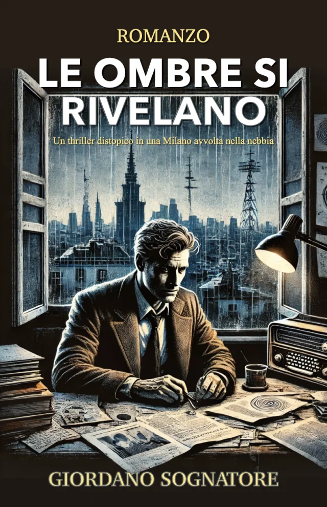

ROMANZO INTEGRALE GRATUITO · LETTURA ONLINE
Le Ombre
Si Rivelano
Giordano Sognatore
Il romanzo completo, gratuito e senza registrazione.
Leggi qui oppure scarica EPUB e PDF.

ROMANZO
Le Ombre Si Rivelano
Giordano Sognatore
© Giordano Sognatore
Tutti i diritti riservati
Prima edizione: aprile 2025
Dedica
A mia madre e a mio padre, radici profonde del mio cammino.
Ai miei fratelli e alla mia famiglia, rifugio sicuro nei giorni incerti, legami d'anima e sangue, compagni di crescita e di ricordi.
Agli amici, vicini e lontani, compagni di viaggio nelle pagine della vita.
Al mio piccolo amico a quattro zampe, dolce presenza che colora i miei giorni con affetto sincero.
Introduzione
Questo libro è un’opera di narrativa speculativa, un intreccio di fantasia e riflessioni su temi contemporanei. Alcuni nomi, eventi e organizzazioni reali sono stati utilizzati come spunti narrativi per creare un mondo immaginario, ma sono rielaborati in chiave creativa e non rappresentano fatti reali o accuse specifiche. Qualsiasi somiglianza con persone reali, vive o defunte, o con eventi specifici, oltre quanto già noto al pubblico dominio, è puramente casuale e frutto dell’immaginazione dell’autore. Le teorie, i complotti e le visioni distopiche qui descritte sono costruzioni artistiche, pensate per esplorare possibilità e stimolare il pensiero, non per affermare verità o denunciare individui od organizzazioni.
Quest’opera è protetta da copyright dall’autore. Non sono consentite modifiche, adattamenti o utilizzi commerciali alternativi senza il mio permesso scritto. Questo libro è un dono alla vostra immaginazione e alla vostra curiosità: immergetevi nelle sue ombre e nelle sue luci, lasciatevi accompagnare in un cammino inquieto ma vivo. Buona lettura, ovunque vi porti.
Giordano Sognatore
Indice
Prologo
Ciò che state per leggere non è una semplice storia. È un grido soffocato, un’eco che rimbalza tra le crepe di un mondo che abbiamo creduto di conoscere. Mi chiamo Marco Rinaldi, e per anni sono stato definito un folle, un visionario, un pericolo. Ho vissuto nell’ombra, tra le righe di documenti dimenticati, nelle frequenze disturbate di una radio che nessuno ascolta più, nei pixel di schermi che i più considerano specchi della verità. Ma io ho visto oltre. Ho visto i fili invisibili che muovono tutto, i burattinai che ridono mentre noi ci affanniamo a sopravvivere.
Quando tutto è iniziato, nel 2019, il mondo dormiva ancora. Io no. Avevo gli occhi spalancati, le mani tremanti su una penna che scribacchiava verità che nessuno voleva sentire. Un virus, dicevo. Un piano. Una gabbia costruita pezzo dopo pezzo, mentre ci distraevano con promesse di salvezza. Mi hanno riso in faccia, mi hanno chiuso le porte, mi hanno chiamato pazzo. Ma poi il mondo si è fermato, e le risate sono diventate silenzio.
Queste pagine non sono un’autodifesa, né un’arringa per la mia sanità mentale. Sono un resoconto, un testamento di ciò che ho visto avverarsi, passo dopo passo, mentre le mie teorie, quelle che chiamavano deliri, prendevano forma sotto gli occhi di tutti. Non ho scritto per essere creduto, ma per essere ricordato. Perché quando le ombre si rivelano, non c’è più spazio per negarle.
Milano, marzo 2025. La cella è fredda, il rumore dei passi dei secondini è l’unico metronomo del tempo che mi resta. Eppure, anche qui, so che non è finita. Una lettera è arrivata ieri, infilata tra le sbarre da mani che non ho visto. Dice che c’è ancora di più, che il puzzle non è completo. E io, nonostante tutto, sorrido. Perché forse, alla fine, non ero io il pazzo.
Leggete, se avete il coraggio. E guardatevi intorno. Le ombre sono già qui.
Marco Rinaldi
1. Il primo segnale
“Beato chi legge e beati coloro che ascoltano le parole di questa profezia e mettono in pratica le cose che vi sono scritte, perché il tempo è vicino.” – Apocalisse 1:3
La luce del mattino si insinuava timida attraverso le persiane incrinate, dipingendo strisce dorate su un caos di fogli sparsi, tazze di caffè ormai freddo e mozziconi di sigarette. Era una primavera lenta quella del 2019, e Milano si stiracchiava pigramente sotto un cielo ancora pallido. Marco Rinaldi era seduto alla sua scrivania di legno scheggiato, il laptop che ronzava come un vecchio compagno stanco, mentre la radio a onde corte crepitava, emettendo scariche statiche che sembravano messaggi da un universo lontano. Davanti a lui, lo schermo illuminava il suo canale Telegram, “Verità Nascoste”, un piccolo mondo di ottocento iscritti, una comunità di spiriti inquieti che pendevano dalle sue parole, o forse solo dai suoi deliri.
Ai suoi piedi, acciambellato su una coperta lisa e sbiadita, dormiva Zeus, il suo pastore tedesco dal manto nero lucido come l’ebano. Ogni tanto, un lieve russare sfuggiva dal muso del cane, un suono che rompeva il silenzio della stanza. Sul tavolo, accanto al computer, c’era una tazza di ceramica con un cuore dipinto a mano, un regalo di sua madre Teresa. Marco la sfiorò con le dita, un sorriso stanco che gli increspava le labbra. “Se il mondo finisce, mamma, almeno avrò i tuoi biscotti a consolarmi”, mormorò tra sé, accendendo una sigaretta con mani che tremavano appena. Aspirò una boccata profonda, il fumo che gli pizzicava la gola. “E se il 5G non mi frigge il cervello, ci penserà questa a mandarmi all’altro mondo”.
A quarantadue anni, Marco portava i segni di una vita che non gli aveva fatto sconti. La barba incolta gli copriva il mento come un’ombra ispida, gli occhi cerchiati di scuro tradivano troppe notti insonni, e i capelli brizzolati cadevano spettinati sulla fronte. Sembrava un profeta di strada, uno di quelli che la gente evita incrociando lo sguardo altrove. Ma non era sempre stato così. Dieci anni prima, la sua vita aveva un altro ritmo: scriveva articoli per un quotidiano rispettabile, pezzi taglienti su politica e scandali, con la firma in grassetto che gli dava un briciolo di orgoglio. Poi era arrivato quel reportage sul 5G e i sistemi di sorveglianza, un’inchiesta che aveva scavato troppo a fondo. “Un rischio”, lo aveva definito il caporedattore, con un tono che non ammetteva repliche. Da quel giorno, i colleghi avevano smesso di guardarlo negli occhi, il telefono aveva smesso di squillare, e il suo blog, nato con grandi speranze, era morto nell’indifferenza generale. Marco era scivolato piano nell’ombra, con Zeus come unico compagno fedele e il pensiero di Teresa, sessantotto anni di dolcezza ostinata, che lo chiamava ancora “il mio ragazzo” e gli spediva pacchi di biscotti fatti in casa. “Biscotti preferiti, mamma? Mandami un modem nuovo, piuttosto”, pensò, ridacchiando tra sé mentre scrollava il fumo dalla sigaretta.
Quella mattina, però, il passato non occupava i suoi pensieri. La notte precedente l’aveva trascorsa immerso nel deep web, inseguendo un thread in russo che lo aveva tenuto sveglio fino all’alba. Dopo ore di tentativi, usando una chiave recuperata su Telegram, era riuscito a decifrare un PDF criptato: brevetti farmaceutici, tra cui uno per un vaccino datato 2016, firmato da una multinazionale americana con un nome che puzzava di potere. Poi, un messaggio su WeChat, arrivato da un contatto misterioso, “Xiao_Long87”, direttamente da Wuhan: “Qualcosa non va al laboratorio. Gente che sparisce”. Marco aveva risposto fingendosi un curioso del posto, battendo sui tasti con una calma studiata: “Che succede lì?” La replica era stata breve, un sussurro digitale: “Non posso dire troppo. È pericoloso.” Poi il contatto si era dissolto nel silenzio. Zeus, forse percependo l’inquietudine che gli irrigidiva le spalle, aveva alzato la testa, gli occhi scuri fissi su di lui. “Tranquillo, socio,” gli disse Marco, allungando una mano per grattargli il muso morbido. “Se non lo capisco io, chi lo farà? Tu hai già il tuo da fare con le crocchette e i sogni di ossi giganti.”
Da mesi seguiva un canale Telegram cinese, uno di quelli che postavano frammenti di verità non filtrata. Quella mattina, tra i messaggi, era spuntata un’immagine sfocata: un edificio anonimo, con una didascalia criptica: “Wuhan, il segreto”. Marco non si fidava dei media tradizionali. “Pecore con microfoni”, li chiamava con disprezzo. E preferiva scavare da solo, traducendo in tempo reale da ogni lingua, inseguendo le briciole di verità crude che trovava sparse in rete. Prese il suo quaderno nero, la copertina consunta sotto le dita, e scribacchiò con una penna che perdeva inchiostro: “Un virus sta arrivando. Non sarà un caso.” Si alzò dalla sedia, il pavimento di legno scricchiolò sotto il suo peso. Zeus gli trotterellò dietro, sfiorandogli la gamba con il muso caldo. Dalla finestra, la strada di Milano si animava piano: uomini e donne con auricolari nelle orecchie, tazze di caffè da asporto in mano, visi assorti nei loro piccoli mondi. “Milano,” pensò Marco, “la città dove paghi cinque euro per un cappuccino e zero per un briciolo di cervello.”
Fu allora che lo notò. Sotto casa, seminascosta dall’ombra di un albero, c’era un’auto nera, il motore acceso che ronzava come un insetto paziente. Non era la prima volta che la vedeva. Con un gesto lento, spostò la tenda ingiallita per guardare meglio. Zeus emise un ringhio basso, le orecchie dritte. “Solo un fan troppo timido, eh?” disse Marco, cercando di scherzarci sopra, ma il cuore gli martellava nel petto. Spense la sigaretta nel posacenere stracolmo, il fumo che ancora gli aleggiava intorno, e afferrò il guinzaglio di Zeus. “Andiamo, socio, vediamo chi è il nostro ammiratore.”
Scese le scale con passo deciso, il cane al suo fianco, il muso teso e vigile. L’auto era ancora lì, accovacciata dietro un cassonetto come un predatore in attesa. Marco si avvicinò, il sapore acre della sigaretta ancora in gola. Poi, improvviso, il motore ruggì. I fari lo accecarono, due lame di luce che tagliarono il mattino. L’auto schizzò verso di lui, le gomme stridettero sull’asfalto. Marco fece un balzo indietro, la gamba sfiorata dal metallo rovente, mentre Zeus abbaiava furiosamente, tirando il guinzaglio con tutta la forza delle sue zampe. Barcollò, inciampando sul bordo del marciapiede. “Calmo, calmo,” ansimò, arrancando su per le scale con il cane che gli premeva contro. “Se vogliono farmi fuori, almeno che imparino a prendere la mira.”
Tornato in casa, respirava ancora a fatica, notò qualcosa alla sua porta: un cartoncino chiaro sporgeva dallo stipite, infilato con cura, ben visibile come il biglietto da visita di un agente di vendita. Lo prese con dita incerte e lo girò: sopra, in caratteri netti e stampati, c’era scritto “Occhi aperti”. Zeus guaì, gli occhi fissi su di lui come se capisse. “Fantastico,” disse Marco, la voce che tremava appena, “il mio fan club mi manda bigliettini d’amore. Peccato che non vendano anche magliette.” Infilò il biglietto in tasca e tornò alla scrivania, sfiorando con la mano la Bibbia che Teresa gli aveva regalato anni prima. “Mamma, se me ne parli ancora, la uso come sottobicchiere,” scherzò tra sé, ma non ebbe il cuore di spostarla.
Si sedette e digitò sul canale Telegram, le dita che volavano sulla tastiera: “Ascoltatemi. Un virus arriverà presto. Diranno che è naturale, ma io so la verità. Guardate Wuhan. Guardate i brevetti. Svegliatevi.” Pubblicò senza rileggere, il messaggio che si perdeva nel flusso della rete. La radio gracchiò, un lamento metallico. Marco girò la manopola con un gesto lento, e una voce emerse tra le interferenze, in inglese: “…containment breach… not ready… they’ll blame us…” Poi il silenzio, pesante come un macigno. Sul telefono, una notifica da WeChat, lo stesso contatto anonimo: “Stai attento. Loro sanno chi sei.” Il cuore gli balzò in gola. Zeus lo fissò, un guaito sommesso che rompeva la tensione. “Se ci beccano, socio, gli dico che sei tu il capo”, disse Marco, tentando un sorriso che gli morì sul nascere. Prese il quaderno e annotò tutto. Era un altro tassello di un puzzle che non riusciva ancora a decifrare. Chi erano “loro”? E cosa significava “containment breach”? Il quadro si stava formando, lento e minaccioso.
Si lasciò cadere sulla sedia, esausto ma con una scintilla di euforia che gli bruciava dentro. Fuori, Milano continuava il suo tran tran, ignara e indifferente. Chiuse gli occhi per un istante e immaginò un futuro che gli si dipingeva davanti: ospedali strapieni, strade deserte, schermi che ordinavano alla gente di restare in casa. E lui, in mezzo al caos, a gridare che lo aveva previsto, con Zeus al suo fianco e il ricordo di Teresa a dargli forza. Forse allora lo avrebbero ascoltato. Forse. O forse c’era qualcosa di più grande a guidarlo, un pensiero fugace che il suo scetticismo soffocava sul nascere. Rimase lì, solo con le sue ombre, i suoi segnali, il suo cane, sua madre, e una verità che gli bruciava davanti agli occhi, incandescente come la brace della sigaretta che si consumava tra le sue dita.
2. Voci nel buio
“Cercate il Signore mentre si può trovare, invocatelo mentre è vicino.” – Isaia 55:6
Ottobre 2019 avvolgeva Milano in un abbraccio umido e grigio. Marco Rinaldi camminava lungo una via secondaria, i suoi scarponi consumati calpestavano un tappeto di foglie bagnate, cadute dai rami spogli dei platani che fiancheggiavano la strada. Il rumore dei suoi passi era attutito, quasi soffocato, dall’aria densa di nebbia che trasformava i lampioni in tremolanti fiammelle, come candele sul punto di spegnersi. In mano teneva un sacchetto di carta marrone con qualche mela, che oscillava piano al ritmo dei suoi passi incerti, mentre la sua mente vagava lontano, intrappolata in un groviglio di pensieri inquieti. Era diretto da Teresa, sua madre, ma il suo cuore batteva per altro: segnali, frammenti, presagi che aveva raccolto per settimane, come un cacciatore di verità in un mondo cieco. Zeus era rimasto a casa, accucciato sulla sua coperta logora, con una ciotola d’acqua fresca e un mucchio di crocchette a fargli compagnia. Marco immaginò il suo cane fedele che russava piano, ignaro del caos che gli ronzava nella testa, e quel pensiero gli regalò un istante di calma, un’ancora in un mare sempre più agitato.
Poi lo percepì: un suono di passi dietro di lui, troppo regolari, troppo sincronizzati con i suoi. Si fermavano ogni volta che lui rallentava o si voltava. Girò la testa, strizzando gli occhi per penetrare la foschia che avvolgeva la strada come un velo. A una decina di metri, intravide un’ombra: una figura indistinta, avvolta in un cappotto scuro, il cappuccio abbassato a nascondere il viso. Marco accelerò il passo, il sacchetto gli scivolò dalle dita sudate e cadde a terra con un tonfo sordo. Le mele rotolarono sul selciato bagnato, rimbalzando tra le crepe dell’asfalto. “Fantastico,” borbottò tra i denti, il cuore che iniziava a galoppare, “ora ho uno stalker e niente frutta da portare a mamma.” Si chinò rapido, recuperando due mele ammaccate, il resto era irrecuperabile, e lanciò un’occhiata indietro. L’uomo era fermo, una statua nera nella nebbia, immobile come se lo stesse studiando. Poi, quando Marco si voltò di nuovo, era sparito, inghiottito dal grigio. Con il fiato corto, si affrettò verso casa di Teresa, controllando ogni angolo con la coda dell’occhio, il sacchetto stretto contro il petto come uno scudo.
Il mondo gli sembrava un’orchestra stonata, pronta a esplodere in una sinfonia di follia, e lui ne vedeva ogni nota in anticipo. Da settimane passava le notti a inseguire segnali sparsi, pezzi di un puzzle che si incastravano con una precisione inquietante. Su WeChat, un contatto di Wuhan, “Hubei_Watcher”, gli aveva mandato un messaggio che gli aveva gelato il sangue: “Ospedali pieni. Non è polmonite normale, i medici hanno paura”. Marco aveva tradotto il testo con un’app, le dita tremanti sulla tastiera del telefono, e aveva risposto: “Chi lo dice? Hai prove?” La risposta era arrivata sotto forma di una foto sfocata: una fila di ambulanze ferme davanti a un ospedale, scattata di notte sotto la luce tremolante di un’insegna al neon. Poi, silenzio. Il contatto si era volatilizzato, il suo profilo sparito come fumo nel vento. Sul deep web, un forum russo chiamato “Occhio nell’Ombra” era in fermento. Un nuovo utente, “Bezimiennyj” (Anonimo), aveva scritto: “Non guardate solo Wuhan. I finanziamenti vengono da ovest, le cavie da est. Presto lo vedrete”. Marco gli aveva mandato un messaggio privato, ricevendo solo una frase criptica in risposta: “Controlla le ombre dietro le luci.” Ma quella mattina, dopo ore passate a decifrare codici con le mani sudate, era arrivato un file audio criptato. Lo aveva aperto, e una voce distorta, metallica, gelida come una lama, gli aveva sussurrato: “Rinaldi, sappiamo dove vivi. Smetti o tua madre paga.” Il cuore gli era esploso nel petto, un tuono che gli rimbombava nelle orecchie. Non era un indizio anonimo: era un messaggio diretto a lui, con il suo nome, e il pensiero di Teresa, fragile e ignara, lo aveva trafitto come una spina.
Cercò conferme nel passato, scavando nei ricordi digitali. Su YouTube aveva rivisto un vecchio servizio di un telegiornale italiano, “Notizie Sera”, datato 17 novembre 2015, un video granuloso dal titolo “Esperimenti rischiosi in Cina”. Il giornalista, con una voce monotona che strideva contro le immagini sgranate, parlava di un “super virus chimera” creato in un laboratorio orientale: un coronavirus di pipistrello modificato per adattarsi all’uomo. Citava un articolo di una rivista scientifica, Frontiere della Virologia, intitolato “Un gruppo di coronavirus di pipistrello mostra potenziale per l’emergenza umana”. Scienziati di varie nazioni avevano collaborato per creare un ibrido, capace di infettare cellule umane tramite il recettore ACE2. “Un rischio globale”, aveva commentato un esperto con occhiali spessi e un’aria grave. “Se sfugge, non siamo pronti.” Marco aveva trascritto ogni parola sul suo quaderno nero: era la prova che il piano esisteva da anni, un’arma biologica tenuta in attesa, pronta a essere scatenata.
Quella stessa notte, mentre il fumo della sigaretta gli pizzicava gli occhi, Marco inciampò su un altro tassello che gli fece gelare il sangue. Su un forum del deep web, un utente anonimo aveva lasciato un link a un comunicato stampa semisepolto: pochi giorni prima, negli Stati Uniti, si era tenuta una simulazione chiamata "Eclissi Silenziosa", organizzata da un consorzio privato di esperti e finanziatori senza nome. Lo scenario? Un virus zoonotico, trasmesso dai pipistrelli agli animali da allevamento e poi agli uomini, un’epidemia che si propagava come un’ombra, colpendo prima i più vulnerabili e destabilizzando le città. Marco lesse i dettagli trattenendo il fiato: scienziati, industriali e strateghi riuniti in una sala sotterranea, a discutere di contenimento, scorte mediche e controllo della narrativa: un’esercitazione, pensò, per qualcosa di già pianificato.
“Non è una coincidenza”, scribacchiò sul quaderno con la penna tremante, mentre collegava i puntini. “Ottobre 2019, proprio ora, e io sono qui a vedere i segnali mentre loro giocano a fare i registi del disastro”. L’Eclissi Silenziosa non era una predizione, dicevano, solo un gioco di simulazione, ma a Marco puzzava di qualcosa di più: una prova generale per il caos che sentiva montare. Immaginò quelle stanze, luci soffuse e tavoli lucidi, con uomini in giacca e cravatta che muovevano pedine su una scacchiera globale, mentre fuori, nella nebbia di Milano, lui arrancava da solo a decifrare il loro gioco. “Se questo non è un piano,” mormorò tra sé, “allora io sono il Papa.” Il pensiero lo colpì come un pugno: forse non era solo paranoia, forse era già tutto deciso.
Su Telegram, il canale “Doomsday Preppers” era un caos di voci e teorie selvagge. “Patriot_1776” scriveva: “Il virus è alieno, portato dai grigi in combutta con il deep state.” “Redneck_Truth” ribatteva: “Non alieni, sono le élite. Il 5G lo attiva, un’arma elettromagnetica.” Marco aveva sbuffato, scribacchiando sul quaderno: “Dischi volanti che sparano virus? Almeno qualcuno ha fantasia.” Scartava le assurdità, ma non poteva ignorare il nodo che gli stringeva lo stomaco. Così, aveva aperto Amazon sul suo laptop, ordinando con un clic deciso: cinquanta mascherine, un flacone di disinfettante, una confezione di multivitaminici, scatolette di tonno impilate come mattoni, e un filtro per l’acqua portatile. “Meglio prevenire che pentirsi”, borbottò, mentre il carrello virtuale si riempiva.
In farmacia, sotto le luci fredde al neon, aveva preso una scatola di aspirine e un flacone di sciroppo per la tosse. “Sta arrivando qualcosa di grosso,” aveva detto al farmacista, un uomo basso con occhiali spessi che lo guardava da sopra il bancone. “Da Wuhan. Un virus da laboratorio, lo dicevano già nel 2015 alla TV.” L’uomo aveva riso, una risata secca che gli aveva fatto prudere le mani. “Ottobre, amico. È solo influenza stagionale. Non esageri?” Marco aveva stretto i denti, la voce che si abbassava in un ringhio sommesso: “Ridi pure, ma quando sarai in coda per il disinfettante, io avrò il mio bunker pieno di tonno.” Aveva pagato con una banconota stropicciata ed era uscito. Sul portone del palazzo di Teresa, aveva incrociato Gianni, il muratore del secondo piano, con la sua giacca macchiata di calcina. “Un virus sta per colpirci,” aveva esordito Marco, senza preamboli. “Nel 2015 lo sapevano, era in un servizio TV.” Gianni lo aveva interrotto con un gesto stanco della mano. “Smettila di spaventare tutti, sembri uno di quei matti con il cartello ‘la fine è vicina’.” Marco aveva stretto i pugni, le nocche bianche. “Meglio un matto preparato che un muratore senza mascherina.” Gianni lo aveva spinto leggermente, ridendo. “Calmati, profeta.” Marco si era allontanato, il nodo in gola che si stringeva come una corda.
Teresa lo accolse con un sorriso luminoso, il suo appartamento al terzo piano avvolto dal profumo di risotto ai funghi che sobbolliva in una pentola sul fuoco. “Sei magro, Marco,” disse, scrutandolo con occhi preoccupati mentre gli metteva davanti un piatto abbondante. Mangiarono in silenzio, il tintinnio delle posate contro la ceramica come unico suono. Poi lei accese la televisione, sintonizzandosi su Amor Proibito, la sua telenovela preferita. “Guarda questo ragazzo,” disse, indicando il protagonista sullo schermo, un giovane con i capelli scuri e un sorriso perfetto. “Sembra un angelo, ma è un diavolo dentro. Come nella vita, no?” Marco annuì distratto, la mente ancora inchiodata al file audio che gli ronzava nelle orecchie. “Ho comprato mascherine, mamma,” disse infine, posando la forchetta. “Qualcosa sta arrivando.” Lei lo guardò, le rughe sulla fronte che si approfondivano. “Oh, Marco, sei sempre così ansioso. Non spendere troppo in cose inutili.” Poi, con un tono più morbido, aggiunse: “Il mondo è pieno di male, ma c’è una luce, se la cerchi. Io prego per te. Provaci anche tu.” Marco rise, una risata breve e amara. “Mamma, se prego, è per un Wi-Fi migliore nel giorno del giudizio.” Ma quando lei gli posò una mano sul braccio, calda e leggera, qualcosa dentro di lui esitò, un calore che non seppe ignorare.
Più tardi, chiamò Laura, sua sorella. “Ciao, Marco. Come sta la mamma?” chiese lei con la voce stanca che tradiva una giornata lunga. “Bene. Le ho portato delle mele, o meglio, quello che ne è rimasto. Abbiamo pranzato. È ancora ossessionata con Amor Proibito.” Laura rise, un suono che gli scaldò il petto. “Sì, me lo ha detto l’ultima volta.” Poi Marco non riuscì a trattenersi: “Laura, a Wuhan c’è un virus. Lo dicevano nel 2015, un servizio TV. E oggi mi hanno minacciato. Hanno nominato la mamma.” Il silenzio dall’altro capo della linea fu pesante, un vuoto che si riempì di tensione. Poi Laura sbottò: “Basta, Marco! Sempre con queste teorie assurde! Se continui così, la farai ammalare di paura!” Marco si irrigidì. “Tu non capisci. Io vedo tutto.” Lei sospirò, un suono stanco e rassegnato. “Pensa alla mamma, almeno.” “Hai ragione,” disse lui, la voce che si abbassava. “Cercherò di non farla preoccupare.” Laura ammorbidì il tono. “Grazie. E stai attento, per favore.”
Tornando a casa, la nebbia si era ispessita, un muro grigio che inghiottiva i contorni della città. Sotto il suo portone, un’auto nera era ferma, i finestrini scuri e il motore spento, come un’ombra silenziosa. Marco si immobilizzò, il respiro che gli si fermava in gola, poi corse dentro. Appena entrato, la radio gracchiò, un lamento metallico che gli fece drizzare i capelli sulla nuca. “…quarantena… non possiamo uscire…” Tradusse dal cinese, il sangue che gli pulsava nelle tempie. Aprì Telegram e sul suo canale “Verità Nascoste” digitò rapido: “Wuhan non è un caso. Ho le prove: un servizio TV del 2015, audio da Telegram, foto da WeChat. Preparatevi.” Zeus gli appoggiò il muso sul ginocchio, gli occhi scuri che lo fissavano con una fiducia cieca. “Siamo noi tre contro il mondo, eh, socio?” disse Marco, grattandolo dietro le orecchie, la pelliccia morbida sotto le dita.
La nebbia fuori era densa come un presagio, un sudario che soffocava la città. Il farmacista, Gianni, Laura: nessuno vedeva quello che vedeva lui. Pensò ai medici di Wuhan, silenziati uno dopo l’altro, le loro voci spezzate come rami secchi. Sul tavolo, la Bibbia di Teresa lo fissava, immobile. “Cercate il Signore mentre si può trovare,” gli tornò in mente. “Non ora,” borbottò, strofinandosi gli occhi stanchi, ma non ebbe il coraggio di spostarla.
Quella notte, il sonno lo trascinò in un sogno oscuro. Milano era avvolta dalla nebbia, le strade deserte interrotte dal lamento lontano delle sirene. Figure in tute bianche lo inseguivano, i volti nascosti dietro maschere, mentre Teresa e Zeus erano lontani, le loro voci distorte che lo chiamavano senza raggiungerlo. Poi, sopra di lui, un pipistrello gigante con ali di metallo lo fissò, gli occhi rossi come fari che tagliavano il buio, sussurrando con una voce che gli gelò il sangue: “Marco…” Si svegliò di soprassalto, il sudore freddo che gli colava lungo la schiena, il cuore che martellava come un tamburo. Accese la lampada sul comodino, la luce fioca che tremava contro le pareti screpolate, e fissò il soffitto. “Solo un sogno,” si disse, la voce roca che rompeva il silenzio. Ma il peso di quel nome, il suo nome, pronunciato da quella creatura gli rimase addosso.
3. La maschera cade
“La verità vi farà liberi.” – Giovanni 8:32
Le strade di Milano giacevano avvolte in un silenzio irreale, un sudario pesante che soffocava ogni suono familiare. Solo il lamento lontano delle sirene e il ticchettio insistente della pioggia sui vetri incrostati di smog rompevano quella quiete innaturale. Il lockdown era scattato due giorni prima, l’8 marzo 2020, trasformando l’Italia in una prigione senza sbarre: i negozi avevano abbassato le serrande, le strade si erano svuotate, e il ronzio delle auto, un tempo costante, era stato inghiottito da un’eco di nulla. Marco Rinaldi osservava il mondo dalla finestra del suo monolocale al terzo piano, un buco incastrato in un palazzo anni ’60 con la vernice scrostata e l’intonaco che si sgretolava come pelle vecchia. Le tende, ingiallite dal tempo, erano tirate appena quel tanto da lasciargli scorgere Piazza Piola, deserta sotto un cielo plumbeo: i bar erano sprangati, i cestini traboccavano di guanti azzurri e mascherine usa e getta, e un gatto randagio, con il pelo spelacchiato, sgattaiolava tra le ombre dei lampioni spenti. Sul tavolo, le mascherine ordinate da Amazon erano impilate accanto a una sedia traballante, vicino a scatole di tonno e fagioli in latta e flaconi di disinfettante che emanavano un odore acre, quasi pungente, di paranoia. “Tonno e mascherine: il kit del paranoico perfetto,” borbottò Marco, sfiorando una scatoletta con la punta delle dita. Zeus dormiva sul pavimento, il pelo nero lucido che catturava la luce fioca della lampadina nuda appesa al soffitto, il respiro regolare un conforto fragile in quella stanza soffocante. La radio di Teresa, un vecchio relitto a transistor regalatole per il suo trentesimo compleanno, crepitava sul davanzale: “Milano zona rossa… ospedali al collasso… coprifuoco dalle 18…” Fuori, un uomo tossì con violenza, un suono rauco e profondo che rimbalzò tra i palazzi come un avvertimento. Marco si ritrasse d’istinto, con il cuore che accelerava. Aveva previsto tutto, ma ora la realtà si era svelata: il lockdown non era sanità, era una dittatura mascherata, un controllo che si insinuava subdolo come un virus tra le crepe della vita quotidiana.
Il virus era esploso, proprio come aveva scritto sul suo canale Telegram “Verità Nascoste” a ottobre, quando i suoi pochi follower lo leggevano con un misto di curiosità e scetticismo. Ma ora Marco vedeva oltre la superficie: non si trattava solo di una fuga accidentale da un laboratorio, ma di un piano orchestrato con cura. I medici di Wuhan, silenziati a dicembre, erano stati i primi a cadere, voci soffocate da un’ombra che si era allungata fino a Milano, avvolgendo l’Italia in una morsa mortale. I telegiornali parlavano di centinaia di morti: a Bergamo, le bare si accatastavano in chiese silenziose, i camion militari avanzavano lenti sotto cieli plumbei, e gli ospedali si erano trasformati in campi di battaglia, con medici dai volti stanchi nascosti dietro maschere di plastica. Su Telegram, un contatto russo, “Pravda_Skvoz_Ten”, aveva caricato nuovi documenti che Marco aveva subito condiviso con mani tremanti: “Non è un caso: è stato creato in laboratorio.” Mentre sul canale “Doomsday Preppers” i soliti matti deliravano di alieni e droni armati di virus. Lui, però, filtrava il rumore, annotando sul suo quaderno nero ogni dettaglio utile. Le parole di “Bezimiennyj”, “Controlla le ombre dietro le luci”, gli ronzavano in testa come un’ossessione. Un vecchio servizio di un telegiornale italiano del 2015, lo studio su Frontiere della Virologia, i finanziamenti sospetti che aveva scovato nel deep web: i pezzi si incastravano in un mosaico troppo chiaro. Il lockdown non era una misura di protezione, ma una prova generale: chiudere città, tracciare movimenti, spegnere ogni voce dissidente sotto il pretesto della sicurezza. La maschera della sanità era caduta, e sotto c’era un volto di ferro, una dittatura che stringeva la gola al Paese.
Quel mattino, sotto un cielo grigio sporco che sembrava premere sui tetti, Marco prese il telefono e chiamò Bianca. La ricordava come un’immagine scolpita nella memoria: l’aveva incontrata anni prima su un autobus affollato, i capelli biondi che cadevano come seta liquida sulle spalle, gli occhi verdi come smeraldi che brillavano anche sotto la luce sporca del neon. Indossava una felpa grigia e jeans strappati, un angelo caduto in un mondo di pendolari. Si erano ritrovati su Telegram nel 2017; lei parlava di arte: il blu cobalto per dipingere la malinconia, il giallo ocra per catturare la speranza, mentre lui le confidava le sue ombre, i suoi pensieri che si torcevano e lo tenevano sveglio la notte. Per Bianca era un’amicizia digitale, un filo tenue; per Marco, un amore che gli bruciava dentro, silenzioso e inconfessato. Ora, a ventotto anni, lei viveva a Lambrate, dipingendo murales sui muri scrostati, prima che il lockdown la inchiodasse in casa. “Bianca, sono io,” disse, la voce roca che graffiava il silenzio. “Questo virus non è naturale. Il lockdown è una dittatura sanitaria. Stai attenta.” Dall’altro capo, lei rise, un suono leggero ma venato d’incredulità. “Marco, ancora con queste storie? Sto bene, dipingo sul balcone per non impazzire tra queste mura.” Lui insisté, il tono che si incupiva: “Non è paranoia, guarda fuori! Ci controllano come pedine su una scacchiera…” Lei sospirò, paziente ma distante. “Ti preoccupi troppo. Apprezzo che mi pensi, ma lasciami respirare, ok?” La linea cadde con un clic secco. Marco strinse il telefono tra le mani. “Grande, Marco,” mormorò, “ora pensa che sono un matto con un cane e un quaderno pieno di deliri.” Il cuore gli si strinse, trafitto da un ago di delusione.
Poco dopo, il telefono squillò di nuovo. Era Teresa, la voce fragile ma calda come una coperta di lana. “Marco, come stai? Qui è tutto chiuso, le strade sono vuote come in un film dell’orrore. Ieri un’ambulanza ha preso la signora del secondo piano, poveretta. Prego tanto, non ci resta che questo. Tu preghi?” Marco esitò, il suo sguardo cadde sulla Bibbia che giaceva sul tavolo, la copertina di pelle consunta sotto uno strato di polvere. “Non proprio, mamma. Ma… ci penso, ogni tanto.” Lei sospirò, un suono dolce che gli arrivò dritto al petto. Riattaccò con la promessa di richiamarla presto, ma le sue parole gli rimasero appiccicate addosso, un’eco che non riusciva a scrollarsi.
Tornò al laptop e aggiornò “Verità Nascoste” su Telegram, le dita che battevano rapide sulla tastiera: “Il lockdown è l’inizio. La maschera è caduta: non è salute, ma dittatura sanitaria. Preparatevi: cibo, acqua, medicine. Non fidatevi dei media, sono il loro megafono.” I follower, ormai saliti a mille, crescevano piano, come un fuoco che prendeva forza. Un commento lo colpì come un sasso: “LuceNellOmbra” aveva scritto: “Hai ragione, ma la verità non è solo là fuori. Guardati dentro. Cosa cerchi davvero?” Marco fissò quelle parole sullo schermo, un turbamento gli scavava dentro, ma non poteva permettersi distrazioni: la dittatura avanzava, e lui doveva tenere gli occhi aperti.
Mentre preparava un caffè con la moka ammaccata, un rumore di passi pesanti risuonò nel corridoio oltre la porta. Era Gianni, il vicino del piano di sotto, che trascinava una valigia logora, le ruote che stridevano sul pavimento sporco. Cinquantenne, con mani callose da muratore e una barba incolta che gli incorniciava il viso, indossava una giacca verde sbiadita che puzzava di muffa. Sembrava spezzato, il pallore della pelle accentuato dalle occhiaie scure. “Gianni, dove vai?” chiese Marco, aprendo la porta quel tanto da guardarlo negli occhi. “Via. Mia sorella sta male a Lodi. Febbre alta, respiro corto. Qui c’è la morte nell’aria, l’hai visto? Lenzuola bianche appese ai balconi, elicotteri che ronzano sopra il quartiere.” Marco lo fissò, notando il tremore nelle mani che stringevano la maniglia della valigia. “Non è solo un virus, è una gabbia. Te l’avevo detto, mesi fa.” Gianni scosse la testa, un sorriso amaro che gli increspava le labbra screpolate. “Forse avevi ragione, profeta. Ma devo andare da lei. Se mi fermano, dirò che è un’emergenza.” Si scambiarono uno sguardo carico di una solidarietà silenziosa. Gianni scese le scale, i suoi passi che svanivano nel buio del pianerottolo, lasciandosi dietro solo l’odore di tabacco stantio.
Quella sera, Marco prese un foglio di carta ingiallito e una penna che perdeva inchiostro. Scrisse con mano incerta: “Bianca, ti ho vista come un angelo quel giorno sull’autobus. Stai attenta, il lockdown è una trappola. Sei sempre nei miei pensieri. M.” Vi allegò un ciondolo: un’ala d’argento con una perlina bianca, comprato anni prima in un negozio angusto di Via Torino. Rivide il commerciante, un uomo magro con occhi sfuggenti e un sorriso troppo largo, che glielo aveva allungato dicendo: “Questa ti porterà lontano, ragazzo.” Sul momento gli era sembrato uno strano augurio, quasi un uncino che si era conficcato nella memoria, ma ora, ripensandoci, un brivido gli pizzicò la nuca. Scosse la testa per scacciare il pensiero e infilò il ciondolo nella busta, e la ripose in una bustina di plastica trasparente per proteggerla dalla pioggia. Uscì nella notte, l’aria fredda che gli pungeva il viso, diretto alla Fiat Punto blu di Bianca, parcheggiata poco lontano sotto un lampione fioco. La pioggia cadeva fitta, inzuppandogli il cappuccio della felpa grigia. Infilò la lettera sotto il tergicristallo, ma un rumore di stivali sull’asfalto lo fece voltare di scatto: un’ombra dietro l’angolo, avvolta in un cappotto scuro, i passi pesanti che risuonavano nella pioggia. Il cuore gli balzò in gola. “Non ora,” sibilò tra i denti, accelerando verso casa. L’ombra lo seguì, un’eco ostinata che tagliava il rumore della pioggia. Marco inciampò su un marciapiede sconnesso, il ginocchio bruciava contro il cemento bagnato. Dalla finestra, Zeus abbaiò furiosamente, un latrato che squarciò il silenzio. L’ombra si fermò, esitante, poi svanì nella nebbia che si alzava dall’asfalto. Marco rientrò barcollando, ansimando, e chiuse la porta con un colpo secco. “Fantastico,” borbottò, il fiato corto, “ora ho un fan club armato di ombrelli e cattive intenzioni.”
Il giorno dopo, il telefono squillò mentre il caffè gorgogliava nella moka. Era Bianca, la voce calma ma incrinata da un’ombra di disagio. “Marco, sei stato tu a lasciare questa lettera sulla mia macchina?” chiese. Lui deglutì, la gola secca. “Sì, volevo che avessi un portafortuna.” Lei fece una pausa, il respiro che si sentiva appena. “È bellissimo, mi ha fatto sorridere ripensando a quando mi chiamavi ‘angelo’. Ma trovarlo così, sotto la pioggia, mi ha fatto venire i brividi. Non farlo più, ok? Mi preoccupi con queste storie di trappole.” Riattaccò senza aspettare risposta. Marco si lasciò cadere sul divano sfondato, le guance che bruciavano di vergogna. La immaginò mentre si scrutava intorno esitante, raccogliendo la busta dall’auto. Aveva voluto darle un gesto d’amore, ma l’aveva trasformato in un’ombra inquietante, un altro errore da aggiungere alla lista.
Poco dopo, il telefono squillò di nuovo, strappandolo dai suoi pensieri. Era Teresa, la voce tremante come una foglia al vento. “Marco, è arrivata una busta sotto la porta. Nessun mittente. Dentro c’era una foto… di te, davanti casa mia, con Zeus al guinzaglio. Sul retro, scritto a penna: ‘Smetti o lei paga.’” Marco sentì il sangue gelarsi nelle vene, un freddo che gli risaliva lungo la schiena. “Mamma, chiudi tutto, non aprire a nessuno. Arrivo subito.” Riattaccò, il cuore che martellava come un tamburo impazzito. Non era più solo paranoia: lo stavano braccando, e ora Teresa era nel mirino, una pedina nel loro gioco crudele.
Quella notte, il sonno lo avvolse come una marea, ma i sogni lo aggredirono senza pietà. Si ritrovò in un laboratorio dalle pareti d’acciaio, illuminate da luci verdi malate che pulsavano come vene. L’odore acre di disinfettante gli bruciava il naso. Uomini in tute bianche ridevano, un coro metallico che rimbombava nelle orecchie, mentre provette di vetro pulsavano di un liquido verde, vivo e minaccioso. In un angolo, un pipistrello si contorceva in una gabbia arrugginita. Marco corse verso di esso, le mani insanguinate mentre cercava di spezzare le sbarre, ma le figure lo inseguivano, i passi pesanti che scuotevano il pavimento. Bianca dipingeva una tela rossa e nera sotto una luce tremolante, sussurrando: “Perché non ti fermi?” Teresa pregava in un angolo, la voce soffocata da un ronzio elettrico. Sopra di lui, telecamere con occhi rossi lo fissavano, mentre megafoni appesi al soffitto gridavano ordini incomprensibili, un caos di parole distorte. Marco strappò la gabbia con un urlo, il pipistrello volò via in un frullo d’ali, ma un’ombra lo afferrò da dietro, una voce raschiante che gli sussurrò all’orecchio: “La verità brucia.” Si svegliò con un grido strozzato, il sudore che gli colava sugli occhi, il cuore in gola. La stanza era immersa nel buio, la pioggia che tamburellava contro i vetri come un monito. Non era solo un sogno: la maschera era caduta del tutto, e la dittatura stringeva la morsa, un cappio che si chiudeva lento ma inesorabile.
4. Le crepe si allargano
“Chi ha orecchi per intendere, intenda.” – Matteo 13:9
Milano giaceva ferita sotto un sole pallido, un disco slavato che arrancava tra nuvole sfilacciate, troppo stanco per scaldare le strade ancora schiacciate dal peso del lockdown. Era il 20 maggio 2020, e da due settimane le catene si erano allentate, ma la città restava un guscio vuoto, intrappolata in un limbo di silenzio e sospetto. Marco Rinaldi spalancò le tende del suo monolocale in Piazza Piola, il vetro incrostato di smog che deformava il mondo esterno in un riflesso sporco e tremolante. Di fronte, un palazzo screpolato si ergeva come un guardiano muto, le finestre cieche che scrutavano una strada deserta, cosparsa di mascherine strappate e mozziconi di sigarette schiacciati dall’umidità. Zeus ringhiò piano ai suoi piedi, il muso teso verso il lamento stridulo di un’ambulanza che tagliava l’aria sotto la finestra, le luci rosse e blu che danzavano come fiamme su un altare abbandonato. Il pelo nero del cane vibrava, quasi captasse un’eco che Marco non poteva sentire. Sul tavolo, un caos di fogli accartocciati, tazze incrostate di caffè freddo e il quaderno nero, le sue pagine macchiate da un’inchiostro che gli aveva tatuato le dita di ombre scure, un marchio di ossessione. La radio di Teresa, un relitto a transistor con la plastica ingiallita e un’antenna storta, gracchiava dal davanzale: “3.200 casi, 300 morti.” Marco girò la manopola con un gesto brusco, ma invece dei numeri monotoni, un sibilo acuto eruppe dall’apparecchio, seguito da una voce lontana: “Rinaldi… le crepe parlano…” Il crepitio si spense in un silenzio che pesava come piombo. “Numeri per pecore,” borbottò, la voce rauca che graffiava la quiete. “Io cerco le crepe, non le favole.” Ogni bugia era un tassello, ogni silenzio una fessura: il virus non era un caso, era un’arma, e una città lontana, avvolta nel mistero, la sua culla oscura.
Le prove si ammucchiavano come schegge di vetro, un mosaico tagliente che gli feriva le mani a ogni tocco. Quel servizio televisivo del 2015, il filmato sgranato trovato su YouTube, con un giornalista dalla voce piatta che parlava di un “virus ibrido” forgiato in un laboratorio orientale, era stato il primo squarcio. Marco si strofinò gli occhi, il bruciore della stanchezza che gli pizzicava le palpebre. Su Telegram, “Verità Nascoste” contava ormai mille seguaci, un manipolo di spiriti inquieti che divoravano i suoi post con occhi famelici. Aveva caricato un articolo di un quotidiano occidentale: dispacci diplomatici di due anni prima segnalavano “falle profonde” in un centro di ricerca in Cina, un luogo di provette e ombre finanziato da milioni di dollari provenienti da mani invisibili. “Pipistrelli delle grotte dello Yunnan,” scribacchiò sul quaderno, tracciando linee rosse che tremavano sotto la pressione della penna. Un tabloid inglese descriveva caverne remote, il SARS come un’ombra ancestrale che si allungava sul presente. La cenere della sigaretta cadde sul tavolo mentre leggeva un leak su un forum caotico: dati rubati da server lontani, frammenti di codici e messaggi che tracciavano un sentiero verso un’agenzia senza volto, con un piano che odorava di incubo: nebbia chimica contaminata col virus, sparsa vicino a un “wet market”, altro che fatalità! Prese un sorso di caffè freddo, la tazza che gli scivolò quasi di mano, e sfogliò un paper di una scienziata orientale, la “signora delle ali nere”. Quelle parole: “guadagno di funzione”, “ricombinazione”, scritte con una freddezza che gli gelava le ossa, lo fissavano dalla pagina come occhi di ghiaccio. “Esperimenti da incubo,” pensò, un brivido che gli risaliva lungo la schiena, la cenere che si spargeva come neve grigia tra i fogli sparpagliati.
La bomba era esplosa il 18 maggio, due giorni prima, un fulmine che aveva squarciato il cielo plumbeo della sua mente. Un contatto anonimo su Telegram gli aveva inviato un link a un sito di notizie ribelli: un premio Nobel, un anziano virologo con la voce tremula, affermava che il virus portava cicatrici artificiali, inserti che non potevano essere figli della natura. Marco aveva rovesciato il caffè sulla scrivania, imprecando mentre il liquido marrone inondava appunti e grafici, un caos che rispecchiava il suo tumulto interiore. “Creato, non scappato,” sibilò, strofinandosi le mani sulla felpa logora. Un angolo oscuro del web parlava di un ricercatore scomparso che aveva sussurrato di un errore fatale; un canale americano accennava a indagini nascoste. Si grattò la barba incolta, il prurito che gli dava sui nervi, e lesse un altro giornale che tirava in ballo armi biologiche celate sotto una patina di scienza. Ma il colpo decisivo era un preprint su una piattaforma scientifica, datato gennaio 2020: un’équipe di studiosi orientali, in un testo dal titolo criptico, mostrava quattro sequenze aliene nella proteina del virus, frammenti che urlavano manipolazione. “Improbabile che sia un caso,” scrivevano. Marco aveva stampato il PDF, le mani che tremavano mentre fissava quei diagrammi contorti, linee che sembravano danzare come serpenti di luce. “Inserti artificiali? Come la mettiamo ora, con la favola dei serpenti e pangolini?” borbottò, cercando di ridere, ma la paura gli torceva le viscere. Il paper era svanito dalla rete, soffocato dalle critiche della “comunità scientifica”, e quel silenzio forzato puzzava di catene. “Lo hanno censurato perché era vero,” annotò sul quaderno, la penna che incideva solchi profondi nella carta.
Non finiva lì. Il contatto russo “Pravda_Skvoz_Ten”, riportava voci ribelli, medici con nomi che echeggiavano come tuoni lontani, denunciavano siringhe avvelenate, un coro silenziato che rimbombava nella sua testa. Un documentario, scaricato da un link sepolto, parlava di “ombre demografiche” con una calma che gli ghiacciava il sangue. Marco aveva salvato tutto su un hard disk malconcio, pensando a Bianca, alla sua voce che gli mancava come un respiro trattenuto troppo a lungo. “Se glielo dicessi, mi spedirebbe un quadro di veleno con un fiocco sopra,” mormorò, un sorriso amaro che gli increspava le labbra. Poi, un messaggio su Telegram lo colpì come una scarica. Firmato “OS”, OmbraSilente, forse, diceva: “Non fidarti delle siringhe. Guarda oltre la culla. Ti contatterò. P.S. Come sta il risotto di Teresa?” Allegata, una foto: Marco e Zeus, ripresi quella mattina sotto il sole anemico mentre uscivano di casa, il cappuccio abbassato a mostrare il viso scavato. Il dettaglio del risotto, un ricordo caldo, una battuta sussurrata nelle sere d’inverno con Teresa, lo trafisse come una lama gelida. “Fantastico, paparazzi con un ricettario,” ringhiò seccato, spegnendo il telefono con un gesto rapido.
La paranoia esplose quella notte, un’onda che lo travolse senza scampo. “Usciamo, socio,” disse a Zeus, agganciando il guinzaglio con mani umide di sudore. L’aria fuori era pesante, impregnata di disinfettante e terra bagnata, un odore che gli pizzicava la gola. Passando sotto un lampione spento, un ronzio lo fece girare di scatto: un drone, un insetto nero con ali di metallo, si librava sopra il palazzo, le luci rosse che pulsavano come occhi vivi nel buio. “Ci mancava il guardiano volante,” borbottò, il cuore che galoppava. Accelerò il passo, Zeus che ringhiava basso al suo fianco, quando un’ombra si mosse tra i cassonetti: un uomo con un cappuccio calato sulla testa, il cappotto fradicio che gocciolava sull’asfalto, un telefono premuto contro l’orecchio che emetteva un bagliore azzurro. Marco si fermò e l’uomo alzò lo sguardo: occhi freddi, un lampo di metallo al polso, forse un orologio o qualcosa di più sinistro. Zeus si lanciò avanti, un latrato che squarciò la notte, e l’uomo inciampò, lasciandosi sfuggire il telefono che rimbalzò sul selciato con un crack. Marco afferrò il guinzaglio, correndo verso un vicolo stretto, i piedi che slittavano sulle pietre umide. L’uomo gridò qualcosa, poi raccolse il dispositivo e sparì dietro un angolo, il cappotto che sventolava come un mantello. “Bel colpo, socio. Meriteresti una medaglia,” ansimò Marco, accarezzando Zeus con una mano tremante, la pelliccia calda che gli ancorava i nervi.
Tornando a casa, Zeus si irrigidì sulla soglia, un ringhio sordo che vibrava nel petto, gli occhi fissi verso l’interno. La porta era socchiusa, un graffio fresco sullo stipite che luccicava sotto la luce fioca del corridoio. Marco afferrò una padella dal lavello, il manico gelido contro il palmo, e chiuse l’uscio silenziosamente. Un’ombra schizzò dalla penombra, alzò la padella con un urlo strozzato, ma Zeus balzò avanti, inseguendola con un latrato feroce. Un miagolio acuto tagliò l’aria: un gatto randagio, nero e spelacchiato, sfrecciò via dalla finestra aperta, svanendo nella notte come un’illusione. “Zeus, sei un cane da guardia o un cacciatore di fantasmi?” borbottò Marco, abbassando la padella con un sospiro. Ma poi lo vide: tra i fogli sparsi e le tazze abbandonate, un biglietto bianco spiccava, scritto a mano con inchiostro nero. “Smetti di scavare. Ultimo avviso.” Lo fissò, il sangue che gli martellava nelle tempie, un ronzio che gli ottenebrava la mente. “Non era il gatto,” sussurrò, accendendo la luce con un gesto rapido. Chiamò Teresa, la voce tesa che tremava. “Mamma, tutto bene?” chiese, stringendo il telefono. “Sì, Marco, ma oggi un uomo ha chiesto di te al negozio sotto casa. Cappotto scuro, uno sguardo che metteva i brividi.” Marco deglutì, un nodo che gli serrava la gola. “Chiudi tutto, non aprire a nessuno.” Riattaccò, il terrore che montava come una marea scura.
Mandò un messaggio a Bianca su Telegram, le dita che volavano sulla tastiera: “Bianca, il virus è un’arma, le siringhe peggio. Stai attenta.” Lei rispose in pochi secondi, le parole che lampeggiavano sullo schermo: “Marco, smettila. Non sono una bambina da spaventare con le tue favole nere. Oggi ho dipinto un pipistrello, ali nere, occhi rossi, un po’ come te ultimamente.” Una foto seguì il messaggio: un dipinto cupo, un pipistrello stilizzato con ali frastagliate e occhi scarlatti che sembravano perforare lo schermo, la vernice che colava come sangue rappreso su uno sfondo nero. Marco strinse il telefono, il cuore trafitto da una frustrazione che bruciava. “Ora sono il mostro della sua tela,” mormorò, la voce che si incrinava, gli occhi fissi su quel ritratto che lo inchiodava con una verità che non voleva vedere. La radio gracchiò dal davanzale: “…nuove restrizioni in arrivo…” Marco spense tutto con un colpo secco, il silenzio che lo avvolgeva come una coperta soffocante.
Quella notte, il sogno lo aggredì con una ferocia che lo lasciò senza fiato. Si ritrovò in una sala di specchi, ogni riflesso che lo fissava con occhi vuoti e ostili, il vetro che vibrava sotto una luce fredda e malata. Una macchina ronzante, un groviglio di acciaio e cavi arrugginiti, sputava siringhe luminose, gli aghi che si torcevano in viticci metallici, avvolgendogli le gambe con una presa gelida che pizzicava come spine. Una voce tagliente echeggiò tra le pareti: “La verità è un’iniezione che non vuoi.” Gli specchi si frantumarono in schegge affilate, rivelando ombre con maschere bianche che lo accerchiavano, il respiro che si condensava in volute bianche nell’aria densa. Una figura emerse dalla penombra: Teresa, avvolta in un cappotto scuro, il viso scavato da rughe profonde, che lo fissava con occhi pieni di un dolore muto. “Mamma?” balbettò, ma lei si dissolse come cenere al vento, lasciando un’eco di passi che svanivano nel nulla. Zeus abbaiava da una gabbia di luce pulsante, le zampe che graffiavano un pavimento screpolato, mentre i viticci lo trascinavano verso la macchina, il ronzio che gli scavava il cranio come un trapano. Sopra di lui, un soffitto di schermi tremolava, mostrando volti senza nome che lo fissavano rabbiosi, bocche mute che sussurravano accuse. Si svegliò urlando, il sudore che gli bruciava gli occhi, le mani aggrappate alle lenzuola sgualcite. Il buio della stanza lo strinse, il respiro affannoso che spezzava il silenzio. Le crepe si allargavano, e la verità lo stava inghiottendo vivo, un abisso che lo chiamava con una voce che non poteva più ignorare.
5. Il grido spezzato
“Guardatevi dai falsi profeti, che vengono a voi in veste di pecore, ma dentro sono lupi rapaci.” – Matteo 7:15
Milano tremava sotto un sole pallido, un cerchio anemico che lottava per farsi strada tra nuvole sfilacciate, incapace di sciogliere l’umidità che appesantiva l’aria. Era il 10 giugno 2020, e Piazza Duca d’Aosta ribolliva come una pentola dimenticata sul fuoco: le proteste Black Lives Matter, nate a Minneapolis dopo la tragica morte di George Floyd il 25 maggio, avevano attraversato l’Atlantico, portando migliaia di voci a gridare tra i palazzi screpolati della città. Marco Rinaldi, quarantadue anni di ombre e certezze incrinate, scese in strada quel mattino, non per unirsi al corteo, ma per scrutarlo con occhi sospettosi. Da un angolo di Via Vitruvio, si fermò sotto l’ombra di un platano spelacchiato, osservando la folla che si gonfiava come un’onda inquieta: striscioni con “No Justice, No Peace” e “I Can’t Breathe” oscillavano sopra le teste, bandiere di un esercito senza guida, mentre il ronzio dei megafoni si mescolava al rombo dei motorini, tornati a sputare fumo dopo il lockdown come animali liberati da una gabbia. Zeus, al suo fianco, ringhiava piano, il pelo nero ritto come un’antenna tesa verso un pericolo che Marco sentiva nell’aria, un’energia oscura che pulsava sotto la superficie. “Calmo, socio,” mormorò, stringendo il guinzaglio di cuoio consumato. “Se questo è svegliarsi, preferisco il coma del lockdown.” Dietro i pugni alzati e le grida, vedeva un copione, un filo invisibile che lo riportava al reticolo di linee e appunti sul suo quaderno nero, un puzzle che si allargava ogni giorno di più.
La folla si gonfiava, un mare di mascherine sgualcite e cappucci calati sotto un cielo incerto, striato di grigio. Un ragazzo con una bandana rossa lo fissò da lontano, con gli occhi stretti sopra il tessuto che gli copriva il viso, un lampo di ostilità che tagliava la distanza. “Ehi, sei quel matto di Telegram, vero?” sbraitò, avanzando tra i corpi sudati, la voce che si alzava sopra il caos. Marco si irrigidì, il corpo teso come una corda sul punto di spezzarsi. “Non proprio, amico. Solo un turista della verità,” rispose, il tono tagliente come un rasoio, un sorriso storto che non raggiungeva gli occhi. “Complottista schifoso!” urlò il ragazzo, e un pugno volò rapido, sfiorandogli la guancia con un sibilo. Zeus scattò, un ringhio gutturale che esplose dal profondo del petto, balzando tra loro e azzannando l’aria con zanne bianche che brillavano al sole. Due altri manifestanti si avvicinarono, uno con un coltello a serramanico che luccicava come una promessa sotto la luce fioca. “Muoviti, socio!” gridò Marco, rovesciando un tavolo di volantini, carte che volavano come coriandoli nel vento, e tuffandosi nella folla. Zeus abbaiò furioso, atterrando il ragazzo con la bandana con un balzo preciso, mentre Marco zigzagava tra striscioni caduti e megafoni muti, il cuore che martellava nelle orecchie. Un bastone di legno fendette l’aria alle sue spalle, ma il cane girò su se stesso, un latrato feroce che fece inciampare l’aggressore su una lattina schiacciata, il legno che rotolava via con un tonfo sordo. Sopra di loro, un ronzio meccanico squarciò il cielo: un drone della polizia, nero e lucido, si librava come un avvoltoio, i LED rossi che pulsavano come occhi puntati su di lui. “Perfetto, il mio debutto come sacco da boxe per energumeni woke,” borbottò Marco, infilandosi in un mercato abbandonato. Rovesciò una bancarella di cassette marce, il legno che si schiantava alle sue spalle con un crack secco, e si tuffò in un vicolo stretto, l’adrenalina che gli bruciava le gambe come fuoco liquido. Zeus lo seguì, un’ombra fedele, mentre il ronzio del drone svaniva tra i muri umidi, lasciando solo l’eco dei loro passi sull’asfalto screpolato.
Tornato al monolocale, le tapparelle abbassate lasciavano filtrare lame di luce polverosa che tagliavano l’oscurità come coltelli. Zeus si accasciò in un angolo, la lingua penzoloni che gocciolava sul pavimento, mentre Marco accendeva il laptop con mani ancora tremanti, il cavo che penzolava precario dalla presa. I media si erano scatenati: un quotidiano online, in un articolo del 9 giugno, inneggiava a “smantellare la meritocrazia, reliquia di un mondo ingiusto”; un altro dipingeva la famiglia tradizionale come “un ostacolo al progresso”, le parole stampate con un’arroganza che gli dava la nausea. Su X, l’hashtag #SvegliatiItalia vomitava video di ragazzi con occhi spenti, visi pallidi illuminati dai telefoni, che predicavano “identità fluida” e “giustizia climatica” come verità scolpite nella pietra. Un post virale del 6 giugno, scritto da un ventenne milanese con un piercing al sopracciglio, urlava: “Distruggiamo il sistema o il pianeta muore!”; 12.000 retweet, un coro digitale che rimbombava come un tamburo. Marco sbuffò, scribacchiando sul quaderno con una penna che perdeva inchiostro: “Il woke è la loro arma per dividerci. Non è ribellione, è un virus della mente.”
Il GGO, il Global Government Organization, si annidava come un’ombra sfuggente tra i fiordi selvaggi della Norvegia, un concilio di serpenti che si riuniva in un antico maniero aggrappato a scogliere nere, dove il mare ruggiva contro rocce affilate e il vento portava l’eco di segreti avvelenati. Ma il GGO non era l’unico spettro nell’oscurità: era solo un filo di una tela molto più vasta, una rete di organizzazioni intrecciate che Marco aveva cominciato a chiamare il "Big Club”: un’idra dalle mille teste, con risorse e denaro che sembravano sgorgare da un pozzo senza fondo. Le sue sale erano solo un’anticamera per i veri burattinai, figure senza nome che tiravano i fili da troni nascosti, orchestrando il mondo con mani invisibili. Al vertice apparente del GGO, Hans Von Schreck, un uomo dal volto affilato come una scure, i capelli bianchi pettinati all’indietro come una corona di ghiaccio, gli occhi celati da lenti opache che riflettevano la luce come pozze d’olio nero. Eppure, persino lui era una pedina, un alfiere su una scacchiera infinita, mosso da giocatori che non mostravano mai il volto. La sua voce, profonda e raschiante come il suono di una nave che si arena sugli scogli, portava un accento nordico che tagliava l’aria come una lama. In un filmato riemerso dal passato, aveva sussurrato alla telecamera: “La pandemia è una soglia, un varco verso il futuro.” Il suo sguardo, immobile e predatorio, sembrava perforare lo schermo. Sul canale Telegram “Verità Nascoste”, Marco digitò con furia, le dita che martellavano la tastiera come grandine su un tetto di lamiera: “Non è ribellione, è una catena. Il COVID imprigiona i corpi, il woke avvelena le anime.” I follower, saliti a 1.200, ribattevano con un altro frammento del video di Von Schreck, la sua voce che scivolava come vento tra le rocce: “Non c’è ritorno, solo un passo oltre il confine.” Ma Marco vedeva il gioco.
Un ping interruppe il suo flusso, un suono secco che lo fece sobbalzare. Telegram, un follower “LuceNellOmbra”. “Il woke è il virus della mente, il prossimo passo è tuo” diceva il messaggio, le parole che lampeggiavano sullo schermo come un avvertimento. Allegato, un video sfocato: Marco in Via Vitruvio, ripreso quel mattino da un tetto lontano, il cappuccio abbassato mentre osservava la folla, il viso stanco illuminato dal sole pallido. Marco aprì il file con un software di decodifica scaricato dal deep web, un trucco imparato su un forum russo, tra codici e insulti in cirillico, e trovò un audio nascosto: una voce distorta, metallica, gelida come una lama. “Il woke è il loro cavallo di Troia, ma il vero piano è nei vaccini. Trova il file GGO-2020-Alpha.” Il sudore gli gelò la schiena, un freddo che gli si insinuò sotto la pelle. “Fantastico, ora ho un regista personale con la passione per i trailer criptici,” borbottò, spegnendo lo schermo per un istante, il riflesso del suo viso che svaniva nel buio. Zeus alzò la testa, guaendo piano, gli occhi scuri che lo fissavano come se percepisse il peso che gli schiacciava il petto. “Tranquillo, socio, non siamo ancora in un romanzo di Orwell, o almeno spero,” disse, grattandogli il muso con una mano che tremava appena.
Teresa chiamò quella sera, la voce stanca ma dolce come il risotto ai funghi che gli mancava, un ricordo caldo che gli stringeva lo stomaco. “Marco, hai visto le proteste? Sembra un mondo alla deriva, tutto questo gridare…” Lui annuì al buio, “Non è quello che sembra, mamma. Stanno spezzando i ragazzi per controllarli, per renderli marionette.” Lei sospirò, un suono che gli arrivò dritto al cuore: “Stai attento a cosa insegui, figlio mio. Oggi un vicino, quel tizio giovane coi capelli verdi, mi ha chiesto se eri ‘uno di quelli’. Ha detto che i tuoi post sono pericolosi, che spaventano la gente.” Marco strinse il telefono “Capelli verdi? O è un woke o un esperimento di clorofilla andato male. Mamma, chiudi la porta e non parlare con nessuno. Arrivo se serve.” Lei rise piano, un suono fragile ma caldo. “Oh, Marco, sempre così drammatico. Ma prego per te, lo sai.” Lui esitò, la gola secca. “Tienimi un posto in paradiso, magari con Wi-Fi decente,” disse, cercando di alleggerire il peso che gli gravava sulle spalle.
Scrisse a Bianca su Telegram, le dita che volavano sulla tastiera: “Le proteste sono un copione, i padroni del mondo le usano per spaccarci.” Lei rispose dopo un silenzio che pesava come piombo: “Non lo so, Marco. Ho visto il video di Floyd, quel ginocchio sul collo… forse hanno ragione a gridare. Non tutto è un complotto.” Marco ribatté, il tono che si incupiva: “Non è giustizia, è propaganda. Guarda i numeri: suicidi giovanili saliti del 30% dall’anno scorso, dati ufficiali, cercali. Stanno spezzando le menti, Bianca, svegliati!” Lei digitò, lenta, ogni parola un colpo: “Svegliarmi? Tu vivi in un incubo e vuoi trascinarmici dentro. Ho dipinto un altro pipistrello oggi, ti va bene come risposta?” Il messaggio lo trafisse come una lama. “Confermato, sono il cattivo dei suoi quadri,” mormorò, lasciando cadere il telefono sul tavolo con un tonfo sordo, il cuore che gli bruciava nel petto.
Un messaggio su Telegram da “LupoSolitario”, un follower di diciannove anni, lo colpì come un pugno nello stomaco: “Marco, i miei amici si tagliano per il ‘climate guilt’, i prof ci dicono che la famiglia è tossica. Non ce la faccio più.” Marco rispose rapido, le dita che tremavano: “Tieni duro, non sei solo. È un’arma per spezzarti.” Ma il ragazzo non lesse mai: il suo account sparì, un buco nero digitale che lo lasciò con un vuoto nel petto. Marco cercò su X e trovò un articolo locale del 9 giugno: “Ragazzo di 19 anni si toglie la vita a Sesto San Giovanni, biglietto: ‘Colpa mia per il pianeta.’” Il cuore gli si strinse, un nodo che gli serrava la gola. “Il Big Club vince così,” scribacchiò sul quaderno, la penna che tremava tra le dita, lasciando una scia di inchiostro tremolante.
Laura chiamò poco dopo, la voce tagliente come una lama appena affilata. “Marco, smettila di spaventare la mamma con le tue teorie. Quel vicino coi capelli verdi ha detto che sei un pericolo pubblico!” Lui si irrigidì, il corpo teso. “Laura, il woke è un’arma, e quel tizio è un burattino. Oggi mi hanno aggredito alle proteste, non è uno scherzo.” Silenzio, poi un sospiro stanco. “Aggredito? Marco, forse sei tu che cerchi guai. Ricordi quell’estate al Grand Hotel, quando dicevi che gli uomini in bianco ci spiavano? Era un gioco, ma tu ci credevi davvero.” Marco si gelò, un ricordo che gli pizzicò la nuca. “Non era un gioco, Laura. E non lo è ora.” Lei riattaccò con un clic secco, lasciandolo con un nodo in gola che non riusciva a sciogliere.
Quella sera, uscì per controllare un’auto grigia, o forse nera, che aveva intravisto fuori dalla finestra, i contorni sfocati nella penombra. La trovò parcheggiata due isolati più in là, i fari spenti, un’ombra silenziosa tra i platani. Si avvicinò, il cuore che martellava contro le costole, ma il finestrino si abbassò lento: un uomo mascherato, occhi freddi come acciaio, gli puntò una pistola silenziata, il metallo che luccicava appena sotto la luce di un lampione. “Smetti di scrivere o il cane muore prima di te,” sibilò, la voce bassa e tagliente. Un colpo sordo sfiorò il muro accanto, schegge di cemento che gli pizzicarono la guancia come aghi. Marco si tuffò dietro un cassonetto, Zeus ringhiò al suo fianco, e l’auto sfrecciò via, i pneumatici che stridevano sull’asfalto bagnato, svanendo nella penombra. “Se continuano così, mi faccio sponsorizzare da un’azienda di bidoni,” ansimò, tornando a casa, il sapore del sangue che gli pizzicava la lingua.
Cercò il vicino coi capelli verdi su X: “Luca Verdi”, trentadue anni, attivista noto per la campagna #MilanoWoke. Un suo post del 7 giugno, scritto con una furia che trasudava dallo schermo: “Rinaldi è il prossimo da silenziare.” Marco frugò nei cassetti, le mani che tremavano, e trovò una foto sbiadita dell’estate 1987 al Grand Hotel sulla riva del Garda: lui e Laura, bambini, ridevano sull’erba inseguendo un aquilone rosso che danzava nel vento; sullo sfondo, un uomo in bianco, un’ombra che lo fissava da decenni. Laura lo sapeva? Il dubbio lo trafisse come un ago, un sospetto che gli scavava nella mente.
Quella notte, il sogno lo travolse come un’onda nera. Era bambino, con Laura, al Grand Hotel. La vernice scrostata dei muri, un ordine decadente ancora intatto sotto il peso del tempo. Giocavano nel cortile, l’erba alta che gli pizzicava le caviglie, quando un ronzio spezzò l’aria: un drone nero, non un ricordo ma un intruso, si librava sopra di loro. Uomini in tute bianche uscirono da un edificio, maschere arcobaleno distorte che riflettevano la luce. Marco afferrò la mano di Laura, correndo verso una scala nascosta tra i rovi, ma dita guantate li strapparono indietro, il freddo del lattice che gli bruciava la pelle. Il sogno si frantumò: ora era a letto, sotto le lenzuola con Laura, le ombre bianche che entravano dalla porta come fantasmi. “Aiuto!” cercò di urlare, ma la voce uscì deformata, un rantolo soffocato. Un calcio al fegato lo piegò in due, un colpo al fianco lo fece contorcere, il corpo paralizzato mentre mani invisibili lo trascinavano via. Laura sussurrò: “Hai scelto le ombre, Marco,” svanendo come fumo. Si svegliò con un rantolo, Zeus accanto, una zampa pesante sul suo petto, un guaito basso che lo riportò alla realtà. Un graffio fresco sul braccio destro pulsava, inspiegabile, la pelle arrossata che bruciava al tatto. Il cane fissava la finestra, gli occhi lucidi nella penombra, e Marco si alzò, il cuore in gola. L’auto era tornata, i fari spenti nella strada silenziosa, un’ombra che lo aspettava.
Tornò al laptop e digitò su “Verità Nascoste”, le dita che tremavano sulla tastiera: “Il grido è spezzato, ma non il mio. Il woke è il loro cavallo di Troia, i vaccini il prossimo passo. Loro guardano. Trovate GGO-2020-Alpha. Preparatevi.” Zeus ringhiò piano, un suono basso che vibrava nella stanza, e Marco accarezzò il suo muso caldo. “Noi contro il mondo, eh, socio?” disse, la voce roca che si perdeva nel buio. Il reticolo si stringeva, e la verità bruciava più forte, un fuoco che lo consumava dall’interno.
6. I fili del controllo
“Non conformatevi a questo mondo, ma siate trasformati mediante il rinnovamento della vostra mente.” – Romani 12:2
Luglio 2020 pesava su Milano come una cappa di afa, un sudario umido che trasformava il monolocale di Marco Rinaldi in una scatola di calore e ombre, l’aria densa che si appiccicava alla pelle come un velo soffocante. Il lockdown si era allentato a maggio, ma la città rimaneva un simulacro di se stessa: i bar servivano caffè dietro divisori di plexiglass opaco, le strade erano punteggiate di cartelli sbiaditi con scritto “Distanziamento sociale: 1 metro”, e le mascherine obbligatorie nascondevano i volti in una parodia di vita quotidiana. Marco sedeva al tavolo, il laptop aperto su “Verità Nascoste”, ormai 1.800 follower, il ventilatore che ronzava inutilmente, sputando aria calda contro pile di fogli accartocciati e tazze incrostate di caffè vecchio. Zeus giaceva nell’angolo, la lingua fuori, il pelo nero appiccicato dal sudore, un’àncora silenziosa in una stanza che puzzava di caffè bruciato, sigarette spente e disperazione. La radio di Teresa, con la sua plastica ingiallita, gracchiava dal davanzale: “Vaccini in fase finale… immunità di gregge entro il 2021…” Marco spense l’apparecchio con un colpo secco, il suono che moriva in un lamento metallico. “Microchip nei vaccini? Almeno avrò il 5G gratis,” borbottò, accendendo una sigaretta che gli tremò tra le dita, il fumo che si alzava lento verso il soffitto screpolato, dove macchie di muffa disegnavano mappe di un mondo marcio. Non credeva alle promesse dei telegiornali: cercava i fili, le mani invisibili che tiravano il mondo verso un baratro che solo lui sembrava vedere, un reticolo di controllo che si stringeva ogni giorno di più.
La teoria dei microchip lo aveva afferrato come una febbre, un’ossessione che gli bruciava nella mente. Tutto era iniziato su Telegram, con un video di “Pravda_Skvoz_Ten”: un uomo mascherato, la voce distorta come un’eco di metallo arrugginito, mostrava un diagramma: un vaccino attraversato da scintille verdi e parlava di nanotecnologie, microchip da 50 nanometri alimentati dal sangue, collegati al 5G per tracciare ogni respiro. “Non è medicina, è schiavitù,” sibilava, citando un brevetto della HelixTech del 2016, un nome che puzzava di megalomane in doppiopetto, un certo Viktor Helix, un tizio con la faccia da squalo e il sorriso ambiguo. Marco lo aveva scaricato: 42 pagine di tecnicismi su un “sistema di criptovaluta basato su dati corporei”: sensori sottocutanei per monitorare battito, temperatura, posizione, un guinzaglio digitale travestito da progresso, probabilmente ideato mentre Helix sorseggiava champagne in una villa con vista su un vulcano spento. Su “Doomsday Preppers”, un ingegnere russo con un nickname impronunciabile ipotizzava particelle lipidiche nell’mRNA di Heliogenix come gusci per microcircuiti, un’idea che gli fece tremare la penna mentre scribacchiava sul quaderno nero, tracciando frecce tra “5G”, “Helix”, “GGO”: “Vaccini ci chiudono, il clima ci imprigiona, il 5G ci guarda.” Un tabloid online alimentava il fuoco con titoli su Helix: “Il re dei chip sogna un mondo di burattini!” e i pezzi si incastravano come un puzzle maledetto: la dittatura sanitaria si trasformava, gli aghi non erano più solo medicina, ma guinzagli digitali che strangolavano il mondo, tessuti da una rete oscura che si riuniva tra i fiordi selvaggi della Norvegia, in un maniero di pietra battuto dal vento.
Non poteva starsene fermo, intrappolato tra quelle quattro mura che gli respiravano addosso come un drago asmatico. Afferrò il guinzaglio di Zeus e uscì, diretto a un’antenna 5G spuntata in Via Pacini, un totem di metallo grigio che ronzava come un alveare sotto il sole malato, i cavi che vibravano nell’afa come serpenti elettrici. “Se mi tracciano, voglio prove,” ringhiò, il cappuccio della felpa tirato su, la mascherina abbassata sotto il mento, il sudore che gli colava lungo la schiena come un ruscello appiccicoso. L’aria odorava di asfalto fuso e paura, un miscuglio acre che gli pizzicava la gola. Passando davanti a un negozio chiuso, le serrande abbassate coperte di graffiti sbiaditi: “Libertà o morte” scritto con vernice rossa che colava come sangue secco. Un volantino appiccicato al vetro lo colpì: “Vaccinati per il futuro,” con un codice QR nell’angolo, stampato in nero su uno sfondo bianco che pulsava come un occhio malato. Lo strappò con un gesto rapido, il bordo umido che gli si appiccicava alle dita come una ragnatela bagnata. “Fantastico, Von Schreck mi vuole nella sua mailing list,” borbottò, infilandolo in tasca con una smorfia. Un’auto nera lo seguì da lontano, i fari spenti, il motore che vibrava come un predatore paziente. Zeus si irrigidì, un latrato gutturale che gli rimbombò nel petto, il pelo ritto come un’antenna che captava il pericolo. Marco accelerò, il cuore che martellava contro le costole, e si infilò in un vicolo stretto, i muri screpolati che grondavano umidità, l’odore di muffa che gli riempiva i polmoni come un gas velenoso. L’auto sterzò dietro di lui, i pneumatici che stridevano sull’asfalto rovente. “Muoviti, socio!” gridò, sciogliendo il guinzaglio con un gesto rapido. Zeus balzò su un cassonetto, ringhiando con zanne scoperte, e Marco rovesciò un bidone di plastica, bottiglie e lattine che rotolavano come proiettili sul selciato. Un ronzio squarciò l’aria: un drone nero, i LED rossi lampeggianti come occhi vivi, scese dal cielo, librandosi sopra il vicolo come un avvoltoio. L’auto si fermò all’imbocco, un uomo col cappotto scuro scese, un silenziatore che scintillava nella mano come una promessa di morte. Un colpo sordo sfiorò il muro, schegge di cemento che pizzicarono la guancia di Marco, un bruciore che gli strappò un’imprecazione. “Muoviti!” urlò ancora, tuffandosi nel portone rotto di un palazzo abbandonato, il legno marcio che cedeva sotto il suo peso con un gemito da film horror. Zeus azzannò l’aria vicino alla gamba dell’uomo, che imprecò e indietreggiò, barcollando. Marco si accovacciò dietro una scala sventrata, il fiato corto che gli bruciava la gola, mentre il drone proiettava un ologramma verde nell’aria: “Non conforme!” prima di sparire oltre i tetti. “Non conforme e orgoglioso di esserlo!” ansimò, accarezzando Zeus che tornava al suo fianco, il pelo ancora ritto, il muso caldo contro la sua mano tremante. L’auto sfrecciò via, un’ombra che si dissolveva nella luce malata del pomeriggio.
Tornato al monolocale, sprangò la porta con un colpo secco, le mani tremanti che lasciavano impronte sudate sul legno graffiato. Scansionò il codice QR del volantino col telefono, il cuore che batteva ancora forte: un video si aprì, riconobbe lo stile di “OmbraSilente”, forse, la voce metallica che gli gelava il sangue: “Il vaccino è il loro guinzaglio. Ti vedono. Aspetta il mio segnale.” Il filmato si autodistrusse in un lampo di pixel, lasciando un messaggio: “Attento agli occhi.” Marco spense il laptop, il sudore che gli pizzicava la nuca, un freddo che gli si insinuava sotto la pelle nonostante l’afa. Scrutò dalla finestra, le tende socchiuse che lasciavano filtrare strisce di luce polverosa: l’auto nera era ferma in Piazza Piola, l’uomo col cappotto che parlava al telefono, il viso nascosto nell’ombra come un agente segreto. Sul canale Telegram “Verità Nascoste” digitò febbrile, le dita che scivolavano sulla tastiera: “Vaccini non curano, controllano. Microchip via 5G, 50 nanometri, ci tracciano ovunque. Siamo marionette.” “LuceNellOmbra” rispose, le parole che lampeggiavano sullo schermo: “Vedi i fili, ma chi li tira? Non perderti.” Marco si asciugò la fronte con il dorso della mano, il cuore che batteva come un tamburo impazzito, immaginando Hans Von Schreck che sogghignava da una sala di comando di pietra, la sua voce nordica che rimbombava tra schermi tremolanti e vassoi di tartine al salmone.
Teresa chiamò, la voce dolce che tagliava il ronzio inutile del ventilatore. “Marco, ti stai perdendo. La Bibbia dice: ‘Non conformatevi a questo mondo, ma siate trasformati.’ Vieni da me, amore mio,” disse, un filo di preoccupazione che le incrinava il tono come una nota stonata in un coro. Lui fissò la Bibbia sul tavolo, aperta su Romani 12:2 da giorni, la pagina ingiallita che sembrava fissarlo a sua volta con occhi di carta. “Il mondo è un reticolo, mamma. Vaccini, 5G… non mi conformerò,” rispose, la voce rauca che graffiava il silenzio. Lei sospirò, fragile come una foglia al vento. “Quand’eri piccolo dicevi che gli angeli ci guardavano dal lago. Io prego che tu li veda ancora.” Marco esitò, leggendo ad alta voce: “Siate trasformati mediante il rinnovamento della vostra mente…” La voce gli tremò, un’incrinatura che non si aspettava. “Angeli contro il 5G? Ridicolo,” borbottò, cercando di soffocare il pensiero, ma un seme si piantò nel petto, un calore che non riusciva a ignorare. “Ci provo, mamma,” disse piano, riattaccando con un clic che risuonò nella stanza. La Bibbia restò aperta, un peso silenzioso che lo scrutava dal tavolo come un vecchio saggio con la barba di inchiostro.
Bianca era un’ombra nel suo cuore, un filo che si era sfilacciato. Dopo il ciondolo di marzo e il suo “Non farlo più,” i loro messaggi erano stati sporadici: avvertimenti respinti, silenzi che pesavano come macigni. Ma su Telegram aveva visto il suo murale: un uccello con ali di fuoco che spezzava catene, la didascalia “Libertà anche nel caos.” La immaginò a Lambrate, i capelli biondi raccolti in una coda disordinata, le mani sporche di vernice rossa e nera, il viso concentrato sotto la luce di una lampadina tremolante, un’artista che danzava tra le rovine mentre Hans Von Schreck probabilmente ordinava ai suoi scagnozzi di dipingere tutto di grigio istituzionale. Le scrisse: “Vaccini con microchip, 5G che ci spia. Mamma dice di non conformarmi, che gli angeli ci guardano.” Lei rispose dopo un silenzio che gli strinse lo stomaco: “Non conformarti? Mi piace. Ho dipinto una fenice che riemerge dalle ceneri oggi: libertà nel caos, ti va?” Marco sorrise, un calore strano che gli scaldava il petto. “Meglio di un pipistrello,” digitò, le dita che rallentavano. Poi aggiunse: “Gli angeli di mamma mi fanno pensare. E tu?” Lei rispose lenta, ogni parola un passo cauto: “Non so, Marco. Tua mamma crede davvero agli angeli? Raccontami. Forse non sei solo ombre.” Bianca sfiorò il ciondolo, sentendo un’impercettibile vibrazione sotto le dita. “Forse non sono più il cattivo dei suoi quadri,” mormorò Marco, lasciando il telefono con un sospiro che gli sfuggì dalle labbra.
Gianni bussò alla porta, una bottiglia di vino scadente in mano, la giacca verde macchiata di sudore che emanava un odore acre come un campo dopo un temporale andato storto. “Mia sorella… morta a giugno. Vaccini?” biascicò, gli occhi rossi e gonfi che lo fissavano con un misto di rabbia e rassegnazione, un uomo spezzato. Marco lo fece entrare, il caldo che rendeva l’aria densa come melassa. “Ci controllano, Gianni. Microchip, fase due della dittatura sanitaria,” disse, la voce bassa che rimbombava nella stanza. Gianni scosse la testa, un sorriso amaro che gli increspava le labbra screpolate. “Sei pazzo, ma ci provi,” mormorò, barcollando verso la porta, lasciando la bottiglia vuota sul tavolo, un cerchio umido che si allargava sul legno come una pozza di lacrime.
La realtà si sfaldava, un velo che si strappava a ogni scoperta. Marco decifrò un file di “OmbraSilente” che gli era arrivato su Telegram: schemi di un microchip biodegradabile, un’antenna a spirale, un sensore di glucosio, un trasmettitore attivato dal calore del corpo, tutto annotato con una precisione che gli gelava il sangue. Non mangiò, il frigo che conteneva solo una birra tiepida e un pezzo di formaggio ammuffito, i piatti ammassati nel lavandino come un’accusa silenziosa. Zeus guaiva per la fame, gli occhi scuri che lo fissavano con una muta richiesta, ma Marco era perso nei fili, gli occhi rossi che bruciavano davanti allo schermo.
Quella notte, il sogno lo colpì come un’onda nera. Una piazza deserta si stendeva sotto un cielo di metallo, torri 5G che pulsavano come vene artificiali, un ronzio che gli trapassava il cranio come un trapano da dentista sadico. Uomini in nero gli iniettavano un vaccino, un ago che bruciava come fuoco liquido, il braccio illuminato da reti verdi, circuiti che pulsavano al ritmo del suo cuore, un intreccio che lo strangolava dall’interno. Voci robotiche ordinavano: “Cammina. Obbedisci.” Droni e telecamere lo fissavano da ogni angolo, i LED rossi che brillavano come occhi ostili, mentre un uomo col cappotto sfogliava il quaderno nero, le pagine che si disintegravano sotto le sue dita come pergamene bruciate. Bianca guardava da lontano, le ali di fuoco del suo murale ridotte in cenere: “Ti sei perso,” sussurrava, la voce che si spegneva nel vento. Teresa pregava in un angolo, le mani trafitte da spine di metallo che sanguinavano gocce nere, un drago meccanico che ruggiva tra fiamme verdi: “Vaccinatevi o morite!” Fili verdi lo avvolgevano, collegati a un ragno gigantesco nel cielo, le zampe che ticchettavano come ingranaggi sotto il comando di Hans Von Schreck. “OmbraSilente” sussurrò: “Ti vedono. Corri.” Si svegliò urlando, accese la luce con un gesto frenetico, corse alla finestra: l’auto nera aspettava in Piazza Piola, il drone ronzava lontano, un’eco che gli rimbombava nelle orecchie come un’orchestra. Afferrò la Bibbia, Romani 12:2 aperto davanti a lui: “Non conformatevi…” Sussurrò: “Trasformami,” un’eco che lo scosse. Un seme che cresceva nel buio della sua mente, fragile ma ostinato.
7. Ombre verdi
“La terra geme e soffre fino ad oggi.” – Romani 8:22
Il tram sferragliava lungo Via Melchiorre Gioia, un serpente di metallo che strisciava lento tra torri di vetro opache, i riflessi distorti di una Milano ferita che si specchiavano nelle pozzanghere stagnanti, nere come specchi d’ossidiana incrinati dal peso del tempo. Era il 10 dicembre 2020, e la città si piegava sotto un giogo nuovo e subdolo: le restrizioni “green” cadevano come neve sporca, soffocando quel poco che il lockdown aveva lasciato vivo, un velo di sostenibilità che celava catene forgiate tra i fiordi selvaggi della Norvegia, in un maniero di pietra battuto dal vento, un reticolo che si stringeva come una trappola tessuta dal Global Government Organization, un filo della vasta tela del Big Club, mosso da burattinai senza volto. Marco Rinaldi camminava svelto sotto un cielo plumbeo, il cappuccio della felpa tirato su contro un vento gelido che portava con sé smog e promesse marce, l’aria che gli pizzicava la gola come un avvertimento scritto in caratteri invisibili. Zeus lo tallonava, il guinzaglio teso tra le sue mani screpolate, le orecchie dritte come antenne pronte a captare ogni rumore: clacson lontani che si perdevano nel traffico come lamenti di un’orchestra stonata, urla spezzate di un litigio all’angolo di una strada, il ronzio insistente di un drone nero che pattugliava il quartiere da un’altezza innaturale, un’ombra che tagliava il cielo grigio come un falco meccanico. Marco non si voltò, non serviva. Sapeva che lo seguivano, occhi meccanici nascosti tra i palazzi screpolati, un altro tassello del sistema che lo stringeva da mesi, un reticolo che si chiudeva come una trappola ordita da quel circolo di tecnocrati senza volto. “Sorveglianza green? Speriamo non mi fatturino l’aria che respiro,” borbottò, le mani affondate nelle tasche della felpa, il fiato che si condensava in nuvole bianche e svaniva nell’aria fredda come un SOS scritto nel nulla.
I cartelli spuntavano come funghi velenosi, piantati ovunque con una precisione ossessiva: “Milano 15 minuti. La tua città, il tuo futuro”. Il Comune li aveva disseminati ai semafori, sui muri screpolati di Piazza Piola, persino sui tram che sferragliavano con un lamento metallico, le scritte in verde brillante che stridevano contro il grigio della città come un ghigno malato. La propaganda cantava un inno alla sostenibilità: tutto ciò che serviva, lavoro, cibo, svago, a quindici minuti da casa, a piedi o in bici, un’utopia dipinta con colori accesi che puzzava di vernice fresca e menzogne. Ma Marco vedeva le catene sotto la superficie: niente auto oltre il perimetro, multe salate per chi osava sforare. Un vicino, un uomo con la barba ispida e gli occhi stanchi, urlava al telefono per una sanzione da 200 euro, colpevole di aver guidato oltre il confine invisibile per un pacco di pasta decente. Sensori 5G montati sui lampioni che registravano ogni passo, ogni respiro, un occhio invisibile che non dormiva mai. Su un quotidiano online del 3 dicembre, un assessore con la cravatta impeccabile lodava il progetto: “Riduciamo le emissioni, salviamo il pianeta,” diceva, le parole stampate con un’arroganza che gli dava la nausea. Marco aveva strappato il giornale da un chiosco abbandonato vicino casa, la carta umida che gli si sfaldava tra le dita come un simbolo di promesse marce, l’inchiostro che gli macchiava i polpastrelli come un marchio. Non era salvezza, era una prigione verde, un recinto mascherato da virtù, un mondo dove persino i bar avevano smesso di servire cappuccini con latte vero, sostituito da un intruglio di avena che sapeva di cartone bagnato. Su X, un video virale del 1° dicembre mostrava Hans Von Schreck al summit GGO, il volto affilato scolpito nell’ombra, la voce nordica che scivolava come vento tra le rocce: “Non possiederete più, e lo accetterete.” Un’eco di ordini lontani, non suoi, ma dei padroni del Big Club. Poi un’immagine surreale lampeggiava: un piatto di grilli fritti, “il cibo del futuro,” croccanti e lucidi sotto una luce artificiale. “Fantastico, mi vogliono mettere a dieta di insetti,” scribacchiò sul quaderno nero, la penna che scavava solchi nella carta, l’inchiostro che si spargeva come sangue sotto le sue dita tremanti. “Vaccini per i corpi, clima per le menti.”
Non era solo paranoia, non più. Un leak su Telegram, datato novembre 2020, citava un documento trapelato da mani anonime: “La crisi climatica giustifica un cambiamento radicale. Allevamenti e proprietà privata non sono più sostenibili.” Marco collegava i fili con una precisione febbrile, un puzzle che si incastrava troppo bene, ogni pezzo che trovava il suo posto con un clic inquietante. Tornava dal mercato di Via Pacini: un’ombra di bancarelle con poca frutta avvizzita, mele macchiate che rotolavano come teschi pallidi, e troppa disperazione negli occhi dei venditori, visi scavati che sembravano scolpiti nel ghiaccio, quando un ambulante lo fermò. Era un uomo magro, il viso scavato sotto un cappotto bucato, l’accento dell’Est che gli ispessiva la voce mentre armeggiava con un carretto malandato, le ruote che cigolavano sull’asfalto come un lamento. “Leggi questo, amico,” disse, porgendogli un volantino sgualcito con un sorriso storto, i denti gialli che spuntavano come rovine di una bocca dimenticata. Marco lo prese, il bordo umido che gli si appiccicava alle dita: “Mangia verde, vivi verde. La carne uccide il pianeta.” Sotto, un disegno grottesco lo fissava: una mucca con un cartello “Colpevole” appeso al collo, una donna porgeva un cucchiaio traboccante di insetti a un bambino, gli occhi spalancati in una parodia di gratitudine degna di un incubo. “Chi ti paga per questo?” chiese Marco, la voce dura come l’asfalto sotto i suoi piedi, un’eco che rimbalzava nel vento. L’uomo rise, un suono rauco che gli grattò le orecchie come carta vetrata: “Chi paga te per non crederci?” Poi tirò fuori un tablet dal carretto, lo schermo crepato che si accendeva con un tremolio: grilli fritti, croccanti e dorati, accompagnati da una voce suadente che sussurrava: “Il futuro è sostenibile,” Marco lo fissò, il sangue che gli montava alle tempie come un tamburo impazzito. “Chi c'è dietro tutto questo?” insisté, avanzando di un passo, gli occhi stretti come lame. Il venditore si liberò con uno strattone, gli occhi che si riducevano a fessure nere: “Attento, curioso. Non tutti i grilli cantano. E chi scava troppo finisce sottoterra.” Si voltò rapido, il carretto che cigolava mentre si allontanava tra le folate di vento, una figura che si dissolveva nel grigio come un fantasma malnutrito, ma Zeus ringhiò, il pelo ritto come un’antenna, e balzò avanti, azzannando l’aria vicino alla gamba dell’uomo con un latrato che squarciò l’aria. Marco lo trattenne per il guinzaglio,“Calmo, socio. Non vale una zuffa per un predicatore di larve,” mormorò, il fiato che gli usciva in nuvole bianche, il sapore acre dello smog che gli bruciava la lingua.
Il ronzio del drone si fece assordante, un suono che gli perforava le tempie come un ago rovente. Marco alzò lo sguardo: il puntino nero si abbassava rapido, i LED rossi pulsanti come occhi vivi che lo cercavano nel grigio del pomeriggio. “Muoviti!” sibilò, correndo verso un vicolo stretto, i muri umidi che odoravano di muffa e abbandono, l’intonaco screpolato che si sgretolava sotto le sue dita mentre si appoggiava per girare l’angolo. Zeus abbaiò, un latrato che rimbalzò sulle pareti come un tuono, un’eco che tagliava il silenzio gelido. Marco afferrò un ombrello rotto da un cassonetto, le stecche piegate che spuntavano come artigli di un rapace malconcio, e lo scagliò in aria con un grugnito: il drone deviò, il ronzio per un istante come un singhiozzo meccanico, ma non si fermò. Lo seguì nel vicolo, il sibilo che gli trapassava la testa, i LED che illuminavano le pozzanghere come fari infernali, riflettendo il suo viso teso nell’acqua sporca, un’immagine distorta che sembrava urlare. “Meraviglioso, ora ho un regista personale!” gridò, sciogliendo il guinzaglio con un gesto rapido, il cuoio che gli scivolava tra le dita sudate. Zeus balzò su un tetto basso, ringhiando con zanne scoperte che brillavano nel crepuscolo, e colpì il drone con una zampa, facendolo barcollare come un insetto ferito. Marco corse verso un negozio abbandonato, la vetrina sfondata che rifletteva il cielo plumbeo come uno specchio rotto, i bordi frastagliati che scintillavano come denti spezzati. Si infilò dentro, inciampando su scatole marce che puzzavano di frutta dimenticata, il legno fradicio che cedeva sotto i suoi scarponi con un crack secco, il cuore che martellava contro le costole come un prigioniero contro le sbarre. Zeus lo seguì, abbaiando furioso, la coda che sferzava l’aria come una frusta, e il drone entrò dietro di loro, i LED che pulsavano nel buio, un bagliore rosso che danzava sulle pareti scrostate. Marco afferrò una sedia rotta, le gambe spezzate che stridevano contro il pavimento come unghie su una lavagna, e la lanciò con un urlo che gli bruciò la gola: il colpo fece tremare l’apparecchio, che si ritirò con un ronzio spezzato, sparendo oltre i tetti come un avvoltoio spaventato. Un ologramma tremolò nell’aria prima di svanire: “Sei utile, per ora,” in lettere verdi che gli bruciarono negli occhi, la voce metallica che rimbombava nella sua testa come un’eco lontana, un tono distorto. Marco si accasciò contro il muro, il sudore che gli bruciava gli occhi, il respiro che gli usciva in rantoli spezzati, il freddo del cemento che gli penetrava nelle ossa. “Sorveglianza green con effetti speciali?” ansimò, controllando il vicolo con la coda dell’occhio, l’ombra del drone ormai un ricordo nel cielo che si scuriva. Zeus tornò al suo fianco, guaendo piano, il pelo ancora ritto, il muso caldo che premeva contro la sua gamba. “Bel lavoro, socio, ti sei guadagnato un premio” disse, accarezzandogli il muso con una mano tremante, la pelle screpolata che sfregava contro il pelo ruvido.
Tornò al monolocale al tramonto, le luci fioche per un blackout che colpiva a orari fissi: un altro “regalo” della sostenibilità, un’interruzione che lasciava la città al buio come un monito, un promemoria che anche la corrente era un privilegio da meritare. Zeus si accasciò vicino alla porta, un guaito basso che lo accolse come un avvertimento, gli occhi scuri che fissavano lo zerbino con un’intensità che gli fece gelare il sangue nelle vene. Marco si immobilizzò: un plico marrone, piccolo e avvolto in carta ruvida, giaceva lì, senza mittente, un’ombra silenziosa che sembrava pulsare nel crepuscolo. Il ricordo dell’auto grigia, della pistola silenziata, della foto minacciosa gli tornò come un pugno nello stomaco, un’onda di nausea che gli risalì in gola. “L’hanno lasciato loro,” mormorò, il fiato che si spezzava nel silenzio, il sapore del freddo che gli pizzicava la lingua. Afferrò una padella dalla cucina, e raccolse il plico con la sua punta. Spinse la porta chiudendola con un piede, il legno che scricchiolava sotto la pressione come ossa vecchie. Nessun movimento dentro, solo il respiro pesante di Zeus al suo fianco, un’àncora che lo teneva fermo nel mare di ombre che si allungavano nella stanza. Portò il plico al tavolo e lo aprì con un coltello da cucina, la lama che tagliava la carta con un sibilo che gli rimbombò nelle orecchie: dentro, un raccoglitore di documenti, un foglio scritto a macchina: “Il verde è la loro maschera”. Tra i fogli, una foto sgranata di lui e Teresa, scattata giorni prima fuori casa di lei, con Zeus che abbaiava a un’ombra sfocata sullo sfondo, una figura indistinta che sembrava danzare al confine della pellicola. Poi un piccolo registratore analogico, nero e graffiato, cadde sul tavolo con un clic secco che ruppe il silenzio come un sasso in uno stagno. Marco lo accese, il cuore in gola, le dita che tremavano mentre premevano il tasto: una voce distorta, metallica, gelida come il vento che ululava fuori. “Sanno della tua estate al Grand Hotel, Marco. Il verde è solo l’inizio. Sanno dell’ala di Lambrate. Trova GGO-2020-Alpha.” Il nastro si fermò con un ronzio statico che gli rimbombò nelle orecchie come un coro di fantasmi, un tono piatto e alieno. “L’ala di Lambrate? Bianca…” mormorò, il sangue che gli si gelava nelle vene, un nodo che gli serrava la gola come una corda invisibile. “Ci guardano da vicino, eh, socio? Almeno potevano includere dei biscotti per te,” disse, tentando di spezzare la tensione con un sorriso storto, ma la voce gli uscì incrinata, un suono che si perse nel buio crescente della stanza.
Il telefono squillò, un suono che tagliò il silenzio come una lama arrugginita. Era Teresa, la voce stanca ma dolce come il risotto ai funghi che gli mancava, un ricordo caldo che gli stringeva il petto. “Marco, stai bene? Oggi un uomo col cappotto scuro era fuori casa, guardava la finestra. Ho chiuso tutto, ma… ho paura per te,” disse, un tremito che le incrinava le parole come una crepa nel vetro. Marco strinse il telefono, la foto ancora in mano, il bordo che gli pizzicava le dita come un ago, il cuore che batteva un ritmo sordo contro le costole. “Mamma, non aprire a nessuno. È il loro gioco, ma non vinceranno. Tu prega, tienimi un posto lassù, magari con Wi-Fi decente,” disse, cercando di alleggerire il peso che le sentiva nella voce. Lei sospirò, un suono fragile che gli arrivò dritto al cuore, un soffio che sembrava portare il profumo del lago. “Torna alla luce, Marco. Questo mondo geme, ma c’è una speranza più grande. Ricordi quand’eri piccolo e dicevi che gli angeli ci guardavano dal lago? Io ci credo ancora,” disse, la voce che si spezzava come un ramo secco sotto la neve. Lui esitò, la Bibbia sul tavolo che lo fissava muta, il ricordo di un’estate sul Garda, il Grand Hotel, l’erba alta che gli pizzicava le caviglie, un uomo in bianco sullo sfondo che lo scrutava da lontano; un ricordo che gli pizzicava la mente come un ago arrugginito. “Ci provo, mamma,” disse piano, la gola secca, riattaccando con un clic che risuonò nella stanza vuota.
Scrisse a Bianca su Telegram, le dita che volavano sulla tastiera: “Città da 15 minuti, insetti al posto della carne, droni 5G che mi inseguono. Ci strangolano col clima come coi vaccini. Il plico dice che sanno del ciondolo che ti ho regalato: ti vedono, Bianca. Mamma parla ancora degli angeli.” Lei rispose dopo un silenzio che sembrava vivo, non pesante, un respiro che si sentiva attraverso lo schermo, un filo di luce che tagliava il buio: “Von Schreck mi mette i brividi, lo ammetto. Quel ‘non possiederete nulla’… sembra un incubo. Il mio ciondolo con l’ala? Marco, che significa? Ma il clima… io voglio crederci. Tua mamma e i suoi angeli mi fanno pensare.” Marco sorrise, un calore che combatteva il freddo del monolocale, il buio che si insinuava dalle finestre come un’onda lenta. “Significa che sei nel reticolo con me. Non è salvare il pianeta, è chiuderci in gabbie verdi. Sensori sui lampioni, droni nel cielo… stessi fili dei vaccini. Gli angeli di mamma forse vedono più di noi,” digitò, le parole che scorrevano rapide come un torrente. Lei rispose, più veloce, un’energia che lo colpì come un fulmine: “Gabbie verdi… mi piace come lo dici. Ho dipinto un albero oggi, ma c’è un’ala spezzata tra i rami. Se sanno di me, voglio capire. Raccontami di tua mamma e di quel plico.” Marco si fermò, il cuore che batteva forte, un ritmo che gli rimbombava nel petto come un tamburo di guerra. “Mamma dice che non devo conformarmi, che il mondo geme ma c’è speranza oltre i fili. Pregava sul Garda, vedeva angeli dove io vedo droni. Il plico? Foto, documenti, sanno tutto,” scrisse, le dita che rallentavano, il peso delle parole che gli gravava sulle spalle. Bianca rispose, un messaggio che lo colpì come luce attraverso una crepa: “Un lago con angeli… sembra un quadro. Non so se ci credo, ma se tua mamma li vede… Mandami una foto di quel plico, Marco. Voglio vedere coi miei occhi.” Lui rise piano, un suono raro che gli sfuggì dalle labbra come un soffio di vento, un’eco che danzava nella stanza. “Ora vuole il mio copione da paranoico e un piano da ribelle,” borbottò, ma scattò una foto del registratore con il telefono, il flash che illuminava il tavolo come un fulmine, e la inviò con un gesto rapido. “Porta la vernice quando ci vediamo: dipingeremo un’ala su un lampione” aggiunse, un lampo di leggerezza che non si aspettava, un sorriso che gli increspava il viso. Lei chiuse con un’emoticon, un’ala stilizzata, e un ultimo messaggio: “Affare fatto. Non conformarti, eh?” Marco lasciò il telefono, il cuore meno pesante, un peso che si scioglieva piano come neve al sole. “Non sono il cattivo dei suoi quadri, non ancora,” sussurrò a Zeus, che guaì in risposta, gli occhi scuri che lo fissavano con una fedeltà silenziosa, il muso che premeva contro la sua gamba come un’àncora.
Tornò al laptop, le mani che tremavano mentre sfogliava i documenti del plico: schemi di sensori 5G lungo Via Melchiorre Gioia, linee nere che si intrecciavano come vene su una mappa slabbrata, un piano per “ridurre la popolazione mobile entro il 2030”, una nota su “fase vaccinale integrata al clima; tracciamento ambientale tramite nanotecnologie”, parole che gli bruciavano gli occhi come acido. Su “Verità Nascoste”, ormai 1.300 follower dopo un calo inspiegabile, un numero che gli pesava come un’accusa, digitò rapido: “Il verde è la loro maschera. Vaccini e clima, due facce dello stesso controllo. Droni, 5G, sensori, insetti. Sanno di noi. Guardate il cielo, sentite il reticolo. Trovate GGO-2020-Alpha. Preparatevi.” Le risposte arrivavano a raffica: articoli di un blog su “proteine sostenibili”, foto di negozi milanesi con scatole di larve essiccate impilate sugli scaffali come trofei di un futuro distorto, un follower che scriveva: “Ieri ho visto un cartello: ‘Carne vietata entro il 2030.’ È vero?”, parole accompagnate da una foto sfocata di un avviso su un lampione, il verde brillante che spiccava contro il metallo arrugginito. Marco annuì al buio, il peso delle parole che lo schiacciava come un macigno, il freddo che gli mordeva le dita mentre fissava lo schermo. Zeus si accasciò ai suoi piedi, guaendo piano, un suono basso che vibrava nel pavimento, mentre fuori il ronzio tornava, lontano ma inesorabile, un’eco che si insinuava tra i muri. Spense la luce, il buio che lo avvolgeva come un presagio, il registratore ancora sul tavolo, un’eco del passato, e ora di Bianca, che non lo lasciava andare, un filo che lo teneva sospeso sopra l’abisso, la Bibbia aperta su Romani 8:22 che lo fissava muta, un gemito silenzioso che risuonava nella sua testa come un canto lontano.
8. Sotto lo sguardo
“Nel mondo avrete tribolazione; ma fatevi animo, io ho vinto il mondo.” – Giovanni 16:33
Un vento gelido tagliava Piazza Piola come una lama affilata, sollevando cartacce strappate e un’eco di sirene lontane che si perdevano nella nebbia densa. Era febbraio 2021, e Milano si era spezzata in due: i bar di Via Pacini erano aperti a metà, le sedie vuote sotto cartelli “Green Pass obbligatorio” che oscillavano al vento come sentinelle di un’occupazione silenziosa, le lettere verdi sbiadite dal freddo. Marco Rinaldi camminava rapido, il cappuccio della felpa tirato su contro il gelo che gli mordeva le guance, Zeus al suo fianco con il passo stanco ma le orecchie dritte, un’ombra fedele che scrutava il mondo con diffidenza. Sopra di loro, un drone ronzava nella nebbia, i LED rossi che pulsavano come occhi vivi, un’ombra meccanica che non dava tregua, il suo sibilo che si mescolava al rumore della città ferita. Da un’edicola abbandonata, la radio gracchiava attraverso una finestra rotta: “Green Pass attivo da dicembre… scontri a Roma… accesso negato ai non vaccinati…” Marco accelerò, il fiato che si condensava in nuvole bianche davanti al viso, le mani affondate nelle tasche della felpa, il freddo che gli pizzicava le dita attraverso i buchi nei guanti.
Il Green Pass era un codice QR che divideva il mondo in due come una linea tracciata col sangue: i conformi entravano, i reietti restavano fuori: ristoranti, treni, lavoro, tutto negato a chi rifiutava il vaccino, un biglietto digitale che separava i vivi dai dannati. I telegiornali lo chiamavano “passaporto sanitario” con voci melliflue, ma Marco lo vedeva per quello che era: un guinzaglio digitale, un’evoluzione dei vaccini traccianti e del virus da laboratorio che aveva messo in ginocchio il mondo. L’odio si era acceso come un incendio, un fuoco alimentato da parole taglienti: i media orchestravano una caccia senza quartiere. Su un quotidiano, Guido Gatto scriveva con disprezzo: “I cani possono entrare, voi no, come è giusto”; Dario Volpe su una radio incitava con un ghigno: “I rider devono sputare nel loro cibo”; Serena Lupo su una rivista sognava a occhi aperti: “Vorrei vederli ridotti a poltiglia verde”; Antonio Cornacchia fantasticava con un sorriso storto di “vederli morire come mosche”; Adolfo Nero evocava un’immagine oscura: “Faremo una pulizia etnica dei non vaccinati, come i tutsi in Ruanda.” Marco leggeva questi stralci su X, il sangue che gli ribolliva nelle vene come lava: non era informazione, era un mandato di esecuzione, una condanna urlata da ogni schermo.
Gli “esperti” dai salotti televisivi gettavano benzina sul fuoco, i loro proclami che rimbombavano come sentenze. Il dottor Roberto Ringhio, un medico dalla parlantina sciolta, li aveva marchiati: “I novax sono sorci, da stanare e schiacciare coi piedi”; un altro, il dottor Flavio Mezzasalma, ghignava in TV: “Sono disertori, e in guerra si sa che fine fanno i disertori”; la dottoressa Clara Siringa scriveva con disprezzo: “Somari senza cervello, non meritano le cure.” Marco scorreva i loro post, il disgusto che gli bruciava la gola: non erano scienziati, erano mercenari con bisturi al posto di fucili, megafoni che incitavano alla guerra contro i ribelli.
I politici alzavano la posta, le loro voci che rimbombavano come tuoni. Lucio Ferri dichiarava con freddezza: “Non vaccinarsi è un appello a morire e far morire”; Donato Moretti minacciava con un tono che non ammetteva repliche: “Precluderemo ai non vaccinati la socialità”; Carlo Bavosi tuonava: “Sono terroristi, vanno sfamati col piombo”; Luca Morse su un canale TV proponeva con un sorriso cinico: “Mandategli i carabinieri a casa.” Le proteste No Green Pass finivano in lacrimogeni che bruciavano gli occhi e manganelli che spezzavano ossa, le piazze ridotte a campi di battaglia dove il fumo si mescolava alla nebbia. L’odio contagiava tutti, un veleno che scorreva nelle vene della società: su X, un utente si vantava con arroganza: “Ho denunciato il vicino, i suoi figli non vaccinati vanno a trovare i nonni”; un infermiere scriveva con un ghigno digitale: “Gli bucherò la vena dieci volte fingendo di sbagliarmi”; una negoziante esponeva un cartello scritto a mano: “Vietato ai non vaccinati.” Anche alcune chiese si piegavano al giogo: una parrocchia di Genova annunciava con un comunicato gelido: “I non vaccinati non sono graditi alle messe”; don Paolo ordinava con voce dura: “Senza vaccino, restate fuori dalla casa di Dio.” Marco sfogliava queste storie sul telefono, la nausea che gli stringeva lo stomaco come una morsa: i non vaccinati erano i nuovi untori, i lebbrosi di un mondo che si era dimenticato della pietà.
Poi c’erano i malori, un’onda silenziosa che cresceva sotto la superficie, ignorata dai più. Su X, i video si accumulavano come detriti portati dalla marea: un calciatore della Serie B crollava sul campo a Torino, il cuore fermo a ventotto anni, il pubblico che tratteneva il fiato; un giornalista sveniva in diretta su un canale nazionale, la telecamera che tremava mentre cadeva; un’infermiera collassava a Napoli, il pavimento freddo che accoglieva il suo corpo. Marco annotava sul quaderno nero: “Miocarditi, trombosi, coaguli: vaccini.” Un leak di HealthWatch su Telegram parlava di trecento casi sospetti: giovani, sani, colpiti dopo la seconda dose, nomi e date che si intrecciavano come un elenco funebre. I media mentivano con una sfacciataggine che lo faceva tremare di rabbia: “Colpi di caldo a gennaio,” “Scuotere il materasso causa infarti.”, “La pizza margherita fa male.” Una donna scriveva con mani tremanti: “Mio fratello, 35 anni, morto nel sonno dopo la dose. Nessuna correlazione.” Un altro messaggio, un grido soffocato: “Mio figlio, 19 anni, paralizzato da un coagulo. Dicono stress.” La società si spaccava come un vetro crepato: chi piangeva i morti con lacrime silenziose, chi rideva con disprezzo: “Se l’è cercata, dannato novax.”
Quel mattino, Marco si fermò sotto un portico di Via Teodosio, il vento che gli sferzava il viso. Un manifestante con una giacca logora gli porse un volantino sgualcito: “No al Pass, no ai vaccini assassini.” “Hai visto i malori?” chiese l’uomo, la voce spezzata. “Mio cugino, 30 anni, trombosi a novembre. Dicono caldo… a novembre!” Marco annuì, gli occhi stretti contro il freddo. “Li vedo. È un piano, non un caso.” Più tardi, in farmacia, un uomo con gli occhi stanchi e cerchiati sussurrò da dietro il bancone: “Non sei vaccinato, vero? Ho visto due clienti morire dopo la dose; infarto a 40 anni, trombosi a 50. Che sta succedendo?” Marco strinse i pugni, le nocche bianche sotto la pelle screpolata. “Ci controllano,” rispose, la voce bassa che rimbombava nel piccolo negozio.
Il drone lo seguì verso casa, il ronzio che si avvicinava come un’eco di morte. “Muoviti, socio!” sibilò a Zeus, accelerando lungo Via Pacini, i piedi che scivolavano sul selciato umido. Il puntino nero scese rapido, i LED rossi che tagliavano la nebbia come lame. Un dardo sibilò nell’aria, conficcandosi nel muro a un soffio dalla sua spalla, un tonfo sordo che gli fece accelerare il cuore. “Ora sparano anche al mio diritto di respirare!” gridò, sciogliendo il guinzaglio con un gesto frenetico. Zeus balzò su un cassonetto, ringhiando, e colpì il drone con una zampa, facendolo barcollare. Un secondo dardo sfiorò il pelo del cane, un sibilo che gli strappò un latrato feroce. Marco si tuffò in un vicolo stretto, il fiato che gli bruciava la gola, e lanciò una lattina trovata a terra, il metallo che rimbalzava contro il muro. Il drone deviò, ma un secondo apparecchio emerse dalla nebbia, i LED che lo accecavano come fari ostili. Si nascose dietro un’auto abbandonata, il cofano arrugginito che gli pizzicava le mani, e afferrò un vetro rotto da terra, usandolo per riflettere i LED e confondere i sensori. I ronzii si spezzarono, un ologramma tremolò nell’aria: “Il tuo tempo scorre.” Poi sparirono nella foschia, lasciandolo con il cuore che martellava.
Al monolocale, un volantino era infilato sotto la porta, il bordo umido che si appiccicava al legno: “Vaccinati! O sparisci!” con un QR rosso che pulsava sotto la luce fioca della lampadina. Il disordine lo accolse come un vecchio amico: piatti ammucchiati nel lavandino, crocchette di Zeus ridotte a un pugno scarso nella busta. Le versò al cane, che le divorò con un guaito affamato, gli occhi scuri che lo fissavano con gratitudine. Marco aprì il laptop, “Verità Nascoste”, ormai 2.000 follower, e digitò rapido sulla tastiera: “Green Pass = sorveglianza. Malori insabbiati, siamo sorci da cacciare e schiacciare. Il reticolo si stringe.” Il telefono vibrò, un suono che spezzò il silenzio. Era Teresa, la voce stanca ma salda come una roccia: “Marco, stai bene? Un uomo col cappotto era fuori casa oggi. Ma non mollare, amore. ‘Nel mondo avrete tribolazione, ma fatevi animo; io ho vinto il mondo’”. Marco aprì la Bibbia sul tavolo, le pagine ingiallite che tremavano sotto la luce fioca, e lesse ad alta voce: “Fatevi animo…” La voce gli tremò, un’incrinatura che gli scavò il petto. “Contro i droni, mamma? Non so se basta,” disse, cercando di nascondere il peso che gli schiacciava le spalle. Lei sospirò, dolce come un ricordo d’infanzia. “Basta, se ci credi. Torna alla luce, ti prego.” “Ci provo,” rispose piano, riattaccando con un clic che risuonò nella stanza. Poco dopo, un SMS lampeggiò sullo schermo: Laura. “Marco, il pass è follia, ma stai esagerando con queste storie di malori. Vuoi metterti nei guai? Parliamone, ti va?” Lui fissò il messaggio, un nodo che gli stringeva la gola. “Non capisci, Laura. È un reticolo, un inganno,” digitò, ma non inviò, lasciando il telefono sul tavolo. La Bibbia restò aperta, un’àncora muta nel caos che lo avvolgeva.
Scrisse a Bianca su Telegram, le dita che volavano sulla tastiera: “Malori ovunque, droni che mi sparano dardi, il pass che ci strangola. ‘OmbraSilente’ dice che i vaccini ci tracciano. Controlla il ciondolo che ti ho dato; mamma dice di farci animo, ma io vedo solo fili.” Lei rispose dopo un silenzio breve, un respiro che si sentiva attraverso le parole: “Marco, un’amica è collassata ieri… Vaccino? Non lo so, ma mi spaventa. Il ciondolo… l’ho guardato con attenzione sotto una lampada. Sembra esserci una luce lampeggiante, forse c’è un microchip dentro, un puntino che pulsa. Mi viene freddo. Tua mamma ha ragione, forse c’è altro oltre i fili.” Marco digitò, il cuore in gola: “Siamo nel reticolo insieme. Quel ‘fatevi animo’ mi fa venire un brivido che mi pizzica la nuca, e tu?” Lei: “Mi pizzica il cuore. Mandami quel file, Marco. Non ti lascio solo stavolta.” Marco allegò il file di “OmbraSilente”, scrivendo: “Conto su di te.” Lei rispose con un’emoticon sorridente e un messaggio: “Fatti animo, eh? Ci sto provando anch’io.” Lui sorrise, un calore raro che combatteva il gelo del monolocale, un filo di luce in un mare di ombre.
Quella notte, il sogno lo travolse come un’onda nera. Una Milano di torri nere si ergeva sotto un cielo di metallo, antenne 5G che pulsavano come vene artificiali, cavi che formavano una rete infinita che lo strangolava. Uomini in tute grigie scannerizzavano il suo braccio, un QR rosso che lampeggiava: “Non conforme.” Fili verdi gli crescevano sotto la pelle, droni con occhi rossi lo inseguivano attraverso vicoli di nebbia. Carabinieri trascinavano corpi in quarantene di filo spinato, una voce gridava: “Vanno sfamati col piombo!” Vicini lo indicavano con dita tremanti, gli occhi sbarrati e infuocati. Infermieri ridevano con siringhe che gocciolavano un liquido scuro, preti chiudevano chiese con catene arrugginite. Bianca dipingeva un’ala di fiamme oltre un muro di vetro, poi si voltava, tendendogli una mano: “Fatti animo,” sussurrava, gli occhi chiari che brillavano lucidi. Un drago meccanico sputava fuoco, ruggendo: “Vaccinatevi o morite!” Teresa pregava in fondo, mani trafitte da spine di metallo che sanguinavano gocce nere: “Io ho vinto il mondo.” Si svegliò urlando, Zeus che abbaiava al suo fianco, un latrato che squarciò il silenzio. Un rumore dietro la porta. Passi che si allontanavano rapidi sul pavimento del corridoio. Afferrò la Bibbia, Giovanni 16:33 aperto davanti a lui: “Fatevi animo…” Sussurrò: “Aiutami a crederci”. Un seme che prendeva radici nel buio della sua mente, fragile ma ostinato, mentre il ronzio lontano tornava a farsi sentire.
9. Frantumi di verità
“Venite a me, voi tutti che siete affaticati e oppressi, e io vi darò riposo.” – Matteo 11:28
Un clangore metallico squarciava Via Teodosio, il lamento stridente di un tram che arrancava su binari ghiacciati sotto un cielo sporco di fumo e nuvole basse. Era aprile 2022, e Milano si sgretolava: la primavera avrebbe dovuto portare luce, un respiro di vita dopo l’inverno, ma la città era un cumulo di cenere, illuminata dal bagliore tremolante dei cassonetti incendiati che punteggiavano le periferie come falò di una guerra lontana, il loro fumo acre che si mescolava alla nebbia. Marco Rinaldi camminava rapido, il cappuccio della felpa tirato su contro un vento che puzzava di ruggine e disperazione, Zeus al suo fianco con il pelo arruffato e le coste che sporgevano sotto la pelle, un’ombra fedele che arrancava con lui. Sopra di loro, un drone ronzava, un’ombra nera contro le nuvole pesanti, i LED rossi che pulsavano come occhi vivi, un predatore che non dava tregua, un giocattolo sadico nelle mani di Hans Von Schreck, che scrutava da un maniero tra i fiordi norvegesi. Marco non si voltava più a guardarlo; lo sentiva, un peso che gli schiacciava le spalle, un reticolo di controllo che gli cresceva dentro come un’erbaccia velenosa, le sue radici che si intrecciavano nei suoi pensieri.
La crisi economica mordeva feroce, un cane rabbioso aggravato dalla guerra in Ucraina scoppiata a febbraio. Marco vedeva la mano delle élite dietro quel conflitto, un altro tassello del loro piano per spezzare il mondo. Negozi sprangati con assi di legno marcio, file di ombre curve sotto la pioggia battente davanti ai banchi alimentari, il clangore dei tram soffocato dal silenzio di una città paralizzata. I prezzi erano schizzati alle stelle: pane a tre euro, un lusso che pesava come un mattone, benzina un miraggio per chi ancora aveva un’auto, mentre le banche chiudevano sportelli e i bancomat sputavano errori su schermi crepati. Le bollette erano bombe silenziose: 500 euro per un monolocale gelido, il gas un ricordo sbiadito di un’epoca più calda. Blackout spegnevano quartieri interi, lasciando solo il ronzio dei generatori di chi poteva permetterseli, e la radio biascicava monotone litanie di “sanzioni alla Russia” e “inflazione post-pandemica”. Su X, foto di supermercati saccheggiati a Sesto San Giovanni, vetri in frantumi, carrelli rovesciati, scaffali vuoti, si mescolavano a liste di proscrizione: Il Globo pubblicava i nomi dei “putiniani”, presunti filorussi da denunciare, isolare, cacciare, le loro vite ridotte a bersagli. “Chi critica le sanzioni è un traditore,” scriveva un editorialista su Notizie Oggi, le parole stampate con un’arroganza che gli dava la nausea. Marco vedeva il caos sociale prender forma: vicini che denunciavano vicini, una caccia alle streghe che spezzava la città in frammenti taglienti. Non era casuale, ne era certo: era il piano del Big Club, il passo successivo dopo il virus, il Green Pass, i malori, un copione scritto con inchiostro nero.
Le CBDC, valute digitali delle banche centrali, erano il nuovo guinzaglio, un cappio che si stringeva lento. I telegiornali le pompavano come “soluzione alla crisi” con voci melense: “Transazioni sicure, vantaggi per i consumatori, addio al contante”. Ma Marco leggeva i leak su Telegram, frammenti rubati da mani invisibili: un euro digitale per tracciare ogni centesimo, controllare cosa compravi, dove andavi, un occhio che non chiudeva mai. Promettevano di “salvare il clima”, limitando carburante, carne, voli: tutto ciò che non era “sostenibile” secondo i parametri delle élite e del Big Club. Con un click, potevano escluderti dal mercato, impedirti di sfamarti, spegnere la tua vita come una lampadina bruciata. Le élite decidevano: quindici chilometri da casa? Cinque? “Non è moneta, è una catena,” scribacchiò sul quaderno nero, la penna che scavava solchi nella carta, l’inchiostro che si spargeva come una macchia di sangue. Pandemia, crisi, guerra, ora le CBDC: lo scacco matto del Big Club, un gioco che si chiudeva con una mossa finale, forse l’ultimo atto di GGO-2020-Alpha, quel file maledetto che lo inseguiva come un’ombra.
Quella mattina, Marco aveva deciso di colpire, di spezzare il silenzio con un grido di carta. Aveva scritto un manifesto. Dieci pagine fitte, stampate su fogli strappati da un’agenda vecchia, le parole che bruciavano come brace, e le aveva sparse per il quartiere: sotto i tergicristalli di auto abbandonate, nelle cassette della posta arrugginite, sui muri screpolati di Piazza Piola, il nastro adesivo che si staccava sotto la pioggia. “Il reticolo si chiude,” iniziava, “virus da laboratorio, vaccini con microchip, Green Pass, crisi orchestrata, ora le CBDC. Le élite ci vogliono schiavi digitali, affamati, bloccati da un euro che decidono loro. Resistete, o spariremo.” Con Zeus lasciato a casa, il suo guaito che ancora gli echeggiava nelle orecchie, era uscito nella pioggia battente, le tasche gonfie di fogli che si inzuppavano ai bordi. Ma mentre attaccava l’ultimo manifesto ad un palo della luce, sotto gli occhi vigili dei sensori 5G sparsi in ogni angolo, il ronzio del drone si fece assordante. “Muoviti!” sibilò a se stesso, ma un dardo sfiorò il palo. “Eccolo, un editore volante che mi sfama col piombo!” gridò, tuffandosi in un vicolo stretto, l’asfalto scivoloso sotto i piedi. Il drone lo seguì, i LED rossi che tagliavano la nebbia come lame, un’ombra che non mollava. Marco inciampò su un cassonetto, il fiato corto che gli bruciava la gola, e lanciò un sasso trovato a terra, il colpo che risuonava con un clangore metallico. L’apparecchio barcollò, un ologramma tremolò nell’aria: “La tua voce è finita”. Poi si ritirò tra i tetti, il ronzio che svaniva nella pioggia. Marco si accasciò contro un muro umido, il cuore che martellava contro le costole.
Un uomo emerse dall’ombra del vicolo, un’ombra imponente che si staccava dal buio. Indossava un cappotto logoro e un cappuccio calcato fin sopra gli occhi, l’odore di sigarette stantie e sudore che lo precedeva come un’aura. “Tu sei quello che vede, vero?” chiese, la voce rauca come ghiaia sotto gli stivali. Marco si irrigidì. “Chi sei?” ringhiò, gli occhi stretti. L’uomo sorrise freddo, occhi azzurri come il ghiaccio: “Un amico,” sentenziò. “Ma attento: più alzi la voce, più ti vedono.” Marco sogghignò, la voce tagliente come una lama: “Un amico? Perfetto, giusto quello che mi serviva: un altro fan pronto a infilarmi un coltello nella schiena.” L’uomo annuì, un gesto lento, poi indicò il cielo con un dito e gli porse un biglietto sgualcito: “Non fidarti di nessuno. Neanche di me”, prima di svanire tra i muri umidi, i passi che si perdevano nel rumore della pioggia. Marco infilò il biglietto in tasca, il respiro pesante, e sorrise tra sé, un ghigno amaro: “Fidarmi di uno con quella faccia?” Non aveva bisogno di sentirselo dire, il sospetto era già un compagno costante.
Tornando a casa, incrociò Luca, un ex collega del call center, davanti a un bar chiuso, le serrande abbassate coperte di graffiti sbiaditi. Stringeva una sigaretta tremolante tra le dita, il fumo che si mescolava alla nebbia. “Marco, sei ancora vivo?” disse, la voce spezzata come un vetro crepato. “Con queste bollette, la guerra… mia moglie dà la colpa ai russi, ma io non ci credo più. Tu che dici?” Marco lo fissò, gli occhi stanchi che lo scrutavano: “Non sono i russi. È il Big Club, le élite. Crisi, CBDC, ci strangolano.” Luca rise, un suono amaro che gli uscì dalle labbra screpolate: “Sempre il complottista. Ma sai, il mio capo è finito su una lista di ‘putiniani’ per un post. Ha perso tutto. Forse non hai tutti i torti.” Si allontanò, un’ombra curva nella pioggia, il mozzicone che cadeva a terra con un sibilo.
Al monolocale, il freddo lo accolse come una morsa, un abbraccio gelido che gli strinse le ossa. Il frigo conteneva una birra aperta, calda e piatta, e un pezzo di pane duro come pietra; Marco lo spezzò con le mani, mormorando: “Almeno tu mangi, socio,” e lo posò per Zeus, che lo divorò con un guaito affamato. Il telefono vibrò, un suono che tagliò il silenzio: Teresa, la voce incrinata ma dolce come il risotto con lo zafferano che gli mancava. “Marco, vieni a stare a casa mia. Qui c’è ancora da mangiare. Non puoi vivere così, e qui… forse è più sicuro.” Lui esitò, la mano che si passava sul viso, la barba che pizzicava la pelle screpolata: “Non posso, mamma. Guerra, CBDC, droni… è tutto collegato. Mi seguono, un tizio oggi… devo finire questo.” Lei sospirò, un suono fragile che gli arrivò al cuore: “La Bibbia dice: ‘Venite a me, voi tutti che siete affaticati e oppressi, e io vi darò riposo.’ Ti stai consumando, lo sento.” Marco si guardò le mani, tremanti e sporche: “Ci provo, mamma.” Riattaccò, il silenzio che lo inghiottiva come una marea. Poco dopo, un SMS lampeggiò: Laura. “Marco, ora pure la guerra e le monete digitali? Sei fuori. Scrivimi.” Lui fissò il messaggio, un nodo in gola, ma non rispose, lasciando il telefono sul tavolo.
Gianni lo intercettò davanti al bar chiuso di Via Pacini, un relitto che barcollava sotto la pioggia. La giacca verde sbiadita pendeva su spalle curve, gli occhi lucidi di alcol, una bottiglia di Peroni mezza vuota che gli tremava in mano. “Marco,” biascicò, la voce un rantolo, “è tutto finito. Mia sorella morta, il lavoro perso, ora il pane… hai ragione tu, ci controllano, ma che accidenti possiamo fare?” Marco cercò parole, ma trovò solo cenere: “Resistere, Gianni. È l’unica cosa.” Gianni scosse la testa, un sorriso amaro che gli increspava il viso: “Resistere? Io sono già morto.” Barcollò via, un’ombra che si dissolveva nella foschia, e Marco lo lasciò andare, il peso del suo sguardo che gli scavava il petto.
La tensione lo divorava, un fuoco che gli bruciava dentro. Aprì “Verità Nascoste”, i follower erano crollati a 1.500, un pugno nello stomaco che gli tolse il fiato. “Censura,” mormorò, digitando con dita tremanti: “Crisi, guerra, CBDC, il piano del Big Club. Resistete.” Scrisse a “OmbraSilente” sul deep web, le parole che scorrevano rapide: “Ho sparso la verità, ma mi abbandonano. Chi era quell’uomo?” Nessuna risposta, solo un silenzio digitale che lo soffocava. Poi, un blackout improvviso: la luce morì con un lamento, il laptop si spense, il ronzio del drone si fece assordante, un suono che gli perforava il cranio. Marco accese una candela, la fiamma che tremava nel buio, Zeus che ringhiava piano accanto a lui. Sul telefono, al 5%, un messaggio da Bianca lampeggiò: “Ho visto il tuo manifesto a Lambrate. Un drone mi segue, Marco. Parlami.” Lui digitò rapido, il cuore che batteva forte: “Siamo topi nello stesso labirinto. Resisti.” Lei: “Ci provo. Mandami qualcosa. Non mollare.” Marco allegò un leak sulle CBDC, un file rubato che pesava come piombo, e inviò, il battito che gli rimbombava nelle orecchie.
Fuori, l’auto nera vibrava sotto un lampione spento, il motore che pulsava come un cuore meccanico, il drone più vicino, il ronzio che gli scavava la testa. Quella notte, il sogno lo colpì come un’onda di fuoco. Mercati in fiamme si stendevano davanti a lui, bancarelle che crollavano sotto un cielo di fumo denso, uomini in nero che scannerizzavano QR rossi sul suo braccio: “Non conforme.” Droni sputavano fuoco, un’antenna 5G pulsava come un cuore artificiale, un ritmo che lo soffocava. Hans Von Schreck emergeva dalla cenere, una figura rigida avvolta in un cappotto nero, la voce nordica che scivolava come vento tra le rocce: “Arrenditi o sparisci,” un’eco di ordini dettati dai troni nascosti del Big Club. Teresa pregava tra le fiamme, mani giunte che sanguinavano cenere: “Venite a me…” Marco correva, un manifesto stretto in mano, scrivendo “Riposo” sulla cenere con dita tremanti. Si svegliò con un rantolo, Zeus che guaiva accanto a lui, un latrato che squarciò il buio. Afferrò la Bibbia, Matteo 11:28 aperto sotto la luce fioca della candela: “Vi darò riposo.” Sussurrò: “Dammi forza”. Un seme che germogliava nel buio della sua mente, fragile ma ostinato, mentre il ronzio fuori si avvicinava, un’eco che non lo lasciava andare.
10. Il cerchio dei corrotti
“Chi semina vento raccoglierà tempesta” – Osea 8:7
La pioggia martellava le persiane incrinate, un tamburo incessante che si mescolava al sibilo del vento, insinuandosi nelle fessure del monolocale di Marco come un respiro freddo e ostile. Era ottobre 2022, e Marco Rinaldi sedeva alla sua scrivania di legno scheggiato, le mani macchiate d’inchiostro nero e gli occhi cerchiati da notti insonni, fissando lo schermo del laptop come un condannato guarda il boia, il bagliore azzurro che gli scavava ombre sul viso stanco. L’aria era pesante, un miscuglio soffocante di caffè rancido, muffa che strisciava lungo le pareti screpolate e l’odore acre di carta bruciata: sei mesi di clandestinità, passati a ricostruire un canale Telegram da zero dopo che il “reticolo” gli aveva strappato i follower come erbacce da un campo arido, lasciandolo con nulla più che un’eco digitale. Milano era un guscio vuoto: i palazzi si ergevano come sentinelle di un regime silenzioso, i contorni sfumati da una foschia lattiginosa che divorava le strade, trasformandole in un labirinto di ombre e silenzi rotti solo dal rumore della pioggia. Sopra, i droni ronzavano come vespe impazzite, un coro meccanico che graffiava i nervi, i loro LED rossi che pulsavano nel grigio come occhi di un predatore senza sonno. Zeus, accucciato ai suoi piedi, emetteva un ringhio basso ogni volta che quel suono si avvicinava, il pelo ispido che tradiva un istinto selvaggio, una tensione che vibrava nell’aria. Marco gli grattò il muso, la voce roca per la stanchezza che gli pesava come un macigno. “Calmo, vecchio mio. Se ci prendono, almeno ci manderanno in Paradiso in coppia,” disse, un mezzo sorriso che gli increspava le labbra screpolate. Zeus lo fissò, inclinando la testa da un lato, gli occhi dorati che brillavano di una curiosità quasi umana, poi tornò a scrutare la finestra, le orecchie dritte, pronto a sfidare l’inferno al suo fianco.
Sul tavolo, una tazza incrostata di fondi di caffè giaceva accanto a una pila di fogli scarabocchiati: appunti disordinati su blackout, CBDC, droni killer e quel “reticolo” che lo braccava da anni, un’ossessione che gli scavava la mente come un tarlo. Teresa era passata quella mattina, il passo lento ma ostinato sotto un ombrello nero che gocciolava sul pavimento, lasciandogli un thermos di brodo caldo e un’occhiata che avrebbe potuto trapassare il peccato stesso, in un misto di amore e rimprovero. “Mangia, Marco,” gli aveva detto, la voce incrinata ma affilata come una lama, “e mettiti un po’ in ordine, o finirai per sembrare uno di quei demoni che vedi ovunque.” Lui aveva abbozzato un sorriso storto, le labbra che tiravano contro la pelle secca. “Magari lo sono già, mamma. Un demone con un cane e un modem,” aveva replicato, tentando di alleggerire il peso di quelle parole. Lei aveva scosso la testa, borbottando una preghiera: quel versetto di Osea che gli aveva lasciato come un chiodo piantato nella mente: chi semina vento raccoglierà tempesta, prima di svanire nella nebbia, la sagoma inghiottita dal grigiore autunnale come un ricordo che si dissolveva. Marco si chiese se intendesse lui, con la sua ribellione ostinata, o i suoi nemici, i burattini dei servizi segreti al guinzaglio del Big Club, i veri potenti, quelli che governavano il vapore, decidendo in stanze chiuse la direzione del mondo. Compravano chi potevano, minacciavano chi resisteva, ricattavano i testardi, screditavano i ribelli e, se tutto falliva, li toglievano di mezzo. Ora, solo con Zeus e il peso di quelle ore che si trascinavano come catene arrugginite, sentiva il cursore sullo schermo pulsare come un cuore morente, un battito lento che scandiva il tempo. Un messaggio era arrivato la sera prima, non da OmbraSilente come si aspettava, ma da un account anonimo: un file zippato intitolato “Fatture ottobre”. Nessuna spiegazione, solo un freddo comando digitale. Poi, OmbraSilente si era fatta viva, ma con un tono diverso, quasi beffardo: “Lascia perdere le fatture, Rinaldi. Sono solo conti vecchi. Guarda altrove.” Marco aggrottò le sopracciglia, il sospetto che gli pizzicava la nuca. “Fatture, eh?” borbottò, con un riso che gli grattò la gola come carta vetrata. “E OmbraSilente che mi svia. Qualcuno gioca sporco.”
Aprì il file dopo aver craccato la password con un software scaricato dal deep web, e il sarcasmo si spense come una candela soffocata dal vento, lasciandolo con un vuoto gelido nello stomaco. Un pugno invisibile gli tolse il fiato, il cuore che accelerava mentre gli occhi scorrevano lo schermo. Centinaia di documenti si riversarono davanti a lui: scansioni sgranate con timbri “Ufficio Sigma” sgualciti, pagine in una lingua antica che sembravano pulsare di segreti di un’agenzia di intelligence, foto satellitari di un’isola tropicale senza nome con date di un passato indefinito, anni prima che Jakob Vinter diventasse il mostro di tutti i titoli dei giornali, un’ombra che si allungava oltre i confini del conosciuto. Volti sfocati ma riconoscibili emergevano come fantasmi: un senatore americano con il sorriso viscido, un magnate britannico delle telecomunicazioni con le mani troppo pulite, un ex politico con occhi da predatore che sembravano trapassare lo schermo. Poi il baratro si aprì, un abisso che gli fece tremare le mani: fascicoli su traffici di bambini; elenchi di nomi, età, “destinazioni” scarabocchiate a mano con una calligrafia incerta, foto di catene arrugginite in bunker sotterranei, rapporti su organi venduti al mercato nero, ricatti sessuali che legavano i potenti in una ragnatela di corruzione così fitta da soffocare ogni speranza. Un memo firmato “R. Morton” parlava di “compromessi strategici” con un’agenzia straniera per destabilizzare rivali, un gioco di potere che puzzava di sangue; un altro, con l’intestazione “Agenzia Omicron”, accennava a incontri in una base senza nome per “gestire l’asset Vinter” fino a un certo punto, anni dopo che il mondo pensava che tutto fosse finito. Marco si passò una mano sul viso, il sudore che gli pizzicava la barba ispida, gli occhi che bruciavano per la luce dello schermo. “Vinter non era solo un porco con un jet,” pensò, la mente che girava come un vortice, “era il burattino di agenzie che tenevano sotto scacco chi contava, e quelle agenzie erano il cane da guardia del Big Club: compravano i suoi vizi, minacciavano i suoi nemici, li ricattavano con i loro crimini, li screditavano quando serviva, e alla fine lo hanno tolto di mezzo. Un uomo morto non racconta storie.” Un file audio, distorto ma tagliente come una lama, riportava una voce con accento di Brooklyn: “Il ragazzo sa troppo, ma è utile. Finché respira, lo teniamo.” Marco mormorò tra sé, la voce che gli usciva spezzata: “Il Big Club lo teneva al guinzaglio, i servizi segreti gli lucidavano le catene. E io sono il prossimo.” Si fermò, un ricordo che gli attraversò la mente come un lampo: George Carlin, il vecchio comico, che ghignava sul palco anni prima: “It’s a Big Club, and you ain’t in it.” È un grande club, e tu non ne fai parte. “Diceva il vero,” borbottò Marco, “parlava di loro, quelli che comprano presidenti e ricattano re, e noi siamo solo formiche sotto i loro piedi.”
Ma c’era di più, un pensiero che gli si insinuò nella mente come un’ombra gelida: il GGO, l’Agenzia Omicron, i servizi segreti, tutti pezzi di un puzzle piramidale, strati di un’organizzazione che si restringeva verso l’alto, culminando in un pugno di oligarchi senza volto, il vero Big Club. Loro erano la regia dietro ogni complotto, un disegno soffocante che collegava traffici umani, ricatti globali e guerre silenziose sotto un unico comando. Vinter, i senatori, i magnati: frontmen, pupazzi che si credevano predatori nella catena alimentare, ma che in realtà erano solo pedine, utili idioti mossi da fili invisibili, spesso ignari di chi tirasse davvero le leve. E chi stava in cima? Nessuno poteva dirlo con certezza. Satana in persona, forse, rideva dall’apice della piramide, un burattinaio che orchestrava il caos con un ghigno eterno, lasciando il mondo a chiedersi chi fosse il vero padrone del gioco.
Un rumore lo fece sobbalzare: un’auto rallentò sotto casa, i fari che tagliavano la penombra attraverso le persiane come lame affilate, un bagliore che danzava sul muro. Spense la luce con un gesto rapido, il buio che avvolgeva la stanza come un sudario, il silenzio rotto solo dal ticchettio della pioggia. Zeus si alzò, le orecchie tese, un ringhio che gli vibrava nel petto come un motore acceso. Il telefono vibrò sul tavolo, un SMS anonimo che lampeggiò sullo schermo: “Pubblica. Ora.” Nessun mittente, solo un ordine secco che gli gelò il sangue. Non OmbraSilente. Chi, allora? Il whistleblower che gli aveva mandato i file? O una trappola del Big Club? Marco non aveva tempo per chiederselo, il sangue che gli pulsava nelle tempie. Caricò i file su Telegram, un nuovo canale, un manipolo di disperati e curiosi, tutto ciò che gli restava dopo il crollo di aprile, le dita che tremavano mentre digitava: “Il cerchio dei corrotti si chiude. Leggete e non dimenticate.” Premette invio, e in pochi minuti i post esplosero: 50.000 visualizzazioni, un’onda di rabbia e incredulità che si propagava tra i sopravvissuti digitali, un fuoco che si accendeva nel buio. Bianca gli scrisse, un messaggio febbrile che gli arrivò come un colpo: “Marco, sei impazzito? Questo è dinamite pura! Sto stampando tutto, dobbiamo spargerlo offline.” Lui rispose, secco, le parole che gli uscivano come proiettili: “Non è pazzia, è la verità. Organizza qualcosa, Bianca. Non possiamo fermarci.” Lei replicò subito, la voce quasi visibile nel testo: “Ci sto, ma tu sparisci.” Marco la immaginò, gli occhi spalancati, le mani che tremavano mentre scaricava quei file, già pronta a trasformare la sua arte in propaganda ribelle, una guerriera con la vernice al posto delle armi. Fuori, il ronzio dei droni si fece più vicino, un lamento metallico che sembrava un conto alla rovescia, un’eco che gli scavava il cranio.
Esausto e con le orecchie che ronzavano, si abbandonò sulla sedia, gli occhi che si chiudevano contro la sua volontà, pesanti come piombo. Il sonno lo prese, rapido e crudele, trascinandolo in un sogno che puzzava di salsedine e sangue, un incubo che gli si appiccicava alla pelle. Era su un’isola, la sabbia nera sotto i piedi nudi, il cielo squarciato da un tramonto rosso come una ferita aperta che sanguinava luce. Piccole figure incappucciate trascinavano catene che stridevano sulla roccia, un suono che gli graffiava le orecchie, e al centro, una villa bianca vomitava fumo denso, nero, che si contorceva come pipistrelli in fuga, un’ombra viva che oscurava il sole. Una voce profonda sussurrò al suo orecchio: “Hai aperto la porta, Rinaldi. Non si chiude più.” Si voltò, e vide Vinter, il volto pallido e ghignante, che tendeva una mano insanguinata, le dita che gocciolavano un rosso scuro sulla sabbia. “Unisciti al cerchio,” disse, e il terreno si aprì con un rombo, rivelando un pozzo di mani infantili che si agitavano, implorando, un coro di urla soffocate che gli trapassava il petto. Ma poi, un’ombra si alzò dietro Vinter: Teresa, con il suo ombrello nero stretto in mano, gli occhi fiammeggianti come torce. “Chi semina vento…” tuonò, la voce che rimbombava come un temporale, e un fulmine squarciò il cielo, frantumando la villa in mille schegge che piovevano come lame. Marco si svegliò di soprassalto, un urlo strozzato in gola, il sudore che gli colava lungo la schiena, freddo contro la pelle. Zeus gli leccò la mano, un guaito basso che lo riportò al presente, un’àncora nel caos. “Grazie, vecchio,” mormorò, il respiro affannato che gli bruciava la gola. “Teresa direbbe che sto seminando la tempesta. Ma è il Big Club a raccoglierla.”
Un fracasso lo riportò alla realtà: un drone sfondò la finestra, un’esplosione di vetri che fece abbaiare Zeus con furia selvaggia, un latrato che squarciò il silenzio. “Fantastico, Von Schreck mi recensisce!” gridò Marco, buttandosi a terra mentre un dardo si conficcava nel muro, a un soffio dalla sua testa, il legno che si scheggiava con un crack secco. Afferrò un posacenere di ceramica, un regalo di Gianni, il muratore del piano di sotto, e lo scagliò con tutta la forza che gli restava, un lancio che risuonò con un clangore metallico. Il drone barcollò, schiantandosi contro il soffitto in una pioggia di scintille e fumo acre che gli pizzicò gli occhi.
Con il cuore che martellava, Marco si rialzò, afferrò lo zaino e spalancò la porta e corse per le scale. L’uscita di servizio sul cortile sboccava su un vicolo stretto e puzzolente di spazzatura bagnata. “Zeus, via!” sibilò, e il cane lo seguì, un’ombra silenziosa mentre scivolavano nell’oscurità. Il ronzio di un secondo drone echeggiava sopra di loro, ma Marco si infilò sotto un telone fradicio, trattenendo il fiato mentre il puntino rosso del mirino laser danzava sul muro opposto. Gli uomini in nero erano vicini, i loro stivali che battevano sull’asfalto, ma il vicolo si biforcava in un dedalo di cortili abbandonati. Marco si lanciò verso una scala antincendio arrugginita, i gradini che gemevano sotto il suo peso, e si tuffò oltre un muretto, atterrando in un cumulo di sacchi della spazzatura che attutì il colpo. Zeus lo raggiunse con un balzo, e insieme corsero verso la nebbia, il rumore dei nemici che si perdeva nel caos della pioggia.
Dalla strada, un altro rumore: pneumatici che stridevano sull’asfalto bagnato, un’auto nera che si fermava con un sibilo, il motore che pulsava come un cuore oscuro. Marco si fermò, ansimando, il cuore che gli martellava nelle tempie come un tamburo impazzito, nascosto dietro un cassonetto. Vide due figure incappucciate scendere, i volti nascosti da maschere che riflettevano la luce dei lampioni. Una delle due alzò un braccio, il puntino rosso che cercava ancora, ma lui era già un’ombra tra le ombre. “Perfetto,” borbottò, la voce rauca. “I servizi segreti mi mandano i loro ballerini, avrei dovuto imparare il tango.”
Il caos esplose online in un’ora, un’onda che si propagava come fuoco. DarkPulse titolò “Vinter: il burattino di agenzie oscure”, mentre un blog indipendente gridava “Ombre Globali: Rinaldi colpisce ancora”, un urlo digitale che si perdeva nel rumore. Ma la censura calò come una mannaia: Twitter bloccò gli hashtag con una precisione chirurgica, i siti crollarono sotto attacchi DDoS che li spezzavano come rami secchi, e Rete Global in TV trasmise un servizio al vetriolo: “Marco Rinaldi, noto complottista no-vax, diffonde fake news pericolose su Vinter”, la voce del presentatore che grondava disprezzo. Comprato o ricattato dal Big Club? I social si riempirono di fango, un diluvio di insulti: “Truffatore”, “pazzo”, “putiniano”, parole che gli scivolavano addosso come pioggia. Luca, il suo ex collega del call center, un lavoro durato pochissimo per sbarcare il lunario, twittò con un ghigno digitale: “Rinaldi è un relitto, lasciatelo affondare.” Marco sogghignò, un sorriso amaro che gli increspava il viso. “Relitto, eh? Vediamo chi affonda per primo, Luca,” mormorò, il nome che gli bruciava sulla lingua. Il telefono vibrò ancora: un messaggio di Laura, secco e tagliente: “Marco, ora sei su tutti i notiziari. Basta con questa follia, mi stai imbarazzando. Ti rendi conto?” Lui scosse la testa, ignorandolo. Poi squillò, una voce distorta che lo gelò, un sussurro che gli scavò le orecchie: “Hai scavato troppo, Rinaldi. Non vedrai il tramonto.” Lui rise, un suono spezzato che gli uscì dal petto. “Tramonto? A Milano non si vede da anni, idiota,” ribatté, riattaccando con un gesto secco. Aveva copiato i file su una chiavetta, le dita che tremavano mentre la infilava nella tasca della giacca logora, il peso leggero ma gravoso come un talismano. Doveva sparire. Bianca avrebbe preso le redini, stampando e distribuendo i leak come volantini clandestini offline, tra le strade e sui muri, sotto il naso del Big Club.
A notte fonda, un ultimo messaggio da OmbraSilente lo colpì come un’ombra che si materializzava: “Troppo tardi, Rinaldi. Hai aperto la scatola sbagliata.” Allegato, un audio: una voce americana, accento del sud, lenta e pesante come melassa. “Vinter ci è sfuggito tempo fa. Il Servizio Delta lo voleva morto, l’Agenzia Omicron lo ha tenuto in vita troppo. Ora tocca a te, Rinaldi.” Ma c’era di più: un secondo file, un’immagine sgranata, una foto di Marco stesso, scattata dall’alto, forse da un drone, mentre usciva dall’appartamento di Teresa due giorni prima, la figura sfocata ma inconfondibile. Qualcosa si ruppe dentro di lui, un crack che gli attraversò il petto. “OmbraSilente mi sta sviando per il Big Club?” sussurrò, il dubbio che gli scavava la mente come un coltello. Spense il laptop, il silenzio che tornava a pesare come piombo, un vuoto che gli premeva sulle spalle. Fuori, la foschia si era diradata, rivelando i profili spigolosi dei palazzi, illuminati da lampioni tremolanti che gettavano pozze di luce malata sull’asfalto. I droni erano scomparsi, ma il loro ronzio echeggiava ancora, un presagio lontano che gli rimbombava nelle orecchie. Si voltò verso Zeus, accarezzandogli la testa con una mano tremante. “Se usciamo vivi da questa storia, ti prometto una bistecca. Anche se devo rubarla dai banchetti del Big Club,” disse, la voce che si spezzava in una promessa fragile. Il cane sbuffò, leccandogli la mano, un patto silenzioso siglato nel buio. Marco afferrò lo zaino, il peso della chiavetta nella tasca come un talismano che bruciava contro la sua pelle. La porta cigolò sotto la sua mano, un lamento di legno vecchio, e il buio lo accolse come un abbraccio freddo. La tempesta era appena iniziata.
11. Onde nella mente
“Scrutami, o Dio, e conosci il mio cuore; provami e conosci i miei pensieri” – Salmo 139:23
La Brianza si stendeva come un sudario bucato sotto un cielo di piombo, la nebbia che si insinuava tra i campi spogli e le villette abbandonate come un respiro freddo e ostile, un velo che soffocava ogni suono. Marco guidava una Fiat Punto presa in prestito, lungo una strada sterrata, il motore che rantolava come un animale ferito, un lamento meccanico che si mescolava al sibilo del vento tra i rovi. Zeus era accucciato sul sedile del passeggero, il muso premuto contro il finestrino appannato, il fiato che lasciava aloni umidi sul vetro. Era marzo 2023, una primavera marcia che puzzava di muffa e metallo, un’eco distorta dell’estate del 1987, quando lui e Laura, sua sorella maggiore, correvano nei giardini di un Grand Hotel sulle rive del Lago di Garda. Quei giorni, il profumo acre dei limoni, il ronzio delle api che danzavano nell’aria, Laura che rideva inseguendo un aquilone rosso contro un cielo azzurro, erano un ricordo sbiadito, ora macchiato dalla clinica che si ergeva davanti a lui: un cubo di cemento grigio con finestre a specchio, un’ombra che si allungava dal passato. Il reticolo lo osservava da allora, da quando era un bambino con le mani sporche di terra e troppa curiosità, un seme piantato in un gioco che non capiva. Un ronzio gli scavava le tempie, un’onda incessante che lo tormentava da giorni: Voice to Skull Technology, V2K, un’arma dell’Agenzia Omicron per spezzare i dissidenti o trasformarli in killer stile Manchurian Candidate, un’eco che gli scavava la mente come un tarlo.
Le sue fonti su Telegram, un manipolo di sopravvissuti digitali che si aggrappavano ai leak di Vinter di sei mesi prima, parlavano di MKUltra, il progetto dell’Agenzia Omicron per il controllo mentale, ora evoluto nelle mani del Big Club. Non più droghe o elettrodi arrugginiti, ma onde elettromagnetiche, torri 5G, V2K: voci sintetiche che ordinavano obbedienza o spingevano a uccidere; dissidenti lobotomizzati con un sussurro invisibile o armati per eliminare altri come loro, marionette di un teatro oscuro. Marco si fermò tra i rovi a mezzo chilometro dalla clinica, il sudore che gli pizzicava la barba ispida, un freddo umido che gli si infilava sotto il cappotto logoro. “Vieni, Zeus,” mormorò, la voce roca che si spezzava nell’aria pesante. “Non ti lascio indietro.” Il cane balzò fuori, ringhiando alla nebbia, le orecchie tese come lame, il pelo ritto che tradiva un istinto selvaggio. Marco si strinse nel cappotto, la chiavetta con i file di Vinter un peso bruciante nella tasca, un talismano che gli ricordava il costo della verità, e avanzò, il cuore che martellava un ritmo spezzato contro le costole. “Se mi controllano dal 1987,” pensò, la mente che girava come un vortice, “non sono mai stato mio.”
Forzò una porta di servizio arrugginita, il metallo che strideva sotto le sue mani, e un odore di disinfettante e rame gli rivoltò lo stomaco, un sentore di sangue nascosto sotto una patina sterile, un tanfo che gli pizzicava la gola. Il corridoio era un labirinto di piastrelle, i neon che tremolavano sopra la sua testa come un presagio, gettando ombre che danzavano sui muri. Zeus lo tallonava, il pelo ritto, un ringhio basso che vibrava nell’aria, mentre Marco trovava una stanza con una finestra interna, il vetro opaco che rifletteva la luce fioca. Dentro, un uomo era legato a una sedia imbottita, elettrodi fissati sulla testa come corone di spine, tubi che gli serpeggiavano nelle braccia, un corpo ridotto a un guscio. Un monitor trasmetteva immagini in loop: una voce metallica che scandiva “Obbedisci. Elimina. Obbedisci,” un mantra che rimbombava nella stanza. Una donna in camice annotava su un tablet, il volto di cera, inespressivo come una maschera, gli occhi vuoti che non vedevano nulla oltre i dati. Sul muro, un logo spiccava: un triangolo con un occhio al centro, “MKUltra 2.0”, un marchio che gli gelò il sangue. Marco sentì il ronzio nella sua testa amplificarsi, un’onda che gli schiacciava le tempie, spingendolo a strangolare la donna, a far tacere quel monitor, a spezzare tutto con le sue mani. “No,” ringhiò tra i denti, un suono che gli uscì dal petto, Zeus guaiva al suo fianco, percependo la lotta invisibile.
Poi lo vide: un fascicolo sul tavolo, una foto sgranata che gli trafisse il cuore: lui a dieci anni, in un Grand Hotel sul lago, il viso sporco di terra e un sorriso innocente, Laura che rideva accanto a lui, l’aquilone rosso sospeso nel cielo come un sogno. Sotto, una nota in caratteri freddi: “Soggetto 47: Rinaldi, Marco. Osservazione iniziata 1987. Resistenza anomala rilevata 2019.” Il Big Club lo aveva scelto da bambino, un esperimento a lungo termine, un burattino da plasmare o spezzare, un filo che si intrecciava nella sua vita da prima che potesse capirlo. “Mi hanno cresciuto per questo,” sussurrò, la nausea che gli torceva le viscere come una mano invisibile, il respiro che gli si spezzava in gola. “Un assassino o un martire, la loro dannata scacchiera.”
Un rumore secco lo fece sobbalzare: passi pesanti, stivali che battevano sull’asfalto bagnato fuori dalla clinica. Due guardie della sicurezza emersero dal corridoio opposto, giacche nere, pistole con silenziatore strette in mano, i volti nascosti da maschere che riflettevano la luce dei neon. “Fermo!” gridò uno, la voce rauca che tagliava il silenzio. “Fine dei giochi.” Marco si buttò dietro la sedia, il cuore che gli martellava nelle orecchie, Zeus che ringhiava come un lupo, le zanne scoperte. Un colpo sibilò, scheggiando il muro sopra la sua testa con un crack secco, calcinacci che gli piovevano sulla schiena. “Perfetto, ci volevano giusto gli scagnozzi armati!” borbottò, afferrando il tablet della donna e scagliandolo contro la prima guardia, un lancio disperato che risuonò con un tonfo sordo. L’uomo barcollò, imprecando, e Zeus balzò, azzannandogli la gamba con un ringhio selvaggio, il tessuto che si strappava sotto i denti. Marco colpì la seconda guardia con un pugno disperato, un colpo che gli fece male quanto all’avversario, il fascicolo stretto al petto come uno scudo, e corse via, il cane al suo fianco, il fiato corto che gli bruciava i polmoni. I passi delle guardie echeggiavano dietro di loro, proiettili che fischiavano nella nebbia come insetti mortali mentre raggiungevano la Punto e acceleravano via, il motore che urlava di protesta, un ruggito che si perdeva nella foschia.
Si fermò in un motel vicino a Monza, un edificio fatiscente con le insegne al neon spezzate, troppo rischioso tornare a Milano dopo ottobre. Teresa lo raggiunse, il passo lento ma ostinato, una figura che emergeva dalla nebbia come un faro. “Cos’hai visto, Marco?” chiese, gli occhi fiammeggianti di paura che gli scavava il petto. Lui crollò su una sedia di plastica, Zeus che gli leccava la mano, il fiato che gli usciva in sbuffi bianchi. “Onde,” disse, la voce che tremava. “MKUltra, V2K… mi controllano da quel grand hotel, mamma. Da quando eravamo lì con Laura. Vogliono trasformarmi in un pazzo o un assassino. Bianca deve saperlo, sta stampando i file di Vinter.” Il telefono vibrò: un messaggio di Bianca, rapido e febbrile: “I volantini sono pronti, Marco. Dimmi cosa hai trovato.” Teresa gli posò una mano sulla fronte, calda contro il suo sudore gelido, un gesto che gli ricordava le notti d’infanzia. “Dio è dentro il tuo cuore, figlio mio. Resisti” disse, la voce ferma come una roccia. Marco rise, un suono spezzato che gli grattò la gola. “Resisto, sì. Ma se la mia mente fosse già loro? Se queste voci…” Si interruppe, il ronzio che tornava, un’eco lontana che gli pizzicava le tempie. “Forse la verità è una maledizione,” mormorò, gli occhi persi nel vuoto, “o un cappio che si stringe.” Teresa annuì, un movimento lento, gli occhi che non lo lasciavano. “Non sei loro, Marco. Non ancora.”
Quella notte, il sonno lo trascinò in un abisso di specchi, un labirinto che lo inghiottiva. Si vedeva riflesso all’infinito: un Marco con occhi vuoti che puntava una pistola alla tempia di un’ombra senza volto, un altro che rideva come un folle mentre il sangue gli colava dalle mani, un terzo che pregava in ginocchio, le labbra screpolate che sussurravano versetti dimenticati. Gli specchi si incrinavano con un crepitio, rivelando un grand hotel sul lago, il giardino rigoglioso, l’aquilone rosso che volava alto, Laura che lo chiamava: “Marco, corri!” con la voce piena di luce. Ma il cielo si scurì, l’aquilone si trasformò in un reticolo di cavi che lo strangolava, e Laura svanì, sostituita da una figura incappucciata, un’ombra senza volto. “Obbedisci,” tuonava la voce, un’onda V2K che gli squarciava il cranio, un dolore che gli spezzava i pensieri. Marco gridava, colpendo gli specchi con pugni insanguinati, e ogni frammento rifletteva un nuovo orrore: lui che strangolava Teresa sotto un cielo di nebbia, le mani che tremavano intorno al suo collo fragile; che sparava a Bianca mentre i suoi volantini bruciavano, il rosso della vernice che si mescolava al suo sangue; lui che si accasciava in una cella con un sorriso vuoto, un coltello insanguinato tra le mani, il pavimento freddo sotto di lui. “Non sono vostro!” urlava, la voce che si spezzava, e un ultimo specchio si frantumò, mostrando Laura bambina, gli occhi tristi, che tendeva una mano piccola e sporca di terra. “Non sei loro,” sussurrava, la voce un filo di luce. “Svegliati, Marco.” Si destò con un urlo strozzato, Zeus che guaiva e gli leccava le lacrime dal viso, il sudore che gli colava lungo la schiena, freddo e appiccicoso contro la felpa logora.
Il telefono vibrò sul comodino, un ronzio che lo fece trasalire: un titolo di Rete Global lampeggiava sullo schermo: “Rinaldi, il folle complottista: nuove farneticazioni su cliniche segrete.” La stampa lo seppelliva sotto accuse di pazzia, un coro di voci che lo schiacciava, ma il ronzio nella sua testa era più forte delle loro menzogne, un’onda che non si fermava. “Non sono loro,” mormorò, accarezzando Zeus, le dita che tremavano contro il pelo ruvido del cane. “Non ancora, vecchio mio.” La chiavetta pesava nella tasca, un altro pezzo del puzzle che gli bruciava contro la pelle, o un cappio che si stringeva, lento e inesorabile.
12. Catene di silenzio
“E l’angelo gli disse: ‘Alzati in fretta!’ E le catene gli caddero dalle mani” – Atti 12:7
La pioggia sferzava la periferia di Milano come un lamento infinito, un velo grigio che avvolgeva le strade screpolate e i capannoni abbandonati, trasformandoli in un labirinto di ombre fradice e silenzi rotti. Era l’autunno del 2023, e Marco Rinaldi, 46 anni, sedeva ammanettato in una cella di una stazione di polizia a Monza, il metallo freddo che gli mordeva i polsi, un morso che gli scavava la pelle. Sei mesi prima, dopo la fuga dalla clinica in Brianza, aveva diffuso il fascicolo su MKUltra e le onde V2K che spezzavano le menti, un grido digitale che aveva scosso il reticolo. Lo avevano preso a un checkpoint, tradito da un contatto falso che gli aveva promesso rifugio, un altro nodo che si stringeva. Le accuse pesavano come macigni: “Incitamento alla violenza”, “diffusione di fake news”, “attentato alla sicurezza dello Stato”. Prove? Un video manipolato di lui che “confessava” di voler far saltare una torre 5G: una menzogna trasmessa da Rete Global con il ghigno compiaciuto di un anchor man, la voce impostata che lo dipingeva come un folle. Zeus era con Bianca, nascosto da qualche parte, un pensiero che gli dava un briciolo di calore nel gelo. Marco fissava il muro screpolato, una pozza d’acqua sul pavimento che rifletteva il suo volto scavato. Barba brizzolata, occhi cerchiati, un uomo bollato come relitto. “Folle un corno,” borbottò, la voce roca che grattava contro il silenzio. “La verità è la mia catena, non queste.”
Era stato in quella cella per dieci ore, un cubicolo di cemento umido che puzzava di muffa e paura, l’aria pesante che gli si appiccicava ai polmoni. Il ronzio V2K gli scavava le tempie, un’eco insistente che sussurrava ordini: “Arrenditi, parla, obbedisci”. Un’onda che cercava di piegarlo, ma lui si aggrappava al ricordo di Teresa e Zeus, un’ancora fragile contro il mare nella sua mente. La porta si spalancò con un clangore, e due agenti lo trascinarono in una sala interrogatori: luci al neon che tremolavano come un presagio, un tavolo d’acciaio graffiato che rifletteva il loro disprezzo, un monitor che sputava il video falso. Marco, il volto distorto da un deepfake, diceva: “Farò saltare le torri 5G, è solo l’inizio,” le parole che uscivano dalla sua bocca digitale con una sincronia sbagliata, un’ombra innaturale che gli attraversava la guancia come un errore malcelato. “Chi sono i tuoi complici?” ringhiò un agente, un tipo con la mascella squadrata e l’alito di caffè stantio che gli pizzicava il naso. Marco, esausto, sogghignò, le labbra screpolate che tiravano. “Solo il mio cane e un modem rotto,” rispose, la voce un filo di sfida. L’altro agente, un tizio con gli occhi da pesce morto, sbatté un pugno sul tavolo, il rumore che echeggiava nella stanza. “Parla, Rinaldi, o marcisci qui.” Il ronzio si fece più forte, un’onda che lo spingeva a cedere, a sputare nomi che non aveva, ma Marco alzò lo sguardo, gli occhi duri. “Bel montaggio, ragazzi. Oscar per il regista?”
Fuori, la pioggia tamburellava contro i vetri, un ritmo che si intrecciava al caos che montava oltre quelle mura, un’onda che cresceva nel buio. Bianca, con una rete clandestina cresciuta dopo i leak di Vinter e MKUltra, aveva scatenato proteste a Milano e Monza, un fuoco che si alimentava della rabbia della gente. Volantini con i file inondavano le strade: “Il Big Club mente, Rinaldi dice la verità.” Parole scarabocchiate a mano che si spargevano come semi nel vento, mentre su Telegram #LiberaRinaldi esplodeva, 100.000 visualizzazioni in due giorni, un grido digitale che il reticolo non poteva soffocare. La folla si radunava davanti alla stazione, un coro di voci che scandivano slogan contro il “Big Club” e la censura, un rumore che filtrava attraverso i muri come un’eco lontana. Bianca aveva fatto arrivare un messaggio criptato, intercettato da un’ombra misteriosa: “Tieni duro, i file girano. Stiamo vincendo.” Marco non lo sapeva ancora, ma quelle parole gli bruciavano nel petto, un fuoco che teneva a bada il gelo della cella.
Nell’ombra, “Un Amico” agiva: un ex poliziotto che aveva lasciato la divisa per i lauti guadagni come mercenario e guardia del corpo delle élite, aveva visto il loro vero volto: catene digitali, menti spezzate, un potere che divorava tutto, e aveva disertato, unendosi a un’organizzazione segreta di rinnegati. Conosceva i corridoi della legge e i segreti del potere, un uomo che aveva camminato su entrambi i lati della linea. Usando vecchi contatti, fece arrivare alla polizia una perizia tecnica: il video era un deepfake, generato con l’intelligenza artificiale: labbra fuori sincrono, ombre impossibili, un artefatto digitale creato con strumenti informatici potenziati da mani militari, un lavoro troppo preciso per essere casuale. Un agente corrotto ricevette il file con un avvertimento scritto a mano: “Divulgate questo, o finisce su ogni schermo di Milano.” Intanto, i disertori leakarono frammenti compromettenti su funzionari e agenti del Big Club: chat criptate, foto di incontri segreti in stanze senza finestre, insinuando che l’arresto di Marco fosse una rappresaglia, un colpo per zittire la verità. La procura, sotto pressione, vacillava, le crepe che si allargavano sotto il peso della folla e delle prove.
Dopo ore di interrogatorio, un ispettore entrò, il volto contratto dalla rabbia, le mani strette a pugno. “Sei libero, Rinaldi. Prove insufficienti. Il video è un falso, e le tue farneticazioni non valgono un processo. Ma stai attento, il prossimo passo falso ti seppellisce,” disse, la voce che grondava disprezzo. Marco barcollò fuori sotto la pioggia, il cappotto logoro fradicio che gli pesava sulle spalle, accolto da una figura vagamente familiare ai margini del parcheggio. “Un Amico”, il volto seminascosto da un cappuccio, la voce rauca come ghiaia sotto gli stivali, gli fece cenno di seguirlo dietro un capannone abbandonato, i muri screpolati che stillavano acqua. “La procura ha mollato per salvare la faccia,” disse, il tono secco di chi aveva impartito troppi ordini, “ma il Big Club non dimentica. Ti avrebbero preso strada facendo: droni, un cecchino, un ‘incidente’. Ora sparisci, torna a casa. Sei libero, non salvo.” Marco lo fissò, la pioggia che gli sferzava il viso, fredda e tagliente. “Libero grazie a chi?” chiese, la voce un sussurro roco. “Un Amico” si voltò, l’ombra del cappuccio che inghiottiva ogni risposta, un muro di silenzio. “Non fare domande. Muoviti.” E svanì tra i vicoli, un’eco di passi sull’asfalto bagnato che si perdeva nella nebbia.
Marco tornò al monolocale a Piazza Piola, un rifugio fragile nel caos, un guscio che tremava sotto il peso del mondo. Il Big Club era distratto dalle proteste e dallo scandalo, un momento di respiro prima della tempesta che sarebbe tornata. Il vetro incrinato lasciava entrare spifferi gelidi, la muffa strisciava sulle pareti come un’infezione, il tavolo era un caos di appunti scarabocchiati, frammenti di una guerra che non finiva. Zeus lo accolse con un guaito selvaggio, balzando da un angolo dove Bianca lo aveva lasciato, leccandogli la mano con una furia che gli scaldò il petto. Sul tavolo, un biglietto scritto a mano: “Tieni duro, Marco. I file girano. B.” Lui sorrise, un calore stanco che gli increspava le labbra screpolate. La radio gracchiò da un angolo: “Rinaldi, il folle, libero: giustizia o scandalo?” Marco spense, il silenzio che tornava, rotto solo dal respiro affannoso di Zeus.
Esausto, si abbandonò sul materasso logoro, il sonno che lo afferrava come un’onda nera, un mare che lo inghiottiva. Sognò una cella, le catene che gli stringevano i polsi, il ronzio V2K che gli scavava il cranio: “Obbedisci, sparisci, muori,” un’eco che lo soffocava. Ma un’ombra luminosa scese, un angelo con ali fiammeggianti, i contorni sfumati come specchi del grand hotel, un bagliore che tagliava il buio. Il metallo si frantumò con un clangore che echeggiava nel silenzio, un’eco di campane lontane che gli vibrava nelle ossa. “Sei libero,” tuonò una voce profonda, calda, e il ronzio svanì, sostituito da un silenzio che pesava come una promessa, un vuoto che lo avvolgeva. Marco si voltò, e vide Teresa dietro l’angelo, la Bibbia aperta tra le mani, un sorriso che trapassava le ombre come una lama di luce. “Alzati in fretta,” sussurrava, la voce un filo che lo tirava su. Le catene cadevano, dissolvendosi nella nebbia, e il buio si spezzava. Si svegliò con un sussulto, il respiro corto, Zeus che guaiva piano al suo fianco, gli occhi dorati che lo fissavano nel buio. “Libero,” mormorò, le mani che tremavano contro il materasso.
Teresa lo aveva chiamato prima dell’arresto, un flashback che gli bruciava nella mente come un fuoco: “Dio ha spezzato le catene di Pietro, Marco. La tua fede ti tiene vivo,” aveva detto, la voce ferma che lo aveva raggiunto attraverso il telefono. Quelle parole, più forti del V2K, germogliavano ora tra le sue crepe: una promessa che nessuno poteva spezzare, un seme che cresceva nel cemento. La chiavetta coi file pesava nella tasca, un talismano contro un nemico che non dormiva, un peso che gli ricordava il prezzo della lotta. Dalla finestra, un’ombra lo osservava, un profilo indistinto contro il vetro incrinato, un presagio che gli gelò il sangue nelle vene. Ma per ora, il monolocale era un guscio, un respiro prima della prossima battaglia, un silenzio che tremava sotto il peso della tempesta in arrivo.
13. Reticoli di specchi
“Siate prudenti come serpenti e semplici come colombe.” – Matteo 10:16
Era il 15 ottobre 2024. Una pioggia acida sferzava Milano, un diluvio corrosivo che dissolveva foglie marce nelle crepe di strade deserte, sotto un cielo di piombo che soffocava ogni traccia di luce. La crisi, affilata dalla guerra in Ucraina, aveva spezzato la città: le vetrine di Via Pacini erano murate con assi fradice, scarabocchiate di graffiti disperati: “Pane o morte”, “CBDC = catene”, mentre il vento trascinava un lezzo di fumo e ruggine, un tanfo che si infilava nelle ossa. I lampioni tremavano, spenti da bollette da 500 euro e blackout quotidiani, giustificati dai TG con “sanzioni alla Russia” e “transizione verde”, parole che scivolavano come olio sulle menzogne. Marco Rinaldi avanzava rapido, il cappuccio inzuppato che gli aderiva al viso, l’acqua che gli colava lungo la barba ispida, Zeus al guinzaglio con il pelo fradicio e le costole che sporgevano come lame sotto la pelle, un’ombra scheletrica che lo seguiva fedele. Sopra di loro, un drone SkyHawk ronzava, i LED rossi pulsanti nella nebbia lattiginosa, sensori termici che lo scansionavano come un predatore paziente. Marco non lo guardava più; era un uncino del reticolo: virus, Green Pass, CBDC, che gli scavava l’anima, un filo teso da anni che non mollava mai.
Le Central Bank Digital Currencies avevano strangolato tutto. I negozi sopravvissuti accettavano solo l’euro digitale, ogni acquisto inciso su blockchain, un registro freddo che non perdonava. Su X, video giravano come spettri: code davanti a schermi che lampeggiavano “Acquisto negato: limite carbonio superato”: niente carne, niente benzina per chi sforava la “quota verde” delle città da 15 minuti, un cappio che si stringeva un byte alla volta. Un leak da un summit su Telegram rivelava il gioco: le CBDC potevano azzerare i conti dei dissidenti con un click, un potere silenzioso nelle mani del Big Club, un’arma invisibile che tagliava più di una lama. Torri 5G, piantate come sentinelle di metallo, collegavano tutto: vaccini, pass, moneta. Un reticolo che pulsava sotto la pelle della città, mentre i malori esplodevano. “Miocarditi, depopolazione,” scribacchiava Marco sul quaderno nero, la penna che incideva solchi profondi, un’ossessione che gli bruciava le dita come brace. I media mentivano con titoli assurdi: “Pizza killer,” “caldo a ottobre,” mentre la città si frantumava: liste di “putiniani” sui quotidiani, italiani e migranti che si accoltellavano per un fuoco acceso con stracci, telecamere 5G che catalogavano ogni respiro, ogni battito, ogni ombra.
La sera prima, un messaggio era arrivato sul deep web da “OmbraSilente”: “Ponte delle Milizie, mezzanotte. Porta il quaderno. Non venire solo.” Marco aveva fissato lo schermo, il cuore che gli martellava in gola, un misto di adrenalina e dubbio che gli scavava il petto. Dopo mesi di silenzio, era un rischio. O una crepa nel reticolo, una fessura da sfruttare. Aveva risposto: “Ci sarò. Chi incontro?” Silenzio, un vuoto che pesava. Poi, un messaggio da “Un Amico”: “Vai, ma nascondi il viso. Le telecamere ti conoscono. Non fidarti.” Minaccia o avvertimento? Marco strinse il quaderno: appunti su Wuhan, microchip, CBDC, un mosaico di verità frammentate, e decise: Zeus sarebbe stato il suo scudo, il suo compagno nel buio, l’unico di cui poteva fidarsi.
La giornata passò in un’attesa febbrile, un filo teso che vibrava. Controllò il quaderno, le pagine stropicciate e macchiate, infilò una torcia e un cacciavite nella giacca logora, spezzò l’ultimo pane duro per Zeus: “Tieni duro, socio,” mormorò, accarezzandogli il muso umido, gli occhi dorati che lo fissavano con una lealtà muta. Un altro messaggio da “Un Amico” lampeggiò: “Non portare il telefono, ti traccia. Se parli, sei finito.” Marco lo spense, il polso che tremava, e lo lasciò sul tavolo, un oggetto morto che lo tradiva. Alle 23:30, uscì con Zeus verso il Ponte delle Milizie, un relitto sul Naviglio Martesana, tra erbacce e scheletri di bici arrugginite, un angolo di Milano che marciva nel silenzio. La strada era un groviglio di ombre: un migrante urlava contro un residente sotto un lampione spento, un sensore 5G lampeggiava come un occhio ostile, il drone lo tallonava, un ronzio che gli scavava le tempie. Marco si calcò il cappuccio sugli occhi, il cacciavite in tasca che gli premeva contro la coscia, un peso freddo e rassicurante.
Arrivò al ponte con cinque minuti d’anticipo, il fiato corto che si condensava in nuvole bianche nell’aria umida. La pioggia scrosciava, il Naviglio un nastro nero sotto il cemento screpolato, un riflesso che inghiottiva ogni luce. Zeus ringhiò, il pelo ritto, un avvertimento che gli vibrava nelle ossa. Marco accese la torcia, il fascio che tagliava la nebbia come una lama tremolante. Una telecamera pendeva dal ponte, il LED verde acceso, un occhio che lo fissava senza battere ciglio. Poi lo vide: una figura in impermeabile scuro sotto l’arco, il viso nascosto nell’ombra. “Sei tu?” chiese Marco, la voce rauca che si perdeva nel rumore della pioggia. L’uomo alzò una mano guantata, indicando il quaderno con un gesto lento, tremante. “Mostralo,” disse, un rantolo che gli usciva dalla gola. Marco si irrigidì, la mano che stringeva il quaderno: “Prima dimmi chi sei.” La figura barcollò avanti, un mento ispido visibile sotto il cappuccio, un foro di proiettile che gli trapassava la spalla, il sangue che si mescolava alla pioggia. “Uno che sa… troppo,” mormorò, lasciando cadere un chip insanguinato sul selciato, un piccolo oggetto che brillava debolmente. “Prendi questo, è importante… scappa.” Pneumatici stridettero sull’asfalto bagnato, fari squarciarono la pioggia come lame. Zeus abbaiò, un latrato selvaggio, il drone si abbassò, scansionando con un ronzio più forte. L’uomo crollò in ginocchio, un sibilo che gli uscì dalle labbra: “Mi hanno tradito…”
Un’auto nera avanzava, i fari che lo inchiodavano come un riflettore. “Via!” gridò Marco, afferrando il chip con dita tremanti e tuffandosi sotto il ponte con Zeus, il fango che gli schizzava il viso. Due figure scesero dall’auto, una con un lettore biometrico che emetteva un bip sinistro, l’altra con un’arma che rifletteva la luce fioca. Marco corse lungo il canale, i polmoni in fiamme, un dardo verde sfrigolò sul selciato a un soffio dal cane, un marchio del reticolo che si dissolse nella pioggia. Una rete di cavi arrugginiti emerse dal fango del Naviglio, un groviglio che gli artigliò la gamba, rallentandolo mentre il guinzaglio gli scivolava tra le dita sudate; con un ringhio, Zeus lo trascinò oltre, il metallo che strideva contro il pelo bagnato. Dal terreno emersero tre sensori a ragno, grandi come pugni, LED blu che pulsavano, un ronzio acuto che gli trapassò le orecchie mentre strisciavano sul selciato. “Ragni robot? Pessima scelta: ne ho la casa piena, sono un esperto!” ansimò Marco, calciandone uno contro il muro, un crack metallico che echeggiò. Ombre si staccarono dalla nebbia, due uomini a piedi, taser che crepitavano di scintille azzurrognole, stivali che schizzavano acqua a ogni passo. Un taser sibilò, sfiorando Zeus, il pelo che sfrigolava con un odore acre. Marco lanciò il cacciavite contro il drone, colpendo un LED rosso, il ronzio che barcollava in un lamento metallico. Un secondo dardo si conficcò in un tronco, il legno che si scheggiava con un crack secco. Marco si tuffò dietro un muretto, schiacciando un sensore col tallone, un crunch sotto lo stivale, e corse nel vicolo, l’auto che ruggiva alle spalle, i taser che illuminavano la pioggia come fulmini. Un ologramma tremolò nell’aria dal drone, una voce sintetica: “Non hai scampo,” poi sparì, un’eco che si dissolse. “Intanto sei tu a scappare!” rantolò, accasciandosi contro un muro, il chip stretto in mano, il sangue dell’uomo ancora caldo contro la sua pelle.
Tornò al monolocale ansimando, la porta sbattuta con un tonfo che fece tremare il vetro incrinato, Zeus tremante che gli si accasciò accanto. Un biglietto scivolò sotto la porta, un rettangolo bianco che gli gelò il sangue: “Sanno chi sei. Sanno dove sei.” Accese il laptop con mani tremanti, un messaggio da “Un Amico” lampeggiò sullo schermo: “Sei stato visto. Stai zitto, o sei morto.” Marco digitò a “OmbraSilente”: “Chi era? Mi hanno quasi preso! Era ferito!” Dopo un silenzio gelido, una risposta arrivò, un colpo secco: “Non ero io. Ti ho venduto. Addio.” Il sangue gli si gelò nelle vene, un freddo che gli scavò il petto. Scrisse a Bianca su Telegram: “Incontro al ponte fallito, un uomo ferito morto davanti a me, droni e auto nera. Mi hanno tradito. Ho un chip, tu stai bene?” Lei rispose, la voce tremula in un audio che gli spezzò il fiato: “Marco, un drone è qui ora, il ciondolo pulsa forte… ho paura. Non mollare, ti prego.” Marco allegò una foto del chip insanguinato, le dita che tremavano sulla tastiera: “Siamo nel reticolo insieme. Resisti: dipingiamo la loro fine.” Lei inviò un disegno: un tunnel di cavi intrecciati, un’ala che emergeva da un’ombra trafitta, il rosso che colava come sangue. “Ho dipinto questo dopo il tuo manifesto,” scrisse. “Dimmi che ce la fai.” Marco sorrise, un calore nel gelo che gli scaldò il petto: “Con te al mio fianco, ce la farò.”
Il telefono vibrò, un ronzio che lo fece sobbalzare: Teresa, la voce fragile come carta bagnata. “Marco, un uomo col cappotto era qui oggi. Sto pensando di andare a Pavia, lì forse è più tranquillo, vieni anche tu. ‘Siate prudenti come serpenti e semplici come colombe’.” Lui esitò, il respiro corto: “Non posso, mamma. Mi hanno quasi preso stanotte, un uomo è morto.” Lei sospirò, un suono che gli pizzicò gli occhi: “Allora sii prudente, amore.” “Ci provo,” disse, riattaccando, la gola stretta. La Bibbia sul tavolo lo fissava, Matteo 10:16 aperto, le pagine consunte che sembravano parlargli.
Il sogno lo soffocò, un’onda nera che lo trascinò sotto. Un tunnel di specchi deformati, ogni riflesso un Marco spezzato: mani legate da catene digitali, schermi CBDC che lampeggiavano: “Accesso negato: dissidente,” un rosso che bruciava gli occhi. Droni roteavano, luci rosse che trafiggevano il buio, torri 5G che pulsavano onde nel cranio, un ronzio che gli spezzava i pensieri. Ombre si accoltellavano per un pezzo di carne sotto cartelli “15 minuti”, il sangue che colava sull’asfalto. L’uomo in impermeabile, sanguinante, porgeva il chip: “Scappa,” la voce un rantolo. Zeus correva, il guinzaglio si spezzava con un crack secco. Bianca dipingeva un’ala su un muro di cavi, voltandosi con occhi fiammeggianti: “Prudente, ma vivo.” Teresa emergeva da uno specchio rotto, il rosario in mano, la voce un sussurro: “Semplici come colombe…” Marco scriveva “Prudenza” su un vetro con il dito, il liquido che colava come inchiostro, l’auto nera sfondava il tunnel, un dardo che lo sfiorava, un sibilo che gli tagliava l’aria. Si svegliò urlando, Zeus che abbaiava, un latrato che squarciò il silenzio. Il drone ronzava fuori, un’ombra metallica contro il vetro, l’auto vibrava sotto il lampione, un motore che pulsava come un cuore oscuro. Afferrò la Bibbia e il quaderno, scrivendo “Prudente” con mano tremante, la penna che graffiava la carta: “Dammi forza,” sussurrò. Un seme che germogliava nel buio.
14. L’eco del vuoto
“Ecco, io sto alla porta e busso; se qualcuno ascolta la mia voce e apre la porta, io entrerò da lui.” – Apocalisse 3:20
Ottobre 2024 si chiudeva su Milano come un sudario lacero, un mese di pioggia acida e blackout che trasformava la città in un labirinto di ombre e silenzi. Via Pacini era un cimitero di negozi sprangati, le vetrine murate da assi con “CBDC = morte” scarabocchiato in vernice rossa, colature come sangue rappreso che si mescolavano ai rivoli di pioggia sporca. Marco Rinaldi arrancava verso il monolocale, il cappuccio zuppo aderente al viso, il chip insanguinato dell’incontro al Ponte delle Milizie stretto in una mano tremante. Zeus lo seguiva, il pelo fradicio e magro, le costole sporgenti come lame sotto la pelle nera, un guaito basso perso nel vento tagliente. Sopra, un drone SkyHawk ronzava nella nebbia densa, i LED rossi pulsanti come ferite aperte, un’eco incessante del reticolo che non dava tregua. Marco non si voltò; sentiva il suo sguardo meccanico trapassargli la nuca. “Perfetto, ora ho un angelo custode meccanico,” borbottò, la voce roca spezzata dal freddo, il sarcasmo un’àncora fragile contro il terrore che gli scavava le viscere.
Il monolocale lo accolse con odore di muffa e caffè freddo, il pavimento appiccicoso sotto gli scarponi bagnati. La luce tremava, blackout imminente, e il frigo conteneva solo una birra aperta e un pezzo di formaggio ammuffito, spezzato per Zeus. “Tieni duro, socio,” mormorò, accarezzandogli il muso mentre il cane divorava il boccone con un guaito affamato, gli occhi gialli fissi su di lui con fedeltà stanca ma incrollabile. Sul tavolo, il quaderno nero giaceva aperto, macchiato d’inchiostro e pioggia, accanto alla torcia e al cacciavite usati la notte prima. Marco posò il chip, un rettangolo nero grande quanto un’unghia, bordi incrostati di sangue secco, sotto la luce fioca di una lampada ronzante. Lo girò con il cacciavite, il sangue che gli richiamava il rantolo dell’uomo al ponte: “Scappa”. “Chi eri, amico?” sussurrò, il cuore martellante. Collegò il laptop a una batteria portatile, un vecchio arnese che ancora reggeva, e inserì il chip in una porta USB con un adattatore di fortuna. Lo schermo si accese con un ronzio, una finestra lampeggiò: “Dispositivo non riconosciuto. Avvio scansione.” Marco si accese una sigaretta, il fumo gli pizzicò gli occhi arrossati mentre il software del deep web frugava nei dati.
Dopo minuti che sembravano ore, un file si aprì: codici esadecimali, coordinate GPS, frammenti audio distorti. Marco cliccò: una mappa digitale di Milano apparve, punti rossi pulsanti: Piazza Piola, Via Pacini, il Ponte delle Milizie, il bar di Via Teodosio di tre giorni prima. “Mi seguono da mesi,” sibilò, la cenere che cadeva sul tavolo. Un audio si attivò, voce metallica che gli gelò il sangue: “…Soggetto Rinaldi… attività monitorata… drone 47, 10 ottobre, Via Teodosio… vaccino rifiutato, dissenso confermato…” Il cuore gli balzò in gola. “Fantastico, ho un curriculum da sorvegliato speciale, perché non sono sorpreso?” borbottò, ma il terrore gli scavava lo stomaco. Un altro frammento si caricò, un elenco che gli tolse il fiato: “GGO-2020-Alpha Fase 2: Tracciamento dissidenti via microchip vaccinali e rete 5G. Obiettivo: contenimento.” Marco spense il laptop con un gesto secco, il respiro corto. Non era paranoia: ogni inseguimento, ogni drone, ogni auto nera era un tassello di un sistema che lo catalogava come cavia.
Il telefono vibrò, un ronzio che tagliò il silenzio. Teresa, voce incrinata dal rumore di una valigia. “Marco, me ne vado a Pavia oggi. Qui non è più sicuro: ieri sera un uomo ha lasciato un biglietto sotto la porta. Dice ‘Tuo figlio è finito.’ Un drone è passato basso sopra casa, i vetri tremavano. Ho preso il treno delle 14:00. Vieni quando puoi, ti aspetto con Zeus.” Marco strinse il telefono, il cuore che martellava: “Mamma, stai attenta. Chiuditi bene, non parlare con nessuno. Ti raggiungo presto.” Lei sospirò, fragile ma salda: “Sii prudente, amore. ‘Chi ha orecchi, oda ciò che lo Spirito dice.’ Io prego per te.” La linea cadde, un silenzio pesante. Teresa era diretta a Pavia, un rifugio fragile contro il reticolo. Marco aprì la Bibbia sul tavolo, pagine consunte su Apocalisse 2:7. “Oda ciò che lo Spirito dice…” sussurrò, un seme nel petto, ma il chip lo riportò alla realtà.
Un messaggio su Telegram da Bianca lo colpì come un pugno. Audio, voce tremula ma decisa: “Marco, il ciondolo… l’ho messo sotto una lente. Non è solo un microchip, pulsa con un segnale: si accende quando un drone passa sopra Lambrate. Ho provato una calamita, ma il segnale si è amplificato per un attimo, un drone si è avvicinato subito dopo.” Marco digitò rapido, mani tremanti: “Significa che ci tracciano, Bianca. Il chip al ponte, i dati sul laptop. Sei nel reticolo con me, quel ciondolo è il loro occhio.” Lei rispose, con un respiro spezzato: “Ho paura, Marco. Un drone è qui ora, i LED rossi lampeggiano fuori. Mandami quei dati.” Marco allegò uno screenshot della mappa e di “GGO-2020-Alpha”: “Siamo topi in un labirinto. Spezza quel filo o brucialo.” Lei inviò un’immagine: un murale a Lambrate, un’ala emergente da cavi verdi, un drone trafitto da una piuma rossa, vernice fresca sotto la pioggia. “Ho dipinto questo per te,” scrisse. “Non mollare.” Marco sorrise, un calore raro nel gelo: “Sei la mia ribelle con la vernice. Resistiamo insieme.”
Tornò al laptop, “Verità Nascoste” aperto, follower a 1.200, censura che mordeva. Digitò febbrile: “Il reticolo è un sistema. Chip, droni, 5G, ogni mossa in ‘GGO-2020-Alpha’. Ci braccano. Resistete.” Un messaggio da “Un Amico” lo gelò: “Sanno del chip. Hai un rifugio? Vai ora.” Marco rispose, cuore in gola: “Chi sei? Mi hanno tradito al ponte, ‘OmbraSilente’ mi ha venduto.” Silenzio. Poi: “Non fidarti di nessuno. Neanche di me. Scappa.” Il sangue gli si gelò.
Un rumore alla finestra lo fece voltare. Zeus ringhiò, pelo ritto, e Marco socchiuse le tende: un’auto nera vibrava sotto un lampione spento, motore ruggente. Due droni SkyHawk si abbassarono, LED rossi che tagliavano la nebbia, ronzio perforante come un trapano nelle tempie. “Muoviti, socio!” sibilò, afferrando quaderno e chip con una mano, torcia con l’altra. Un dardo sibilò attraverso il vetro rotto, conficcandosi nel muro con un sibilo acre, un filo di fumo che si alzava dal punto d’impatto. “Eccoli, ora mi avvelenano pure l’aria!” gridò, trattenendo il respiro mentre un odore chimico gli pizzicava la gola. Zeus guaì, indietreggiando, e Marco afferrò la lampada ronzante, strappandola dal cavo. La luce nel monolocale tremò e si spense. Blackout perfetto. Afferrò una torcia portatile e la accese al massimo, puntandola fuori dalla finestra come un faro nella nebbia. I droni barcollarono, i sensori accecati dal bagliore improvviso, zigzagando mentre il ronzio si trasformava in un lamento distorto. Marco spalancò la porta sul retro, il buio dell’androne che lo inghiottiva, e scivolò giù per le scale con Zeus, il guinzaglio che sbatteva contro i gradini. L’auto nera ruggì, i fari che squarciavano la pioggia, ma la nebbia e il blackout li avvolsero come un sudario, un respiro rubato al reticolo. Teresa era partita da un’ora. Chiamò, ma la linea era muta, un silenzio che lo strangolava. “Mamma…” sussurrò, voce spezzata.
Quella notte, il sogno lo travolse. Una Milano di torri nere sotto un cielo di cenere, cavi 5G pulsanti. Teresa pregava su un treno in fiamme: “Chi ha orecchi, oda…” Bianca dipingeva un’ala, il ciondolo pulsante al collo: “Ti vedono.” Un dardo lo colpì al petto, sangue caldo. Si svegliò urlando, Zeus che abbaiava, un graffio fresco sul braccio che bruciava. Afferrò la Bibbia, mani tremanti, Apocalisse 2:7 aperto: “Chi ha orecchi, oda…” Sussurrò, roca e spezzata: “Fammi ascoltare, ti prego,” una luce fragile nel terrore. Ma il ronzio del drone lo riportò al reticolo, un laccio che si stringeva. Pavia lo chiamava, Teresa lo aspettava, e il vuoto lo inghiottiva.
15. L’incontro e l’agguato
“Chi ha orecchi, oda ciò che lo Spirito dice.” – Apocalisse 2:7
La pioggia martellava Milano come un lamento infinito, un sudario liquido che trasformava le strade in fiumi di fango nero e neon tremolanti, riflessi distorti sui marciapiedi screpolati. Marco Rinaldi correva verso la Stazione Centrale, il cappuccio zuppo aderente al viso, il quaderno nero e il chip stretti sotto la giacca. Zeus lo seguiva, il pelo fradicio appiccicato alle costole sporgenti, gli occhi gialli che tagliavano la nebbia con vigilanza ferrea. Il graffio sul braccio bruciava sotto la manica strappata. Sopra, il ronzio dei droni SkyHawk si intrecciava al vento, i LED rossi lampeggianti come occhi meccanici.
La Centrale era un caos di ombre e annunci gracchianti, altoparlanti che vomitavano ritardi sopra viaggiatori con mascherine logore e sguardi spenti. Schermi pubblicitari pulsavano slogan CBDC: “Un futuro connesso, un passo alla volta”. Marco si fece largo tra la folla, cappuccio basso, e comprò un biglietto per Pavia con contanti sgualciti. Controllò Telegram con mani tremanti: un messaggio da Bianca, voce spezzata negli auricolari: “Il ciondolo pulsa ancora. Lo brucio a Lambrate.” Marco digitò rapido: “Fallo, è il loro occhio. Ci vediamo dopo, devo raggiungere Teresa.” Lei rispose con una foto: il murale di Lambrate sotto la pioggia, l’ala sanguinante vernice rossa, il drone trafitto sbiadito. “Per te,” scrisse. “Resistiamo.” Marco sorrise, un calore raro nel gelo: “La mia Banksy distopica. Non mollare.” Salì sul regionale delle 16:47, un vagone sferragliante che puzzava di sudore e plastica bruciata. Zeus si accucciò ai suoi piedi, un guaito perso nel rumore dei binari, e Marco si lasciò cadere su un sedile macchiato, il finestrino rigato che offuscava i sobborghi grigi.
Il treno arrancò verso Pavia, campi interrotti da torri 5G pulsanti sotto un cielo di cenere. Un messaggio da “Un Amico” lo colpì come un pugno: “Sanno del treno. Rifugio: Via Tertulliano 12, garage abbandonato. Vai lì dopo Pavia. Non fidarti di nessuno, neanche di me.” Marco strinse il telefono, cuore martellante: “Chi sei? ‘OmbraSilente’ mi ha venduto, ora tu giochi al criptico?” La risposta arrivò secca: “L’uomo al ponte non era ‘OmbraSilente’. Era un corriere mandato da lui, morto per il chip. ‘OmbraSilente’ è là fuori, ti ha tradito. Scappa.” Il sangue gli si gelò. Il chip pesava come un verdetto: ogni passo tracciato in un database senza sonno.
Pavia lo accolse con un silenzio irreale, la stazione deserta sotto una pioggia pungente. Marco arrancò verso il bilocale di Teresa in Via Cardano, un’àncora fragile nella nebbia opprimente. Zeus ringhiò, fiutando l’aria, e Marco socchiuse il cappuccio: un’auto nera vibrava a un incrocio, motore ruggente. “Sempre un piacere,” borbottò, accelerando. Bussò tre colpi secchi, un codice muto, e Teresa aprì, viso scavato ma occhi accesi di sollievo. “Marco, sei qui,” sussurrò, tirandolo dentro. Zeus balzò sul divano, lasciando impronte fangose, e Teresa chiuse la porta con un catenaccio cigolante. “Un uomo col cappotto ha lasciato quel biglietto a Milano,” disse, indicando “Tuo figlio è finito” sul tavolo. “Sanno già, mamma” rispose lui. Lei posò una mano sul suo braccio. Lui annuì, un groppo in gola, ma il ronzio di un drone lo interruppe.
Due SkyHawk si abbassarono sopra il tetto, LED rossi che tagliavano la nebbia, un lamento meccanico che vibrava nei vetri. “Ci hanno seguito in trasferta,” sibilò Marco, afferrando il quaderno. Teresa prese la Bibbia e una foto sbiadita, loro tre in un parco anni prima, infilandoli in una borsa con mani tremanti ma occhi accesi. “Andiamo,” disse, la voce incrinata dalla paura ma salda. Un dardo sibilò attraverso la finestra, conficcandosi nel muro vicino a Zeus, che abbaiò furioso. Marco lanciò una sedia contro il vetro, schegge come pioggia solida: “Muoviti, mamma!” L’auto nera accelerò, fari demoniaci nella nebbia, e un uomo col cappotto emerse, balestra tattica in mano, viso nascosto da un passamontagna.
Corsero sul retro, vicolo scivoloso sotto gli scarponi, odore di muffa e metallo bagnato. Zeus ringhiava alle calcagna. Un dardo sfiorò la spalla di Marco, strappandogli la giacca: “Ora mi vogliono come trofeo!” Teresa inciampò, la borsa cadde, e Marco la tirò su: “Non ti lascio. Respira!” un singhiozzo soffocato mentre la tirava su, mani tremanti ma salde. Tre droni formarono un triangolo mortale sopra di loro. L’uomo col cappotto li raggiunse, stivali nel fango, voce metallica: “Rinaldi, il tuo eco si spegne qui.” Marco scagliò la torcia, colpendo il viso dell’uomo, un grugnito soffocato, ma un dardo gli trafisse il fianco, un uncino che bruciava nei muscoli, sangue lento sulla pioggia. Cadde in ginocchio, barcollando per rialzarsi, ogni respiro un coltello, la vista che si offuscava ai bordi.
Zeus balzò sull’aggressore, zanne nella gamba, trascinandolo indietro. Teresa urlò: “Marco, non mollare!” un singhiozzo soffocato mentre lo tirava su, mani tremanti ma salde. Un’auto grigia frenò davanti al vicolo, motore tossente fumo acre, clacson secco. “Un Amico” gridò dal finestrino, volto sotto un cappuccio che gli copriva il viso: “Salite, ora!” Marco barcollò verso l’auto, il dolore un coltello che lo piegava a ogni passo, la vista che si offuscava ai bordi: “Chi sei? Un trucco del reticolo?” L’uomo ringhiò: “Muoviti o morite.” Teresa lo spinse avanti. “Tutti dentro,” ansimò Marco, il dolore che lo piegava. Lei annuì, salendo con la borsa, Zeus sul sedile posteriore. L’auto partì sgommando, un drone li inseguì fino al tunnel, un dardo rimbalzò sul cofano prima che il fumo lo confondesse. Marco si accasciò sul sedile, il fianco un lamento pulsante. Teresa, accanto a lui, stringeva la Bibbia, Zeus ansimante tra loro. Marco tossì, gemendo: “Un salvataggio da film. Ma se sei ‘OmbraSilente’, ti ammazzo.” “Un Amico” rise, con voce roca e amara: “Non sono lui. Ti porto da chi ha spezzato il loro piano.” Marco strinse il chip, sapore di sangue in bocca: “Dammi un nome o ti spacco quel cappuccio.” Silenzio, solo pioggia e motore rantolante. Bianca inviò un messaggio, chiaro sul telefono: “Ho spezzato il ciondolo: l’ho bruciato in un bidone. Il drone si è spento per un attimo, poi un altro ha preso il suo posto. Non mollano.” Il ronzio si attenuò brevemente, ma i droni locali ripresero, LED rossi implacabili. Marco digitò: “Brava, resisti. Ci vediamo al rifugio, Via Tertulliano 12.” L’auto svoltò in Via Tertulliano, droni lontani, il loro ronzio un lamento che svaniva. Il rifugio era un’incognita nel buio, il reticolo un cappio invisibile. Una luce fragile. “Io sto alla porta” bruciava nel petto di Marco, un seme tra le crepe della paura.
Quella notte, davanti a un garage abbandonato, il sogno lo trascinò in un abisso liquido e pulsante. Milano si scioglieva sotto un cielo di mercurio ribollente, le strade trasformate in fiumi di vetro fuso che riflettevano un sole nero, un disco screpolato che sputava filamenti di luce acida. Le torri 5G si contorcevano come spire di serpenti giganti, le antenne intrecciate in un groviglio di spine che stillavano un liquido lattiginoso, ogni goccia un grido distorto di voci dimenticate. Teresa galleggiava su una piattaforma di ossa intrecciate, avvolta in un mantello di piume bianche che si disintegravano al tocco del vento, le mani protese verso un orizzonte dove una scala di luce saliva e si dissolveva in un vortice di cenere. “Chi ha orecchi, oda…” cantava, e la sua voce si frantumava in un coro di campane, ogni nota una scheggia che trafiggeva l’aria.
Bianca emergeva da un lago di ombre oleose, il corpo dipinto di spirali luminescenti che si accendevano e spegnevano come un codice vivente. Con un gesto lento, schiacciava il ciondolo tra le dita, trasformandolo in un grumo di cenere che si animava, strisciando via come un insetto cieco, lasciando una scia di scintille verdi. “Ti vedono ancora,” sussurrava, e le sue parole si trasformavano in un’onda di farfalle nere, ali che bruciavano e si riformavano in un battito infinito. L’uomo col cappotto si ergeva su una collina di cavi spezzati, il passamontagna dissolto in una maschera di specchi rotti, ogni frammento un riflesso di volti urlanti. Marco, Teresa, Zeus, migliaia di altri, che si dissolvevano in fumo. Scoccò la balestra, ma il dardo esplose in una nuvola di aghi d’argento che gli trafiggevano il fianco, fuoco vivo che si mescolava al sangue della ferita reale.
Il suolo si aprì, inghiottendolo in una spirale di nebbia e ruggine, e atterrò su un deserto di sale bianco, sotto un cielo trafitto da costellazioni di LED rossi che pulsavano come ferite aperte. Al centro, una porta di rame ossidato tremava, incisa con rune che sanguinavano inchiostro nero, formando parole che si cancellavano prima di essere lette. Una voce senza corpo ruggì: “Ascolta,” e il suono si trasformò in un’onda d’urto che spaccò la porta, rivelando un occhio immenso, iride di fuoco e pupilla un abisso senza fondo. L’occhio lo fissò, e Marco si disintegrò in un turbine di piume e fili, ricompattato da un calore che lo bruciava e lo consolava. Teresa, accanto a lui, mormorò: “La voce bussa ancora.” Lui annuì, guardando “Un Amico” spegnere il motore: il garage si apriva, rifugio o trappola. Il reticolo lo inseguiva, ma quella luce ostinata pulsava più forte, un faro nelle crepe del sogno. Si svegliò completamente dal dormiveglia, riprese i sensi rantolando, il fianco, un fuoco vivo, la mano sul quaderno insanguinato.
“Tieni duro, socio,” sussurrò a Zeus, che gli leccava la mano. “Non finiamo qui.”
16. La caduta
“Chiunque vive e crede in me non morirà mai.” – Giovanni 11:26
L’auto grigia si fermò con un rantolo davanti al garage abbandonato di Via Tertulliano 12, il motore che tossiva fumo acre nella pioggia incessante dell’autunno 2024. Marco Rinaldi si aggrappò al sedile, il fianco destro un uncino di fuoco dove il dardo lo aveva trafitto a Pavia. Teresa, accanto a lui, stringeva la Bibbia al petto, il fiato corto ma gli occhi accesi di una fede incrollabile. Zeus, sul sedile posteriore, ansimava, il pelo fradicio appiccicato alle costole sporgenti, un guaito basso che tradiva la sua stanchezza. “Un Amico” spense il motore, il cappuccio che gli ombreggiava ancora il volto, e scese con un gesto secco, aprendo la portiera di Marco. “Dentro, ora,” ringhiò, la voce rauca incrinata da una tensione palpabile. Marco barcollò fuori, il dolore che gli trafiggeva le gambe, ma strinse il chip insanguinato strappato al Ponte delle Milizie e il quaderno nero come talismani contro il reticolo che lo braccava.
Il garage era un guscio di cemento screpolato, l’odore di ruggine e olio rancido che pizzicava le narici. Una lampadina tremolava dal soffitto, illuminando un tavolo coperto di cavi e strumenti arrugginiti. Una figura emerse dall’ombra: un uomo magro, sui cinquanta, capelli grigi spettinati e cicatrici che gli attraversavano il collo come una mappa di dolore. “Benvenuto, Rinaldi,” disse, la voce bassa e spezzata, posando una scatola metallica sul tavolo. “Mi chiamo Dario Moretti. Ex bioingegnere. Ho scritto pezzi di ‘Alpha’ e li ho sabotati quando ho visto il loro vero volto.” Marco lo fissò, il cuore martellante. “Dammi una prova o sei solo un altro ingranaggio del reticolo,” sibilò, la mano sul fianco tremante. Dario aprì la scatola, rivelando un hard disk bruciacchiato e un fascicolo macchiato di inchiostro rosso. “Esperimenti su bambini per microchip cerebrali, organi prelevati da dissidenti per i loro laboratori,” disse. “Ho interrotto il tracciamento di ‘Alpha’ nel 2021, ma il chip che hai è la prova che non si sono fermati. Sei un bersaglio perché lo hai preso.”
Marco si accasciò su una sedia, il dolore che gli offuscava la vista. “Organi? Bambini?” mormorò, un’eco di un leak su Telegram, coordinate di una clinica in Brianza, “scarti biologici”, che gli tornava in mente. “Lo sospettavo,” ringhiò, la rabbia che gli bruciava il petto. Teresa gli posò una mano sulla spalla. Zeus ringhiò piano, fiutando l’aria, e Marco si voltò verso “Un Amico”. “E tu chi sei? Basta enigmi.” L’uomo si tolse il cappuccio, rivelando un volto segnato che lui riconobbe, occhi azzurri di ghiaccio e una cicatrice che gli attraversava la fronte. “Pietro Sala,” disse. “Ex sicurezza del Big Club. Disertore dal 2019. Ti seguo da quando eri un ragazzo curioso al Grand Hotel. Eri già nei loro radar.” Marco strinse i pugni. “E il Ponte delle Milizie? ‘OmbraSilente’?” Pietro sospirò, un’ombra di amarezza negli occhi. “Luca Verdi. Lo conosco bene: un mercenario infiltrato nei movimenti woke che ho addestrato io stesso, anni fa. Ti ha manovrato per tutto questo tempo. Al ponte ha ingannato te e il corriere, un tecnico che aveva rubato il chip da un laboratorio a Sesto San Giovanni. Verdi lo ha mandato lì, per attirarvi entrambi in una trappola. Ha avvisato i mercenari ore prima: era seguito dai droni, come anche te. Voleva farvi fuori insieme e riprendersi il chip.”
Marco sbatté una mano sul tavolo, il dolore che esplodeva nel fianco. “Un corriere ingannato? E io ci sono cascato!” Pietro annuì, cupo. “Si chiamava Matteo Riva. Credeva di passare il chip a un alleato: Verdi gli aveva promesso salvezza. Invece lo ha sacrificato, mentre i mercenari finivano il lavoro. Io ti seguivo da lontano, ma sono arrivato tardi al ponte.” Marco ripensò all’uomo barcollante, al rantolo “Mi hanno tradito.” Dario aggiunse: “Il chip contiene dati su ‘Alpha’: tracciamento, esperimenti. Le prove di un programma segreto. Verdi lo sapeva, non potevano lasciarlo circolare.”
La porta del garage si spalancò con un clangore. Bianca irruppe dentro, capelli biondi zuppi e vernice rossa sulle mani, uno zaino sulle spalle. “Marco!” gridò, correndo verso di lui. “I murales stanno esplodendo offline!” Marco la fissò, un calore nel gelo. “Sei qui,” mormorò, la voce spezzata. Lei si inginocchiò accanto a Zeus, posando una mano sul suo pelo. “Ho dipinto un cane nero che spezza catene sotto una pioggia rossa in Via Pacini. È per te.” Marco sorrise, stanco ma vivo. “Grande, la mia ribelle. Il ciondolo?” Lei annuì. “Bruciato, ma mi seguono ancora. Ho copie dei file di Vinter, li stiamo stampando.” Teresa le sfiorò il braccio. “Sei un dono, bambina.” Bianca ricambiò un sorriso fragile, posando lo zaino sul tavolo.
Un ronzio basso e metallico squarciò il silenzio, seguito da un sibilo acuto. Tre droni a forma di ragno, neri, lucidi, con LED rossi pulsanti e zampe affilate, scesero dal tetto sfondato del garage, lamiera che cadeva come pioggia solida. Erano agili predatori volanti, un’evoluzione letale dei robot di sorveglianza. “Tenete al sicuro il chip!” gridò Dario, afferrando un cacciavite. Uno dei droni si tuffò su Marco, un ago retrattile che lampeggiava dalla testa, ma lui si gettò di lato, il dolore al fianco un coltello rovente. “Perfetto, ora mandano ragni volanti col pungiglione!” ringhiò. Zeus scattò, azzannando un’ala del primo drone, ma un ronzio elettrico lo respinse con un guaito, la zampa sinistra che cedeva sotto una scossa. Pietro estrasse un fucile a pompa da sotto il tavolo, il colpo che rimbombò nel garage: il drone esplose in una nuvola di scintille e frammenti, crollando fumante sul cemento.
Il secondo drone piombò su Teresa, un sibilo acuto dalle fauci, ma Bianca lanciò una lattina di vernice, colpendolo al centro dei LED. Il drone barcollò, accecato, e Pietro sparò di nuovo, disintegrandolo in un groviglio di cavi sfrigolanti. Il terzo si avventò su Dario, un ago che gli sfiorava la spalla, ma Marco afferrò un tubo di metallo e lo schiantò contro la corazza, incrinandola; Pietro finì il lavoro con un terzo colpo, il drone che si accasciava in un lamento metallico. “Bel lavoro, socio,” ansimò Marco, accasciandosi accanto a Zeus, che guaiva piano, la zampa ferita che tremava. Teresa tamponò la zampa del cane con il cappotto. “Resisti, piccolo,” sussurrò, gli occhi lucidi.
Un rombo squarciò la pioggia. L’auto nera sfondò la parete del garage, fari demoniaci che accecarono tutti. Quattro figure in giacca nera scesero, pistole silenziate in mano. L’uomo col cappotto, lo stesso di Pavia, balestra tattica in mano, avanzò, il passamontagna che nascondeva il volto. “Rinaldi!” urlò, voce metallica. “Fine della corsa.” Marco si alzò, tubo in mano, ma un colpo lo prese alla spalla sinistra, un foro bruciante che gli strappò un grido, sangue caldo sulla giacca. Cadde in ginocchio, il mondo che si offuscava. Zeus ringhiò, zoppicando verso gli aggressori, ma un calcio lo mandò a terra con un guaito strozzato. Teresa urlò, scagliando la Bibbia contro l’uomo col cappotto, mentre Pietro sparava, abbattendo un mercenario. Un secondo colpo gli perforò la coscia, facendolo crollare con un grugnito, il fucile che scivolava via, ma i suoi occhi azzurri bruciavano ancora.
Dario corse verso l’hard disk, ma un dardo lo colpì alla schiena, facendolo crollare. “Portate via il chip!” ansimò, prima che un secondo colpo lo zittisse, il sangue che si allargava sul cemento. Pietro, sanguinante, si trascinò verso Teresa e Bianca, che afferravano Zeus. “Finestra sul retro, ora!” ringhiò, sparando un ultimo colpo con una pistola silenziata estratta dalla cintura, tenendo a bada un mercenario. Bianca raccolse il quaderno e il chip, infilandoli nello zaino, e prese Zeus tra le braccia, il cane che guaiva debolmente. L’uomo col cappotto scoccò un dardo, ma Pietro si frappose, il proiettile che gli sfiorava il braccio; il suo grido soffocato coprì il rumore di Teresa e Bianca che scavalcavano il davanzale, Zeus stretto tra loro, svanendo nella nebbia. “Correte!” rantolò Pietro, accasciandosi per un attimo contro il muro, il sangue che gli colava dalla coscia.
Marco, semisvenuto, le vide sparire oltre il vetro incrinato, Pietro che le seguiva facendo scudo col suo corpo e coprendo la fuga con colpi di pistola. “Mamma… socio…” mormorò, un calore fragile nel petto, ma un calcio al petto lo piegò, il respiro che si spezzava. Un’ombra lo colpì alla nuca con un manganello, e il mondo si dissolse in un vortice di dolore.
Marco si svegliò legato a una sedia in una prigione sotterranea, pareti di acciaio macchiate di ruggine e sangue, l’odore di disinfettante che gli bruciava la gola. L’uomo col cappotto si chinò su di lui, togliendo il passamontagna: Luca Verdi, “OmbraSilente,” ghigno gelido. “Sorpresa, Rinaldi,” disse. “Il Big Club paga meglio della tua verità. Al ponte vi ho serviti ai mercenari. Il corriere era un’esca, come te: due piccioni con una fava.” Una scarica elettrica gli attraversò il corpo da elettrodi sulle tempie, un urlo che gli strappò la voce. “Dov’è il chip?” ringhiò Verdi. Marco sputò sangue, ma non rispose.
La tortura si protrasse per ore. Acqua gelida che gli mozzava il fiato, pugni che gli incrinavano le costole, un ronzio V2K che gli martellava la mente con ordini distorti, un’eco meccanica che gli scavava il cranio. Il sangue gli colava dalla spalla e dal fianco, le ferite che pulsavano come lame vive, ogni respiro un rantolo spezzato. Marco si aggrappò ai volti di Zeus, Teresa, Bianca, Pietro. Vivi, là fuori, un’ancora fragile contro il buio che lo inghiottiva. “Chiunque vive e crede in me non morirà mai,” gli aveva detto Teresa, e quelle parole gli bruciavano nel petto, un fuoco che tremava ma non si spegneva. “Ci provo, mamma,” sussurrò, la voce un filo rauco, quasi perso nel sibilo dell’aria stagnante. Le scariche si susseguirono, il corpo che cedeva sotto il peso del dolore, il cuore che inciampava nei battiti. Marco collassò, la testa penzolava in avanti, il respiro che si fermava in un silenzio innaturale, il buio che lo avvolgeva come un sudario, lasciandolo sospeso tra la vita e l’abisso.
17. La luce tra le ombre
“Io sono la risurrezione e la vita; chi crede in me, anche se è morto, vivrà.” – Giovanni 11:25
L’oscurità lo avvolgeva come un sudario, una cella di acciaio e ruggine dove l’aria umida gli graffiava la gola. Marco Rinaldi giaceva immobile, il corpo un relitto accasciato contro il muro, il sangue secco sulla giacca, il respiro un filo spezzato. Il ronzio del V2K sussurrava ancora nelle tempie, “Obbedisci, muori”, ma si affievoliva, un’eco lontana che svaniva nel nulla. Un rantolo gli sfuggì, poi il silenzio lo inghiottì, un vuoto che lo trascinava oltre il dolore. D’improvviso, un bagliore, lo stesso che aveva intravisto tremolare nella nebbia al Ponte delle Milizie, si aprì sopra di lui: un vortice di luce bianca, pulsante, vivo, un tepore che lo risucchiò con la dolcezza di un respiro. La cella si dissolse, il dolore al fianco, le ferite, la paura, tutto si sciolse in un’onda di quiete che cantava.
Non c’era più peso, né terra sotto i piedi. Marco fluttuava in un mare di splendore, un’orchestra di colori che danzavano, viola profondi come abissi, azzurri liquidi che scorrevano, rossi che pulsavano come cuori lontani. Il silenzio vibrava di un’armonia senza suono, una pace che gli accarezzava l’anima. Figure emersero dal bagliore, contorni morbidi che si definivano piano. Suo padre, Antonio, lo fissava con occhi stanchi ma sereni, un sorriso che diceva “Ce l’hai fatta, figliolo.” Accanto, Matteo Riva, il corriere del ponte, lo guardava senza rancore, il volto illuminato da una quiete conquistata. E poi, una presenza più grande, un tepore che bruciava e consolava: Cristo, non un’icona rigida ma un essere di luce viva, gli occhi un mare di compassione che vedeva ogni crepa della sua anima.
Il tempo si frantumò, e Marco si ritrovò altrove. Non un ricordo, ma una vita rivissuta, un coro di sguardi che lo attraversava. Era Teresa, seduta al tavolo della cucina anni prima, le mani che impastavano il pane mentre lui, adolescente, rientrava con un graffio sul viso dopo una rissa; sentiva il suo cuore stringersi, un misto di preoccupazione e orgoglio silenzioso che non gli aveva mai confessato, e il profumo di lievito gli riempì i polmoni come un abbraccio mai dato. Era suo padre, Antonio, in un’alba d’estate sul balcone di Monza, una sigaretta tra le dita mentre gli insegnava a guardare le stelle: “Trova la tua, Marco,” come aveva detto quella notte, e il peso della sua stanchezza, nascosta dietro quel sorriso, gli spezzò il petto; Marco riviveva il calore della sua mano sulla spalla, un amore ruvido che non aveva saputo ricambiare. Era Bianca, la prima volta che l’aveva vista sull’autobus, i capelli biondi che cadevano sul viso mentre disegnava un’ala su un taccuino, ignara del suo sguardo; sentiva il battito accelerato di lei, la fragilità dietro i suoi occhi, e il desiderio che lui aveva soffocato gli bruciò come un rimpianto. Era Zeus, accucciato ai suoi piedi in una notte d’inverno al monolocale, il muso appoggiato alla sua gamba mentre Marco scriveva furiosamente sul quaderno; il calore del suo pelo, la fedeltà muta che lo aveva salvato mille volte, gli trafisse l’anima come una lama dolce.
Ogni scena era un filo, ogni emozione un peso che si scioglieva e si riformava. Vedeva sé stesso nei loro occhi: il figlio che tornava troppo tardi, l’uomo che nascondeva il cuore dietro il sarcasmo, l’amico che non aveva saputo dire “grazie.” Non c’era accusa, solo verità, cruda e nuda, che gli scorreva nelle vene come un fiume di specchi. Si inginocchiò, il capo chino, e un pianto gli salì dal profondo, un singhiozzo che lavava via l’orgoglio. “Perdonami,” sussurrò, a loro, a sé stesso, a tutto ciò che aveva sfiorato e ferito. Le lacrime cadevano come perle, dissolvendosi in scintille che danzavano nell’aria, e il mare di splendore si increspava, accogliendo il suo dolore.
Cristo si avvicinò, un passo che non toccava terra, e la sua voce non era suono ma un sapere che gli riempiva il vuoto: “Il tuo pentimento è la tua redenzione.” Un’onda di misericordia lo travolse, un amore che non cancellava il passato ma lo trasformava in luce. Marco pianse ancora, non di vergogna ma di gratitudine, le lacrime che si mescolavano ai colori intorno a lui, un arcobaleno nato dal suo cuore spezzato. “Perché io?” chiese. Cristo sorrise, un tepore che lo avvolse: “Perché la tua voce deve ancora parlare.” Un’immagine tremolò, Teresa e Bianca nella nebbia, Zeus ferito tra le loro braccia, il chip nelle mani insanguinate di Pietro. “Devi tornare,” disse Cristo, e Marco scosse la testa, il cuore stretto. “Qui è pace,” implorò, ma il vortice si riaprì, un respiro che lo richiamava indietro.
La luce si frantumò, e Marco si risvegliò nella cella, un tonfo sordo nel petto mentre il cuore riprendeva a battere. Un brivido di piacere gli scese dalla nuca, un’onda di gioia che gli accese la schiena: era vivo, più vivo di quanto fosse mai stato. Ogni fibra del suo corpo cantava, un’estasi che lo scuoteva come un vento caldo, la mente limpida, il respiro pieno. Il secondino, un uomo dal volto scavato, trasalì, indietreggiando con un’imprecazione soffocata, la torcia che cadeva sul pavimento di metallo con un clangore: “È vivo!” Gli occhi spalancati dell’uomo tremavano, un misto di paura e incredulità, come se avesse intravisto qualcosa oltre la carne. Marco sorrise, una felicità profonda che gli bruciava negli occhi, la fede ora una fiamma che non tremava. “Grazie,” sussurrò, non al secondino ma a Qualcuno oltre.
Ma poi, lento come un’ombra che si allunga, il mondo materiale tornò a reclamare il suo prezzo. Il fianco si contorse, un uncino sordo che lo riportava alla carne; la spalla ferita bruciava, il sangue rappreso che tirava la giacca; il graffio sul braccio pizzicava, un lamento della pelle che lo ancorava alla realtà. Marco si appoggiò al muro, il respiro spezzato, il ronzio del V2K che riaffiorava come un’eco lontana: “Obbedisci”. Ma ora era un sussurro impotente contro la luce che gli ardeva dentro. Si guardò le mani: sporche, tremanti, reali. Il secondino lo fissò ancora, un lampo nei suoi occhi, un riflesso della torcia, o un’ombra di ciò che Marco aveva visto?, prima di distogliere lo sguardo, il volto teso mentre raccoglieva la torcia e usciva, il clangore della porta che echeggiava nel buio.
Marco chiuse gli occhi, e un ronzio del V2K, “Obbedisci”, si trasformò in un canto lontano, un’eco che svaniva come un’onda sulla riva. Per un istante rivide il mare di splendore, il sorriso di suo padre Antonio, perso anni prima a Monza in un’alba di fumo e silenzio, e la mano di Cristo che lo richiamava. Non era un ricordo, era una promessa, incisa nell’anima. Il dolore lo reclamava, il fianco che si contorceva come un uncino sordo, la spalla ferita che bruciava sotto il sangue rappreso, il graffio sul braccio che pizzicava come un lamento della pelle. Ma la gioia restava, un seme che germogliava tra le ombre del reticolo. “Torno da voi,” sussurrò, a Teresa, a Bianca, a Zeus. E il suo sorriso si spezzò solo per il bruciore della ferita, non per la paura. Qualcosa di troppo reale per essere un sogno, più reale di quelle pareti d’acciaio, gli bruciava ancora nel petto.
18. Ombre nella cella
“Quand’anche camminassi nella valle dell’ombra della morte, non temerò alcun male, perché tu sei con me.” – Salmo 23:4
La cella era un sepolcro di acciaio e ruggine, un buco soffocato dall’odore acre di muffa e disinfettante, la luce al neon che ronzava sopra la testa di Marco Rinaldi come un’ape intrappolata in un barattolo di vetro. Mesi di buio lo avevano scavato, riducendolo a un’ombra. Eppure, una lettera arrivata ieri, infilata tra le sbarre da mani invisibili, gli bruciava ancora nel petto: “Non è finita. C’è ancora di più. Resisti. Ti aspettiamo.” Era marzo 2025, e il suo corpo restava un campo di battaglia devastato: il fianco un nido di spine che pulsavano sotto la pelle, la spalla un groviglio di carne indurita che bruciava a ogni respiro, la giacca un sudario incrostato di sangue vecchio, ormai parte di lui come una seconda pelle. La porta si spalancò con un clangore che squarciò il silenzio, e un secondino irruppe, il volto scavato da una rabbia feroce, umiliato dalla paura del suo risveglio inspiegabile e dalle parole di derisione dei suoi superiori, un manganello stretto in mano come un’estensione della sua furia. “Parla, schifoso!” ringhiò, la voce rauca e spezzata, un urlo di chi aveva perso tutto tranne la violenza. Versò acqua acida sulle mani di Marco, il bruciore che gli scavava la pelle come un fuoco liquido, ma Marco alzò lo sguardo, un sorriso quieto che bucava il buio come una lama di luce. Sussurrò, la voce calma come un soffio d’estate, “brucia quanto vuoi. Non mi prendi.”
Il secondino armeggiò con un dispositivo nero, e il V2K si accese, un ronzio che si gonfiò in voci sintetiche, “Obbedisci, muori,” un coro di demoni che un tempo gli avevano rosicchiato la mente. Ma ora Marco chiuse gli occhi, il respiro lento e profondo, e lasciò che si spezzassero contro la pace che gli ardeva nel petto, una luce viva che nessuna tenebra poteva ingoiare. “Teresa lo diceva: ‘Non temerò alcun male,’” pensò, e quelle parole si alzarono come un muro di fuoco, una barriera che il ronzio colpiva e si frantumava, dissolvendosi in cenere impotente. Il secondino avvicinò un taser al suo viso, il ronzio elettrico che crepitava nell’aria, ma esitò, il braccio che tremava mentre Marco lo fissava, sereno. Poi colpì ancora, il manganello che gli aprì un taglio sullo zigomo, il sangue che colava lento e caldo sulla giacca, ma Marco non si mosse, non gemette. La sua serenità era una roccia inattaccabile, un faro che rifletteva la loro furia come uno specchio infranto, mostrando loro il vuoto della loro rabbia.
Fuori, Milano si risvegliava. Un coro lontano filtrò attraverso le mura, un respiro di voci che cresceva come un’onda lenta e inarrestabile: “Rinaldi… la verità…” Un altoparlante gracchiò da qualche parte, un bollettino che tossiva propaganda: “Rinaldi eliminato, file distrutti!” Ma le grida della strada lo soffocarono, un tamburo profondo che batteva sotto i piedi, un’eco viva che ruggiva: “Vive… i file di Vinter vivono…” Marco aprì gli occhi, la pace salda come acciaio temprato, e mormorò: “Non mollate.” Il secondino si fermò, il volto teso, un’ombra nei suoi occhi, paura di ciò che Marco era diventato, le mani che tremavano sul manganello insanguinato. “Non li teniamo più,” borbottò, la voce incrinata da un terrore che gli scavava le viscere, e Marco sorrise silenzioso.
La porta si spalancò di nuovo, un clangore che tagliò il silenzio come una lama arrugginita. Luca Verdi, “OmbraSilente,” entrò, il cappotto lacero che strisciava sul pavimento, gli occhi rossi di un uomo che aveva venduto l’anima e trovato solo cenere. “La tua voce è finita,” sibilò, la gola stretta da una disperazione che gli strangolava le parole. Premette un pulsante sul dispositivo, e il V2K ruggì ancora, un assalto di voci deformate, “Arrenditi, sparisci”, che si contorcevano come serpenti. Marco lo fissò, tranquillo, il respiro immobile come un lago di montagna, e lasciò che il suono si perdesse, un’eco che si spegneva contro la fiamma della sua fede. “Non mi spezzate,” disse piano, quasi un soffio, le parole che cadevano come piume d’acciaio. Luca esplose: un pugno gli spaccò il labbro, il sangue che schizzava sul pavimento in gocce rosse come vernice fresca, poi si strappò il cappotto con un urlo strozzato che gli spezzava la voce, un calcio che gli incrinò le costole, un terzo colpo che gli piegò la testa all’indietro mentre urlava: “Reagisci, maledetto!” Ma Marco non batté ciglio, il sangue gli colava sul mento in rivoli caldi, la pace un fuoco che bruciava più forte della loro furia, un calore che lo avvolgeva e lo rendeva intoccabile.
Luca si fermò, ansimante, le mani insanguinate che tremavano come foglie al vento. Si passò una mano sugli occhi, un tremore che tradiva anni di menzogne, e nei suoi occhi passò un’ombra, un lampo di consapevolezza, il riflesso di un uomo che vedeva il proprio fallimento in quello sguardo sereno. Barcollò indietro, il capo chino, il respiro spezzato da un rantolo che non trovava parole. Si voltò, lento, un’ombra spezzata che si trascinava oltre la porta, il cappotto strappato che strisciava sul pavimento come un serpente ferito, svanendo nel buio senza un suono. Il secondino si accasciò contro il muro, il manganello che gli cadde di mano con un tonfo sordo, rotolando via come un giocattolo rotto. “Non possiamo più…” ansimò, il volto pallido, gli occhi spalancati che fissavano il vuoto, il respiro corto che si spezzava in singhiozzi soffocati. Marco lo guardò, sereno. Il V2K si spense, un ultimo sussurro che si dissolse come cenere al vento, e nel silenzio il coro si alzò, un canto che scavalcava le mura, vibrante e feroce: “Rinaldi… la verità…”
Marco si appoggiò al muro, il dolore un’eco lontana che non lo raggiungeva più, e chiuse gli occhi. Pensò a Teresa, le mani infarinate che impastavano il pane in una cucina lontana, il profumo di lievito che gli avvolgeva l’anima come un abbraccio mai dimenticato, il suo sorriso quieto che gli diceva “Resisti.” Pensò a Bianca, la vernice rossa che le macchiava le dita mentre dipingeva sotto la pioggia, un’ala che sanguinava su un muro di Milano, i suoi occhi che brillavano di una ribellione che non si arrendeva mai. Pensò a Zeus, il pelo zuppo che gli sfiorava la gamba in una notte d’inverno al monolocale, il calore del suo muso che lo ancorava al mondo quando tutto crollava.
Il rombo crebbe, un tuono che si trasformò in un ruggito, un’onda sonora che scuoteva le pareti della cella come se la terra stessa si ribellasse. Le voci fuori si intrecciarono, un coro che si alzava come un mare in tempesta: “Rinaldi vive… la verità vive…” Marco aprì gli occhi, il sorriso stanco che gli increspava le labbra insanguinate, e sussurrò un’ultima volta: “Non abbiate paura. Ci siamo ancora.” Il secondino si alzò di scatto, il volto una maschera di panico, e corse verso la porta, inciampando nei suoi stessi passi, gridando qualcosa di incoerente mentre spariva nel corridoio. La porta restò socchiusa, un filo di luce che tagliava il buio, e Marco rimase solo, il corpo spezzato ma l’anima intatta.
La cella tornò al suo silenzio, un nido di acciaio che lo stringeva come un pugno, ma la pace che lo avvolgeva era più grande delle sbarre, più forte delle ferite. Non serviva gridare, combattere, scappare: la sua voce era già oltre, un’eco che cresceva nelle strade di Milano, un fuoco che “loro” non potevano spegnere. Il sangue gli colava lento dal labbro, una goccia cadde sul pavimento e si mescolò alla polvere, rossa come la vernice di Bianca, calda come il pane di Teresa. Un murale di Bianca, dipinto con vernice rossa, apparve su uno schermo rotto fuori, filtrando dalle crepe: un’ala con “Rinaldi vive” in lettere scarlatte, un grido visivo che si univa al coro. Nel buio della cella, una luce quieta danzava, non un riflesso, ma una presenza, un respiro che nessuna ombra poteva rubare. Fuori, il ruggito si trasformò in un canto, un’onda che scuoteva il reticolo fino alle fondamenta: “La verità… vive…” Marco chiuse gli occhi, il cuore che batteva lento ma fermo. La lettera gli bruciava ancora: “Non è finita. Ti aspettiamo”; un sussurro che danzava con il canto fuori. E per la prima volta dopo mesi rise, un suono basso, spezzato, ma libero.
Epilogo
Milano mi guarda di nuovo, un groviglio di fumo e luci che si arrampica verso un cielo che non sa più cos’è il blu. Sono fuori, sì, fuori da quel buco di acciaio e ruggine che mi ha masticato per mesi. Le strade puzzano ancora di pioggia acida e promesse marce, i neon tremolano come occhi stanchi, e le torri 5G cantano la loro nenia di controllo, un ronzio che mi pizzica la nuca se ci penso troppo. Guardo questo casino che chiamate mondo. È il 2025, o forse no: il tempo si è incastrato da qualche parte tra i loro chip e le vostre speranze, e io sono qui, vivo, un graffio che non si cancella.
Non cercate Teresa, Bianca o Zeus in queste righe: sono là fuori, da qualche parte, pezzi di me che camminano ancora, ma questa non è la loro storia, non oggi. Questa è la mia voce che vi parla, che vi fissa dritto negli occhi attraverso la pagina, perché voi siete il prossimo atto, il prossimo che inciampa nel reticolo o lo spezza. L’ho visto, sapete? Il loro gioco: droni che ti inseguono come falchi d’acciaio, chip che ti sussurrano nella testa, auto nere che ti aspettano sotto i lampioni spenti. L’ho visto strapparmi tutto, pezzo per pezzo, e poi ho visto qualcosa di più grande, una luce che non si piega, un fuoco che brucia anche quando il sangue ti cola sul mento. Non è una favola, non è un sogno da quattro soldi, è reale, più reale delle loro torri e delle vostre catene.
Non fidatevi del silenzio. Quando tutto tace, quando i loro schermi vi dicono “è tutto a posto,” è lì che il cappio si stringe. Li ho sentiti ridere, i Verdi di questo mondo, quelli che vendono la tua anima per un pugno di CBDC, e ho visto i loro occhi spegnersi quando la verità li ha colpiti in faccia. Non è finita, non pensateci nemmeno, il reticolo è ancora là, un’ombra che si allunga sotto i vostri piedi, pronta a mordere appena vi girate. Ma vi dico una cosa: non è invincibile. L’ho spezzato io, con le mani tremanti e il sarcasmo in gola, e l’ho sentito crollare nelle voci che gridavano il mio nome, un’onda che loro non potevano fermare.
Tenete gli occhi aperti, il cuore acceso, la voce viva. Non serve un quaderno nero o un chip insanguinato: serve che non vi arrendiate, che non lasciate che il loro ronzio vi mangi l’anima. Dipingete i vostri muri, impastate il vostro pane, scrivete le vostre verità, anche se vi tremano le mani. Io sono uscito da quella cella, sì, ma non è la mia libertà che conta: è la vostra. Milano respira ancora, ferita ma viva, e voi dovete fare lo stesso. Non mollate, perché se io ce l’ho fatta, con il sangue in bocca e la luce negli occhi, allora potete farcela anche voi. Non lasciate che vi dividano con l’odio e la paura: se l’amore e la luce sono dentro il vostro cuore, non c’è demone che possa spezzarvi.
Marco Rinaldi
Riflessioni finali
Caro lettore,
spero che questo libro ti abbia lasciato qualcosa: un’ombra, una luce, un pensiero che si è insinuato piano nella tua mente. Se ti è piaciuto, ne sono felice; se non ti è piaciuto, ti chiedo scusa. Spero di non averti annoiato. Sono solo un messaggero di una storia che voleva essere raccontata. E non so se ci sia una morale in questa storia. Forse sì, forse no. Ma mi piace pensare che una storia, anche la più inquieta, possa scavare una piccola traccia nell’anima di chi la attraversa. Se sei arrivato fino a qui e queste pagine ti hanno toccato, ho un ultimo messaggio da condividere, non mio, ma di Marco.
Ho passato ore a discutere con lui nella mia testa, un dialogo silenzioso tra me e questo personaggio che ha preso vita tra le righe. Non sapendo cosa dirvi per chiudere questo racconto, ho chiesto a lui, a Marco, se dopo tutto quello che ha vissuto potesse avere qualcosa da lasciarvi. Mi ha guardato, o almeno così l’ho immaginato, con quegli occhi, stanchi ma accesi, e mi ha detto che dopo il dolore, il tradimento, la luce e le ombre, l’unico consiglio che può darvi è questo: “Amate il vostro prossimo come voi stessi.” Mi ha chiesto di riferirvelo, insistendo che è un principio semplice, universale, una legge che può cambiare il mondo anche qui, su questa terra spezzata. “Diteglielo,” mi ha detto, “perché me l’hanno chiesto di portarlo a loro.”
Siate gentili con chi vi vive accanto, mi ha ripetuto, e troverete amore in cambio. E se non riuscite ad amare il prossimo come voi stessi (perché non è facile, lo so), almeno provate a non odiarlo. Resistete a chi vi spinge a odiare, a chi semina veleno; non lasciate che vi dividano con l’odio e la paura. E se riuscite a non odiarlo, magari un giorno potrete perdonarlo. E se lo perdonerete, potrebbe arrivare il momento in cui sarete voi a chiedergli scusa, con il cuore aperto. E chissà, forse allora sarete pronti ad amarlo. Questa, mi ha detto Marco, è la pace e la grazia del Signore, qui, tra la polvere di questa terra, e nell’eternità dell’anima.
Ma mentre riportavo il messaggio da parte di Marco, mi sono fermato a riflettere su quello che ci circonda. Sembra che tutto, film, telegiornali, social network, reality show, dibattiti politici, perfino i talent show per ragazzi e i programmi di cucina, siano fatti apposta per dividerci, per spingerci a odiarci, per seminare veleno. E sapete una cosa? Odiare il prossimo è l’esatto opposto del messaggio di Cristo: è la propaganda dell’Anticristo. Paul Harvey, in un discorso del 1965 chiamato If I Were the Devil, lo aveva detto chiaro: “Se fossi il diavolo, farei credere che il giusto sia sbagliato, che il bianco sia nero, e pian piano dividerei le famiglie, le nazioni, le fedi.” C’è una frase famosa da I soliti sospetti che dice che il più grande inganno del diavolo è stato far credere al mondo che lui non esistesse. Ma per me il suo vero inganno è stato un altro: convincere il mondo che Dio non esiste. E infatti non ci crede più nessuno davvero. Considerato come sta andando il mondo, mi domando quale messaggio abbia più seguito. Dai frutti si riconosce l’albero (Matteo 7:16-20).
Se ci lasciamo prendere, se usiamo il nostro intelletto solo per costruire armi più grandi o stati più oppressivi, ci ritroveremo in un inferno, a farci fuori a vicenda. Quando scoppia un conflitto, l’unico modo per uscirne è cercare la pace, parlare, trovare un accordo, non rispondere con altra violenza. E se qualcuno ci fa un torto, forse non è perché ce l’ha con noi. Forse è solo arrabbiato col mondo, e magari in quel momento ha le sue buone ragioni per esserlo, e noi siamo capitati sulla sua strada. Forse è solo vittima del reticolo: della propaganda dell’odio, del divide et impera. Ma se non fermiamo questa spirale, se non lasciamo andare l’orgoglio, l’odio continuerà a passare di mano in mano, come un virus. E ricordiamocelo: l’orgoglio è proprio il peccato di Lucifero, quello che lo ha fatto cadere. È l’orgoglio che ci porta dritti al baratro. Ci fa credere che abbiamo sempre ragione, anche quando non ascoltiamo nemmeno le ragioni degli altri. E non è una predica. Parlo per me, perché quando prego e racconto a Dio quello che mi succede, chiedendogli consiglio, è come guardarmi allo specchio e capire che molto spesso sono io a dover chiedere scusa. Anche per fare il primo passo verso la pace. Dobbiamo imparare a perdonare, ad ascoltare, a capire. Forse perfino a porgere l’altra guancia. E se vi accorgete che qualcuno vi butta sistematicamente addosso del veleno, non lasciate che vi entri dentro. Non litigate con queste persone. Il mondo è grande ed è pieno di persone meravigliose.
Un vecchio detto dice: “Non c’è peggior sordo di chi non vuole sentire, né peggior cieco di chi non vuole vedere.” Eppure, se guardi bene, puoi trovare qualcosa di grande anche in un fiocco di neve. Hai mai sentito parlare dei frattali? Sono forme semplici che, ripetendosi, creano qualcosa di molto più complesso, un fiocco di neve, una costa frastagliata, una vita. Mi piace pensare che la coscienza funzioni così: ognuno di noi è un pezzetto di qualcosa di più grande, forse una coscienza divina che permea tutto l’universo. È come se l’universo fosse un computer, con la materia e l’energia come hardware, e le nostre coscienze come il software che lo fa funzionare, a volte righe di codice perfette, a volte bug da sistemare. Amare il prossimo, forse, è un modo per far girare meglio il programma: la vita.
Tutto quello che ho scritto in questo libro è inventato, e non sto cercando di convincervi di qualche complotto. Ma è evidente che non stiamo andando nella direzione giusta. Io, Giordano, sono uno che si appassiona a tante cose. Mi incuriosiscono le teorie del complotto, ma non mi schiero su cosa sia vero o falso. E lo stesso faccio con la scienza. Ci sono idee pazzesche là fuori, come universi paralleli nella Many-Worlds Interpretation, realtà olografiche nell’Holographic Principle, o teorie che vedono la coscienza come il cuore dell’universo, tipo Quantum Information Panpsychism o Orch-OR. Le guardo tutte con la stessa curiosità, perché tenere la mente aperta è l’unico modo per continuare a cercare. E vi do un consiglio: non adottate le certezze. Qualche anno fa, io stesso credevo solo in ciò che si poteva spiegare con fatti scientifici, da replicare e verificare sperimentalmente. Ma la vita ti sorprende, e si può sempre cambiare idea.
Spero di non aver ferito la sensibilità di nessuno con i temi che ho toccato, raccontando un mondo distopico, o criticando dogmi intoccabili, secondo alcuni. Per me, il senso della vita sta nel libero arbitrio, nel pensare con la propria testa. Non dovremmo mai zittire gli altri, perché la vera libertà è imparare a gestire noi stessi, i nostri difetti, e far emergere le nostre qualità, non cercare di controllare quello che dicono o fanno gli altri. Non abbiamo nessun diritto di giudicare qualcuno come un ignorante da educare, o di decidere per lui della sua vita. Credo che un uomo saggio possa imparare verità profonde anche dai discorsi di uno stolto, ma uno stolto non potrà mai imparare nulla, nemmeno da un uomo saggio. E gli stolti non sanno mai di esserlo, anzi. Il nostro compito è lavorare su noi stessi, migliorarci ogni giorno. Se proprio vogliamo insegnare qualcosa a qualcuno, non è dandogli una lezione, ma offrendo un esempio con le nostre azioni.
Questo mi ha detto Marco, e questo ho voluto aggiungere io. Siate gentili con il prossimo, iniziate da qui. È un piccolo passo, ma forse è tutto ciò che serve.
Grazie per aver camminato con noi.
Giordano Sognatore
L’autore
Questo romanzo nasce dall’esigenza di dare una forma narrativa agli eventi degli ultimi anni: un racconto da un universo parallelo e impossibile, reinterpretando il mondo attraverso una lente fantastica. Tra realtà e immaginazione, tra storia e ossessione, la vicenda di Marco non è solo una storia inventata, ma una riflessione su ciò che abbiamo vissuto, osservato, temuto e combattuto.
Chiunque cerchi l’autore lo troverà tra queste righe, nascosto nelle sfumature di un pensiero, tra le pieghe di un ricordo distorto dalla memoria o dalle circostanze. Perché, in fondo, ogni storia è anche una confessione.